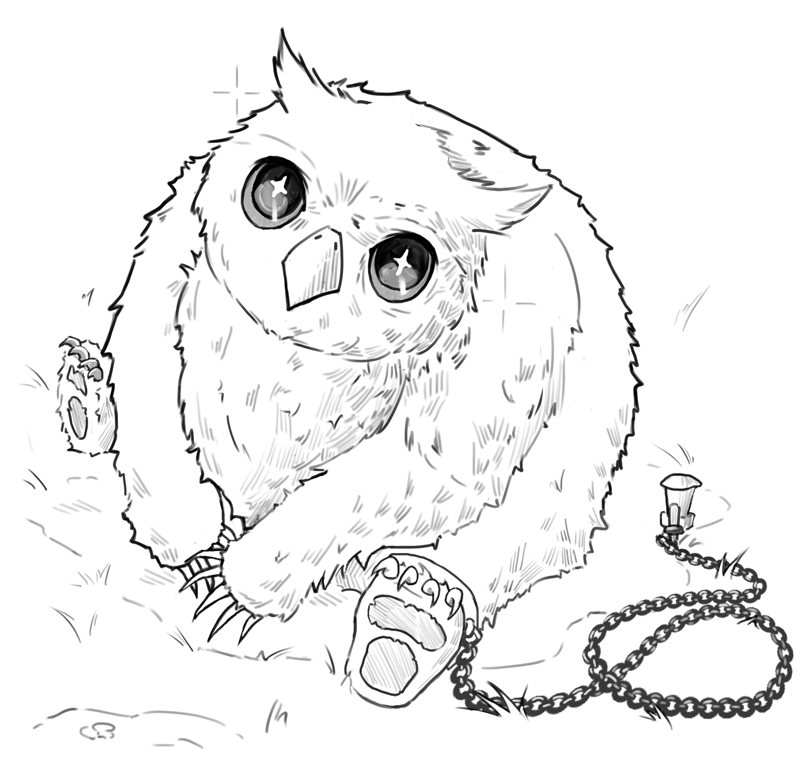
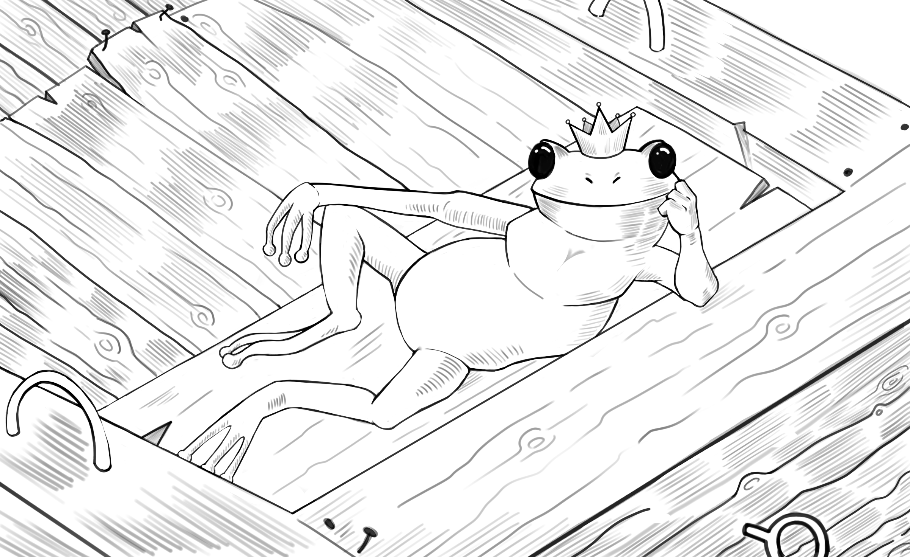
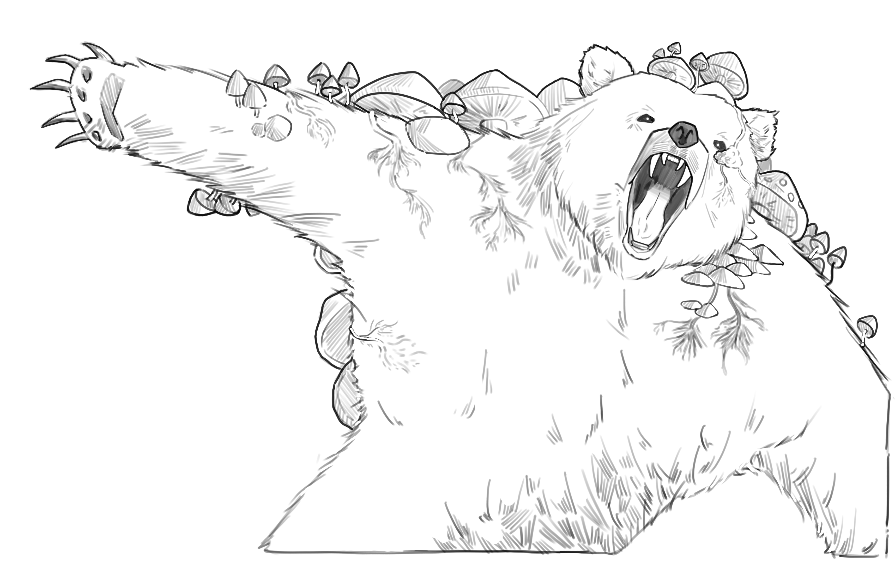
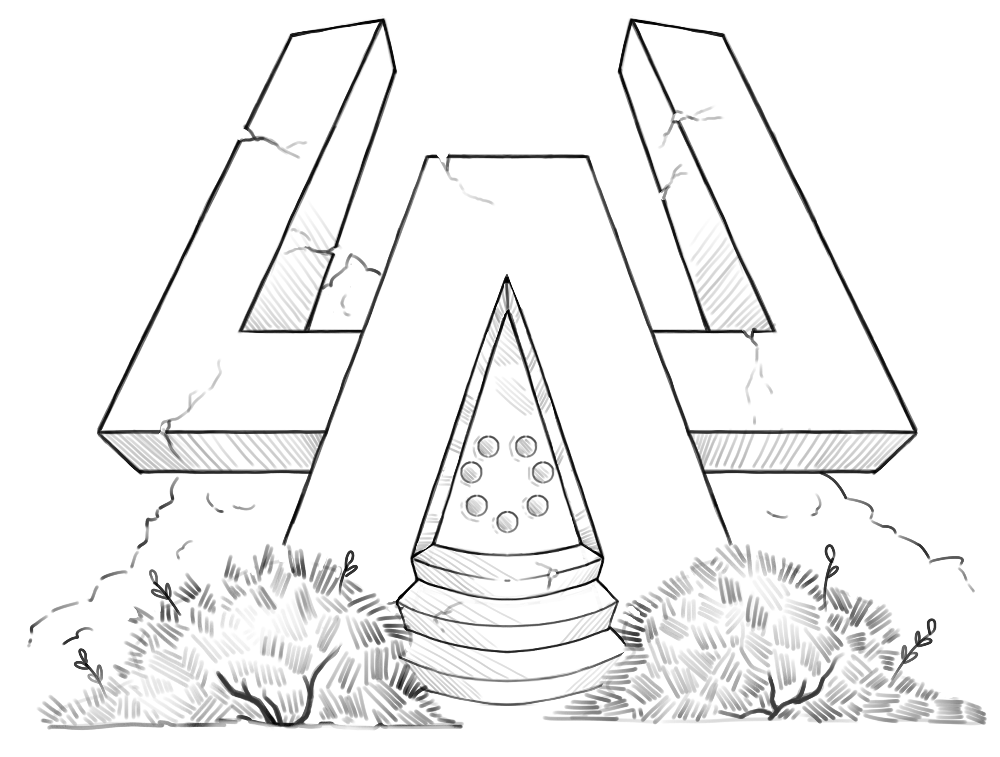
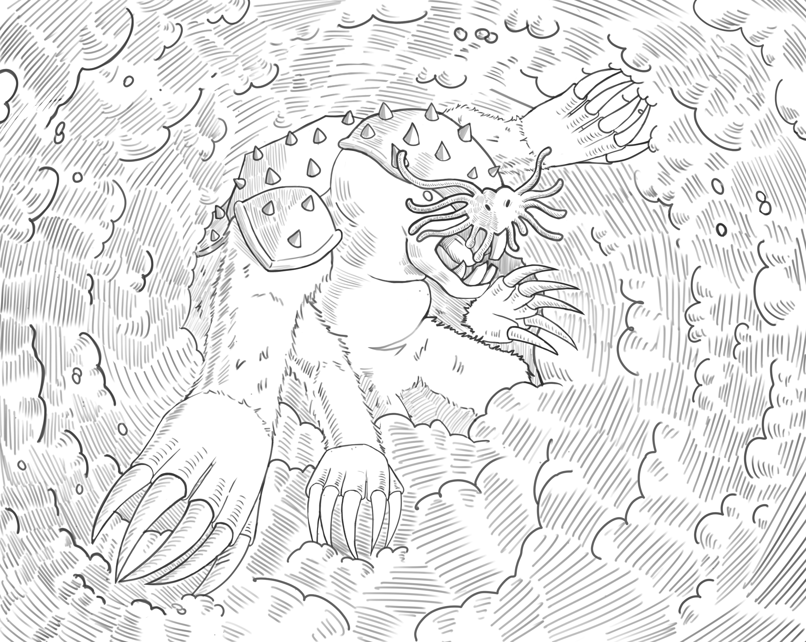

66
Your draconic appearance clearly labels you friend not foe to the beast.
It lowers its head and any sense of threat you felt from it washes away,
replaced with a feeling of sadness. Perhaps it’s this new form of yours,
but you seem to understand the animal’s thoughts on some higher level.
You know that it has been missing its father for some time and has only
recently grown large enough to search for them. This creature is the
source of the destruction around you, but it feels guilty. It’s the
result of a scared child, not a beast run amok.
The dragon calms in your presence, perhaps no longer lonely thanks to
you, and it seems to read your mind as well. The dragon learns about
your quest to find the missing boy and save these woods, and about the
great threat that the nearby black smoke truly poses. The beast wants to
help.
It snakes its neck around in front of you, and you know it is urging you
to climb aboard.
The scales of its neck are smoother and softer to the touch than you
expected.
Turn to
55
.
67
You let go of your weapon and Weldo nods sagely. "Very wise," he says.
If you'd like to try and convince him to just give you the flute, roll
against your Charisma. If you're successful, turn to
443
. If not, turn to
503
.
You could look through your pack for something to trade instead (turn to
554
). Or you could change your mind again and try to take the flute by
force (turn to
506
).
Or, of course, you could leave the hut altogether (turn to
103
).
68
You shift pile after pile of dense dirt out of the way, tossing it to
the side in heaps. It isn't long before you start discovering items
within the grave, but far from what you expected. The tiny hollow bones
of a small bird, The sharp-toothed lower jaw of some wolf-like
carnivore, broken sections of elk antler, the claws of a bear, the tusks
of a boar, and a menagerie of other animal parts as well.
And there, at the deepest point, you finally find a human skull beside a
simple wooden box. You sweep the dirt from the box's lid and can make
out a symbol: great antlers intertwined with climbing leafy vines. This
is a druid's grave: a mage attuned to nature, capable of shifting into
the shape of animals or of influencing the plants themselves. Now they
have returned to nature, and surely they have no need of material items
now?
Inside the box you find 2 Gold Pieces, a Potion of Plant Control, and a
collection of nuts that still seem edible. Add 3 Food Items to your
inventory.
All that's left to do is return down the path (turn to
79
).
69
With the boat bobbing in place close to the shore, you carefully direct
its prow across the river and place your magical conduit in the water
behind. You feel the primal energies flow through you, and a trickle of
bubbles starts to appear. It grows and grows in intensity, until that
trickle of bubbles is an aggressive, chaotic, bubbling mass. But it has
the intended effect: you start moving forwards, slowly then incredibly
fast - catching air occasionally as the boat slices over small waves.
At the speed you reach, you estimate that you should have hit the other
shore in less than a minute and yet it feels like an hour passes without
striking land. You break your focus for just a moment to look ahead, and
spy that you're only about halfway across the water. This river is
indeed enchanted, but at least you have a way of speeding the journey
along.
You check over your shoulder more often as you continue, slowing the
boat down on approach to the shore so you don't crash painfully to a
stop. Instead, you slide up the bank safely and the boat rests for a
moment before the bow splits and falls clean open.
You are tired and the boat is spent, but your adventure can continue
(turn to
468
).
70
"I think it's a ring on a piece of paper," you say.
"Quite the thinker, aren't you?" She replies, scowling back.
Ask, "what do you think it is?" (Turn to
170
).
Attack the woman (turn to
218
).
Examine the ring more closely, (turn to
600
).
71
You draw your weapon, ready to fight, and the creature blinks its sleepy
blink at you. "I do warn you, friend," it begins before yawning. "I'm
not as spry as a sapling, but I'm a stronger foe than I might look."
If you still wish to try attacking the log creature then go to
94
. Or you could put away your weapon and head East at
606
, or West at
213
.
72
In a fit of desperation, madness, or both, you fling the attractive hat
you purchased some time ago at the fearsome dragon. It snatches it out
of the air with its menacing jaws, presuming it to be an attack of some
kind.
But the fates shine upon you, for the dragon immediately starts coughing
and gagging as the hat wedges itself in its throat! Moreover, whatever
the headwear is made of seems to be suppressing the dragon's ability to
breathe caustic gas. Perhaps the beast is allergic?
Either way, the dragon has one less weapon against you just in time for
a fight to the death.
|
FOREST DRAGON
|
Prowess 10
|
Health 16
|
If you defeat the dragon, turn to
566
.
73
You pull the magical flute from your bag in a rapid motion and remember
what the old luthier taught you. You focus your energies on the angry
halfling, put your lips to the instrument, and play...
Phil is distracted from his furious shout by the very bridge rumbling
beneath him... Then, in a flash, the stone reforms itself into
tendril-like pillars that jut up all around the halfling, converging at
the top and creating an impenetrable cage! Of course, the material for
those pillars had to come from directly below the barbarian, which
created a hole just large enough for him to fall through. You hear a
splash and then receding, angry shouts as Phil is washed away down
river...
If you have Roland with you, turn to
470
.
Otherwise, turn to
326
.
74
You tell Roland that the area beyond the bridge is the most mysterious
and ancient part of the woods, so if a princess is anywhere then it
would surely be there. In the very least, he would have met someone in
his travels here that would have seen a princess or a tower if it truly
was South of the river.
He considers the logic for a moment and then thanks you for the advice.
With a great laugh, he claps your arm again and heartily agrees to join
you in battle against the bridge guardian.
You could still surprise attack Roland (turn to
501
), or you could travel with him along the wide main road towards the
bridge (turn to
39
) or travel alone to the South (turn to
342
). Or you could walk down one of the narrower cobblestone paths to the
East (turn to
557
), or the West (turn to
398
).
75
"Very good," Madame Dupont says as she collects three more gold from
you. "The next number is 4, and you only have one to go. Can I not
interest you in it, for the small, small price of three Gold Pieces?"
Buy one more (turn to
236
).
Or you could ask her something else:
"How do I cross the river?" (
518
). "Where is the missing boy?" (
382
). "What is the beast of black smoke?" (
533
).
Of course, stepping away from the thieving stranger is an option (turn
to
425
).
76
The path curves towards the East as you walk, gradually directing you
towards a thin column of grey smoke winding into the air above the
trees.
Turn to
112
.
77
You follow the cobble path for a while, wondering who could have
possibly built such a thing in this forest. You've seen no industry, no
towns, and yet there's infrastructure. Perhaps the forest wills these
things into being?
You are pulled from your thoughts by an echoing, low groan off to your
side. It sounds like some kind of strange cow at first, but it looks
like no cow you've ever seen. A great, dark figure rises from the ground
with a rumble. It has a small thimble head at the end of a long neck, an
immense body whose spine is lined with huge bony plates, and a long tail
that tapers to a vicious looking mace of spikes. You know this animal,
though you thought it extinct... a Stegosaurus!
The beast lumbers towards you...
Quick, do you wait and see what it does (turn to
42
), flee East (turn to
492
) or West (turn to
260
), or attack (turn to
321
).
78
You tell the hero every detail of your encounters with this princess,
and he seems baffled and shocked in equal measure. Partly, you expect,
because he's amazed with himself that he missed any hints of her or the
tower in his own travels.
"I must see this for myself, but I appreciate the advice, my friend," he
says, putting a hand as big as your skull on your shoulder. "It seems my
quest will end soon one way or another, so I want you to have this."
He lifts the rope up over his head and puts the medallion into your
hand. The amulet is heavier than you'd expect, perhaps weighed down by
the immense magical potential you sense within it. You can access a mere
fraction of the power, and that already invigorates you (roll to gain 1
Trait).
Then, with a final smile, Roland goes to collect his belongings and
starts walking South.
Now alone at the crossroads, you could travel towards the bridge in the
North (turn to
39
), the East (turn to
557
), the South (turn to
342
), or the West (turn to
398
).
79
You return to the wider path through the narrow trail and emerge into
the crossroads. You could now explore the ooze-covered trail ahead of
you (turn to
286
), travel to the North (turn to
385
), or travel to the south (turn to
589
).
80
It's slightly awkward lifting the man's head off of the shelf, partly
because it keeps trying to engage you in conversation or bite at your
fingers if they get too close to its mouth. Still, you manage to point
the glass shaft emerging from the "drink's" top into a glass and a pink
liquid slides out. Not a pleasant experience, but at least it seems to
have calmed the head down as you place it back.
The zombie patron takes a hearty swig and groans a loud, joyful shout. A
job well done, it seems.
From down the bar, the bartender shouts "7!" at you and offers a warm
smile.
Turn to
185
.
81
You try shouting various questions through the floor, but the voice
never seems to hear you or respond with any kind of logic. It just keeps
asking if anyone is there, and something about getting a drink at the
bar. Perhaps that's what they did before entering the cellar and getting
trapped?
Talking to the stranger is getting you nowhere, you might as well walk
back to the middle of the inn (turn to
137
).
82
The crone falls unceremoniously. On her body, you find a strange little
stone device. It's triangular in shape, made up of many layers that can
each independently rotate. Could this be the strange magics she
mentioned? The device she was going to use to destroy the whole tavern?
You don't know what to make of it, so you stow it away. The wand,
unfortunately, seems tied to the crone's life force and it's now little
more than a stick.
With that done, you suppose there's nothing stopping you using your last
swig of that foul drink.
Turn to
536
.
83
You come upon a junction, marked out by a huge statue on the Eastern
side. Two great paws intrude upon the path a little, but, halfway up
their length, they are covered in what seems to be flowing human hair.
The statue's head appears remarkably human in general, and you can see
huge stone wings stretching up into the air behind it. A curious
creature. You can make out some kind of message carved into its
lion-like chest.
Read the message (turn to
339
).
Or travel to the North (turn to
557
), the South (turn to
579
), or the West (turn to
342
).
84
You shout back an order for ale and the elven smiles warmly and
complies.
Each ale you order costs 2 Gold and restores 2 Health. The drinks are
potent though, and for each ale you order after your first you must roll
against your Constitution to see if your body can handle any more.
"So," the elven continues after you've guzzled your fill. "Anything else
for you, my floppy eared friend?"
You could ask what this place is (turn to
117
), what the drink that sent you here is (turn to
608
), or why someone would make an inn in an enchanted wood (turn to
511
).
Or, if you've examined the cellar door, you could ask about that (turn
to
217
).
85
Your mouth falls agape at the sound. "That's... not any note I've ever
heard. And that instrument isn't like any I've ever seen," you tell the
halfling, who grins in response.
"Ah, I didn't take you for a music lover. That, my friend, was a H
note."
That revelation floors and baffles you all at once, which Weldo takes as
some high honour. You could swear you see a flush on his cheeks. "This
flute," he explains. "Is the only one of its kind. And it's magical to
boot! You play one of the four note melodies that I have tuned into the
instrument, and the magic will take effect - but only on someone feeling
true anger. If I played F-E-E-D right now, you'd be overcome by a
ravenous hunger. If I played F-A-D-E, you would disappear."
Every sentence blows your mind even more and the halfling seems overcome
with emotion.
"Traveller... Tell this old luthier, why are you journeying through this
forest?"
How would you like to reply?
|
"For heroic, noble reasons."
"For the thrill of exploring alone."
"For gold and glory."
|
Turn to
230
Turn to
568
Turn to
35
|
86
You withdraw the mushrooms you collected from the fallen fungal bear
from your pack. They come in a variety of shapes, sizes, and colours,
but they all have a dense meat-like texture and should all have the same
desired effect.
There's no sense in delaying this so you pop one of the smaller
mushrooms into your mouth and start chewing. It is truly, truly
unpleasant. Like biting down on a lump of raw steak, though dry and
bitter. You hold your nose to help with the taste and use water from
your pack to slide the awful mushroom down your throat, only to take a
large bite out of another one. You need to be incredibly small for who
know how long, after all.
It's the most gruelling meal you've ever eaten, but you soon feel the
magical effects take hold. And, thankfully, it takes hold over your
equipment too. The trees around you loom larger, the space between them
feels vaster, and the root laden floor gradually seems more like rolling
mountainous hills than a forest trail. While your legs are long enough,
you position yourself right above the root tunnel and...
You keep shrinking until you tumble straight down into it.
Turn to
364
.
87
The metal amulet slots perfectly into the hole where it sits idle for a
few moments. Then, suddenly, it starts glowing red hot and an image
bursts into your mind. It's of a small woman with great round glasses,
her voice high and melodic.
"The Rex has scared away or eaten the guests," the voice says. "And good
riddance. They wanted a monster, I wanted something that'd pull in
heroes. I think we both win. And, when those tokens get here, I can take
them to the shrine and those dumb heroes can have their cake," the voice
snaps, then saddens. "I hope they get here soon, or Rex is going to get
hungry and I'm the only meat around...”
The memory ends and the metal token pops out of the crystal. That must
have been the flesh mage that built the monster outside, and this
crystal was made to reveal thoughts locked inside metal tokens?
What do you do?
|
Insert a token from your bag
Place your hand on the crystal
Step away and look at the table
|
Turn to
542
Turn to
146
Turn to
280
|
88
You sit for an hour or so, anxiously waiting to feel some confidence
that your captor will be asleep or suitably distracted. When you're
satisfied, you first try gripping the metal shackles around your ankles
and pulling them away. The idea of a bold creature indeed, but it fails
you on this occasion.
Then you look to the lump of metal that she chained you to, and wonder
just how much she underestimated your strength...
It's a rough, but ultimately not jagged lump of perhaps iron. Small
enough for you to wrap your arms around and, though incredibly weighty,
it is not the heaviest object you've lifted. From a squatting position,
even with your legs chained as they are, you manage to grab the metal
ball and pick it up by painfully activating the same incredible muscles
you use in jumping. Then it's simply a matter of making what feels like
hundreds of tiny steps towards your backpack, then squatting back down
and rolling the metal ball from your arms as quietly as possible.
You are sweating and aching by the end (lose 2 Health), but your
supplies are within reach...
Turn to
341
.
89
Your flesh thickens and hardens, creating a dense armour though
remaining as supple and flexible as ever. Despite that, you feel much
heavier and simply can't move as quickly while this magic is in effect.
Luckily, you don't need to move quickly. You plunge your hand into the
hive and pull out an excellent sample of Bee Tar. The denizens of the
nest swarm you, doing their very best to sting and deter you, but they
simply can't penetrate your natural armour. You feel so confident and
safe that you actually whistle as you wander away, more and more bees
losing interest in you as you go.
Eventually the swarm has given up altogether, and just in time for the
skin-hardening magic to fade.
Would you now like to travel to the North (turn to
77
), or to the South (turn to
449
).
90
You take in a deep breath and steady your hands. You think on all your
training, all your level-headed focus hard-won from battle. The vines
are unforgivingly tough, yes, but you are no butcher hacking away at
meat. You are an artisan of the sharp edge, and few things can defend
against your focused strikes.
Roll against your Strength +5, if you roll equal to or lower than this
number turn to
532
. If you roll higher, turn to
513
.
91
You try to explain your search for the boy lost in the woods, and about
the black smoke the village woman saw. You don't get the impression that
either noble is truly listening.
"Why would I care about a journey so bereft of romance," the male noble
says, not breaking eye contact or lowering his wand from his foe.
"Truly," the female agrees. "Nothing matters more to me than
incinerating this turgid semi-digested swamp maggot from the face of our
fair land."
"Oh you vitreous cow," the male spits back. "You, rabbit, either bear
witness to our duel or run quickly along."
You could offer to help them in the hope that the survivor will offer
advice (or that the defeated will have something good in their pockets).
If so, turn to
302
. You could just do as they advise and head North (turn to
133
), or West (turn to
173
).
Or, naturally, you could get a surprise attack in while they're
preoccupied... (turn to
282
).
92
The door is made of dark oak with a huge steel knocker hanging at head
height. You go to grab it, only to notice that the door is already
slightly ajar...
If you have the means to detect magic, you could try doing so now (turn
to
48
).
Or you could push the door open and enter the tower (
524
).
But perhaps you would rather let this lie and continue your journey to
the East (turn to
342
), or the West (turn to
77
).
93
You ask them what they hope to achieve in combat like this, and you
receive a scoff from each of them in turn.
"Honour, of course," the male says.
"Killing this reeling intestinal worm of a man would not bring me
honour," the female spits at his feet. "But it would certainly make me
the sole love of dear Arressa."
"Charlatan!" The man shouts. "You, rabbit, we shall wait no longer!
Either bear witness to our duel or run quickly along."
You could offer to help them in the hope that the survivor will offer
advice (or that the defeated will have something good in their pockets).
If so, turn to
302
. You could just do as they advise and head North (turn to
133
), or West (turn to
173
).
Or, naturally, you could get a surprise attack in while they're
preoccupied... (turn to
282
).
94
With well-practiced grace, you ready your weapon...
But as your muscles start to tense, ready to unleash your blow, the
creature creaks like splintering wood and your muscles don't stop
tensing. Tighter and tighter, into denser and denser knots. It feels
like your body wants to fold in on itself, and you're powerless to stop
it.
You crumple towards the ground as your legs cramp up, the log creature
gradually becoming eye level with you. The placid, undisturbed look on
its face is haunting.
When you're in as tight a ball as you can possibly be, all of the
tension suddenly releases and you drop down to the ground from a few
feet in the air. You can feel yourself rolling back and forth on the
uneven dirt, slowly settling into one place.
A moment later you can feel thin, gnarled branches wrap around you and
lift you up, before settling you rather carefully on your end.
From this upright position, you slowly figure out where you are: atop
the log creature’s head.
You have been transformed into a second conical hat to go along with the
creature's red one. Your adventure is certainly over. Though you wonder,
what colour hat did you become?
95
You lift a vial out of the pouch, tilting it this way and that to try
and discern what it contains. The liquid is thick, sticking to the glass
sides of the bottle as you move it, but it doesn't look like any potion
you've seen. You ask the Stegosaur and it rumbles back: "Blood. 5 food
each."
You could ask for more information about the blood. Whose blood, where
it came from, etc. (turn to
543
).
You can buy up to 3 Vials of Blood. For each one you buy, deduct 5 food
from your total supplies.
Or look at the other products on offer (turn to
318
).
96
You pull the flute from your bag and play it like your life depends on
it. Because it very well might...
The dragon recoils a step back, shaking its head in irritation. It
stomps its heavy feet, claws at the ground, turns as if seeking out the
source of this strange affliction. It goes still again facing away from
you, and when it turns back... It’s a human head staring forth. High
cheekbones, a square jaw, thin lips, flowing blonde hair, but the split
irised eyes of a dragon. The mouth opens and screams at you. The human
voice coming from what is largely a gigantic forest monster shakes you
to your core, but at least it can no longer use its noxious breath in
combat.
You hope the curse you’ve inflicted gives you an edge in combat.
|
FOREST DRAGON
|
Prowess 10
|
Health 16
|
If you succeed, turn to
566
.
97
It's a long trek, heading away from the Colosseum. It's made all the
longer by forcing you through that unnerving new growth forest and its
unnaturally grid-patterned trees. Still, you steel yourself and march on
with purpose, passing the crater site and continuing on.
Turn to
274
.
98
One of the paddles you find in the boat is already half-decayed, the
handle worn and snapped near in half. You grumble, but kick off and
start rowing.
You catch yourself thinking "it can't be long now", over and over, all
the while watching the opposite shore never get any closer. You managed
to row into the middle of the river, yes, but you've been rowing for
hours since and the forest in front of and behind you hasn't changed in
the slightest. The water flows beneath the boat though, the occasional
fish swims past… It's simply as if this river is far more vast than it
possibly should be.
A shadow passes beneath the boat. Immense, with a snubbed crocodilian
snout, an oval body with four flippers emerging from it, and a long tail
batting slowly so as not to disturb the water. You're being hunted, and
perhaps you have been for some time...
If you have any way to generate electricity, it might deter the predator
away (turn to
252
). Otherwise, you can either keep rowing and hope it loses interest
(turn to
368
).
99
You blink hard, that burning white light slowly giving away to details
of the world again. The ringing in your ears fades in first, though it
only reveals the rustling of leaves as all birdsong seems to have ceased
with the duel. Then you start seeing outlines of objects and can make
out the dark shadow of a noble's ostentatious wig.
It's some time before your vision returns fully, and you realise that
the wig is sitting on the stone ground, blackened and singed. In fact,
the entire mesa is scorched as if dragon's breath had rained down, black
and ominous. Neither noble is visible, so it seems their duel had no
victor after all. Arressa will be distraught.
As it's all that remains, you collect the burned Noble's Wig and put it
into your storage. You can wear it if you wish, but it confers no
benefits and looks rather silly with your large ears poking through.
All you can do now is travel towards the North (turn to
133
), or towards the East (turn to
173
).
100
You continue through the old growth forest where you make much faster
progress, most likely due to just how comfortable these ancient woods
make you feel. The freshness of the air, the flowers along the path, the
berries of every hue gleaming on bushes. It's good for the soul.
Those natural sights soon give way to something altogether unnatural
though: a pair of immense wooden doors with a great steel lock sealing
them, then a great ring of stone stretching either side as far as the
eye can see. You hear a bone chilling roar from beyond the gates and you
know for certain that this is indeed the Colosseum.
If you have the key for these gates and wish to enter them, turn to
233
.
Otherwise, you'll need to explore to find another way inside. You could
follow the Colosseum walls to the North (turn to
572
), or the South (turn to
390
).
101
You suggest all the gold in your pockets for all the gold in his, but he
simply laughs. "Asking a dwarf of my high keeping for gold is a waste of
a good bet, bunny rabbit. Either suggest something interesting or hop on
yer way."
You could say he's a coward for not accepting your wager (turn to
507
). Or, if you've examined the cellar, you could make a wager related to
that (turn to
534
).
Or, of course, you could wipe your hands of this whole thing and walk
away (turn to
425
).
102
The stranger doesn't move or flinch as you approach, just continues
rocking and muttering.
They are wearing a great helm, not unlike a steel bucket with two dark
slits for eyes. It also sports two small horns from atop it and a trail
of streamers behind in regal reds and gold; a sign that this person was
likely a knight. A guess supported by the large cross of the crusades on
their tunic, and the heavy looking chainmail that they wear. Though for
all its bulk and weight, the stranger seems to move in it with ease. On
the ground at their side is a polearm taller than you; made up of a long
shaft with what looks like a greatsword on top of it and those same
regal-coloured streamers attached beneath the blade. A weapon for
horseback combat, and beast slaying...
Hanging around their neck, is a hefty pendant with the insignia of a
dragon on it. You feel magical energy exude from it.
Before you can ponder any further, the stranger turns their head and
looks up at you. If you look like a dragon, or are wearing a dragon
helm, turn to
424
.
Or you could ask: "Who are you?" (turn to
601
), or "What are you doing here?" (turn to
614
).
103
You thank the elderly halfling for his hospitality and wish him well. He
scoffs and waves you off, telling you to see your own way out.
You weave your way back through the stacks of raw material and finished
instruments and step through the door into the junction once again.
From here, you could travel to the East (turn to
573
), the South (turn to
370
), or down a narrow path to the North (turn to
595
).
104
Traditionally, young green dragons are responsive fighters. They wait
for an opponent to make a first move then use their agility and great
intellect to end the fight in one swift response. But this dragon...
this dragon sees the skull atop your head and its eyes flash with
recognition first, then blind rage second. Whoever the dragon was that
was killed in the forest, this one thinks that you were responsible.
It roars into the sky, covering the battlefield in a green cloud. The
dragon is enraged and is now an even more fearsome opponent.
Unfortunately, you have no choice but to fight.
|
ENRAGED FOREST DRAGON
|
Prowess 15
|
Health 16
|
If you survive the encounter, turn to
566
.
105
You look to the bough and, as if sensing your desire, it starts moving
once again back the way you came. You follow it diligently and, before
long, can finally see the glory of sunlight bursting through the
blackness of the cave. You sprint towards that yawning glow and enter
into the fresh air, taking greedy lungfuls of it.
From here, you can travel North (
43
), or south (
143
).
Note: if you return here, you may not re-enter the cave.
106
Dead Intellect Devourers are somehow more disgusting than living ones.
Their dense bodies, ridged and rippling in life, collapse in on
themselves like some great deflated balloon. And the smell that pours
off of them! Like boiled leather, eggs, and acrid smoke. They are
edible, of course, and you could choose to take 5 Intellect Devourer
chunks as Food Items if you so wish.
Either way, you roll the bodies down the incline and let them float out
into the river. At least they'll support an ecosystem that's less
hostile to you in this moment.
You settle back down, resolving to continue your adventure in the
morning - when fewer deadly creatures roam these woods.
Turn to
33
.
107
You ask if she has any knowledge of the cellar door and she smirks
again. "Ah, wishing to leave this place in your own time, I see? Madame
Duponte has knowledge of this and much more, but the price remains the
same. Three Gold Pieces, and I shall reveal to you the code. Well, one
digit of it at a time."
You scowl and she chuckles. "Remember, traveller," she says. "I am
protecting you from greed by relieving you of the money you so covet."
|
Pay for 1 number
Pay for 2 numbers
Pay for all 3 numbers
|
Turn to
486
Turn to
388
Turn to
2
|
Or you could ask her something else.
|
"How do I cross the river?"
"Where is the missing boy?"
"What is the beast of black smoke?"
|
Turn to
518
Turn to
382
Turn to
533
|
Of course, stepping away from the thieving stranger is an option (turn
to
425
).
108
You bounce forward, your powerful legs launching you at the shrine and
allowing you to yank the amulet free in one swift motion.
But the crows are swift too, and angry. They take to flight at once and
you must fight them all!
|
FIVE CROWS
|
Prowess 7
|
Health 10
|
For every 2 points of damage you deal, one crow is defeated and the
foe's Prowess is reduced by 1.
If you win, turn to
60
.
109
"Look at you!" Rogue cheers. "Fates shine on you, my friend. I took you
for a lucky one the moment I saw you, but two in a row off the bat? Ol'
Rogue knows when he's beat, so here," he says, walking around the stump
and physically placing the key in your hand.
"I hear it grants entry to private chambers in some tower near here.
You'll have to figure that out for yourself, it was just a friendly game
after all."
"Now, on your way. And safe travels," he says, and you can tell by his
voice he's grinning beneath his mask.
You stow the key and walk on, realising too late that you're lighter two
portions of Food and three Gold. The stranger was a pickpocket! By the
time you storm back to the tree stump, Rogue is long gone and so are
your items.
You mutter that the key better lead to something then trudge on. You can
travel to the North (turn to
206
), or the South (turn to
574
).
110
You pour the drink and the undead patron swigs it without even looking.
Bright light beams out of the creature's eyes and mouth as it grasps up
at the sky, screaming silently. As soon as it started, it ends, and the
patron disintegrates into a mess of dust on the floor and bar top.
"Your first customer, really?!" The elven bartender shouts down the bar.
"Right, you're not cut out for this. Off you go."
He escorts you back over the bar, amongst the throngs of patrons. You'll
have to find another way to get that cellar door code...
Turn to
425
.
111
It turns out all your might isn't quite enough to overcome the sheer
noise of the bar. Though you do succeed in creating a fracture in the
otherwise pristine bar top, which unfortunately embeds a splinter into
your hand (lose 1 Health].
If you haven't tried it already, maybe flirting with the bartender will
get his attention (
144
)? You could also just wait until he gets around to you, however long
that will take... (
411
).
Or you could fight your way back to the centre of the inn (
425
).
112
You pass by a quaint little circular cottage, with a thatched roof,
wooden walls, and small round windows. A narrow chimney juts out of one
wall about halfway up, then bends suddenly skywards. From that chimney
comes a consistent, wispy plume of smoke. It's hard to say for sure, but
you seem to hear quiet, raspy musical notes coming from inside.
You could get a closer look at the hut (
6
). Or you could follow the path to the East (
573
), or the South (
370
). There also seems to be a narrow path heading from the North of the
hut (
595
).
113
You throw the Slime Organ and the beast responds by snatching it out of
the air in its powerful jaws. Just as you think your efforts were for
nought, you see the dragon try and spew noxious gas at you, but its
mouth is glued firmly shut. Whether you intended it or not, you have
robbed the creature of a powerful advantage it had over you.
But the dragon is far from incapable of fighting.
|
FOREST DRAGON
|
Prowess 10
|
Health 16
|
If you survive, turn to
566
.
114
Within the light you see every moment since you entered this forest,
overlapping in a cacophony of noise and adventure. In this view, time
seems static yet endless; unlimited versions of the present co-existing
and you see that the constant for any one creature is nothing but the
limited viewpoint their mind can handle. The eyes are a pathetic glimpse
into a person’s infinity of existence… With moments stacked like this,
you feel you could step between them. Tear down the paper-thin walls
that separate them and move freely back or forth.
The light starts to fade...
Turn to
171
.
115
The moment that life leaves the creature, it loses solid form as an
imitation princess and oozes outwards into a grey blob. There are
physical elements of the princess that remain; the shape of a hand, a
chunk of flowing dress, a tuft of hair, but the mimic is mostly its
natural amorphous state now.
You search the room, though it is scarcely decorated. The bed is unslept
in, the cupboards and dressers contain clothes too small to fit you.
Though you do discover an item of Rare Loot tossed into a corner beside
a pouch of 10 Gold Pieces.
If you can face resting in the same room as that creature’s body, you
could lay in the bed for a while. It's a little dusty, but seems soft to
the touch. If you choose to do this, recover 5 Health.
With that, all you can do is head back to the staircase.
Turn to
405
.
116
You pull the magical flute from your bag in a rapid motion, put your
lips to the instrument, and play...
Phil's furious roar becomes muffled the moment you play that last note,
like a scream into a thick pillow. Then, quite without warning, his
eyes, his nose, his mouth, his moustache sloughs off his head, slapping
to the ground. The barbarian, quite reasonably, panics. He grasps at
where his face once was, the muffled screams becoming frightened rather
than enraged. It's only a matter time before, in his panicked running
back and forth, he launches himself over the side of the bridge.
If Roland is with you, turn to
470
. Otherwise, turn to
326
.
117
You ask what this place is, gesturing around at the madness of an inn at
peak business hours. The elven raises an eyebrow and replies "well, it's
an inn." Then he chuckles. "Not sure how you'd have missed the sign, but
you're standing inside The Good Life Tavern. But hey, no time to chat,"
he says glancing nervously at the waiting patrons. "You ordering?"
You could order an ale. The price seems to be two Gold (
84
).
Or, if you've examined the cellar, you could ask about that (
217
).
Or, you could have to step away and explore elsewhere (
425
).
118
You close your eyes and mutter a prayer, the words of which seem
impossibly familiar to you thanks to this strange memory stone's powers.
You stomach churns for just a flash and you feel the cold crystal
disappear from beneath your hand. But, when you open your eyes again, it
is you who has moved.
You are standing at the top of the hill overlooking the new growth
forest once again. You can see the distant Colosseum in the West and the
dangers you faced there. But now it is time to move forward.
To the North is the still smoking crater (turn to
348
), or there is the desolate forest to the East (turn to
609
).
119
The fugally infected section of forest is unnerving, though you hope
that it will fade now that the creature serving as fuel for the spread
has been dispatched. You march to the South, finding some comfort in the
thick white threads that mark the fungal spread growing thinner as you
travel. Eventually the mushrooms sprouting from it stop appearing
altogether, and the root-like white tendrils become just disparate
strands.
In time, you are walking through a normal dusty path in the forest once
again.
Turn to
43
.
120
You try to reason with the Stegosaurus that there is no guarantee at all
that it truly is the Holy Grail. It looks impressive, yes, but there is
no feeling of magic from it and the dinosaur itself didn't plunder it
from some ancient tomb. Given the chance that it was itself fooled, you
simply can't pay what it's currently asking.
Roll against your Charisma +2. If you succeed, turn to
375
. Otherwise, turn to
188
.
121
You search the camp and come up with just 5 Gold Pieces and 2 items of
Common Loot, plus one untouched roasted rat that can serve as a Food
Item if you want to take it. You also find a Key on the belt of the
largest hunter, which you suspect is to the trapped Owlbear's cuff.
The Owlbear cub whines as you approach, flopping back onto its rear and
looking up at you with wide, sad eyes.
You could release the Owlbear cub and risk it attacking (turn to
412
). Or you could simply move on, happy that these hunters won't harm any
other animals. From here, you could travel to the North (turn to
83
), or the West (turn to
442
).

122
The gap in the brambles was smaller than you thought, or you greatly
underestimated the size of your ears. You feel little slices and jabs
from sharpened thorns as you progress, almost like the bush itself is
reaching out to taunt and harm you. Roll against your Constitution. If
you fail, lose 1 Health.
Beyond the bramble bush lies a clearing, with the same thorny foliage
that you just climbed through growing thick and menacing around the
perimeter. It seems planned, like an arena or stage, and at the centre
of that show is some kind of crude wooden shrine. Its base holds a
shallow black cooking pot, dented and rusted. It must be far, far older
than you and certainly not food safe. From immediately behind it, large
planks of roughly cut wood jut out of the earth in a fan shape, but the
decorative placement does nothing to hide the knots, chips, holes, and
moss all over them.
And yet, on the shrine, is an amulet. It seems to be made of purest
gold, with a large magical rune carved into the centre of it. Smaller
runes are engraved around, and the shabbiness of the shrine makes this
amulet seems beyond impressive.
Before you can think on what to do, a flurry of feathers and shrill
squaws descend on the shrine. In a flash, five pitch black crows have
landed atop the wood with eyes fixated on you and their proud chests
puffed. They squawk again, and you realise that all five are making the
noise in unison, voices overlapping and giving the din power.
"BECOME A DRAGON," they shriek as one. "LEAVE AN OFFERING, TAKE THE
AMULET. HOARD THE GOLD. SQAUWK!"
They eye you expectantly and you recognise that they want you to offer
up an item on the shrine's bashed pot. If you want to offer an item,
remove one from your pack and turn to
259
. Or you could ignore them and go back through the bramble at
377
.
The amulet is right there… You could try snatching it at
108
.
123
You rub your forefinger and thumb together to indicate money, suggesting
that the dinosaur accept gold rather than food. The Stegosaurus snorts
indignantly and moans "Can't eat gold."
Ask: "how did you become a merchant?" (turn to
235
). Or simply browse the animal's wares (turn to
318
).
Attacking the dinosaur is also an option (turn to
321
), as is travelling on to the East (turn to
492
), or the West (turn to
260
).
124
You ready your weapon and Phil responds in turn, drawing the huge
greatsword from his back and holding it aloft. He squats and roars this
primal sound, allowing his rage to take over.
Phil is angry and may be vulnerable to the effects music.
If Roland is here, you could fight Phil together (
150
). Otherwise, you'll need to fight him the old-fashioned way (
563
).
125
Taking a steadying breath, you draw your weapon and step into the
clearing. The dwarf notices you approach and lowers his roasted rat,
nodding to his colleague to look your way.
"Oi oi, what's this then?" The largest of them says, turning towards you
with a grin and a hungry look in his eye. "Got an animal waving its
little weapon at us!"
"Bunnyborn no less..." the dwarf says with an air of wonder.
"No less," the huge one agrees, standing up and grabbing his weapon.
"Oi, Scab!"
"What?" The skinny hunter relieving himself in the bushes calls back.
"Get over 'ere! We're makin' more gold from this trip than we thought,"
he says. The dwarf stands too and grabs his axe, the skinny one
stumbling back over still doing up his britches. It's three on one,
true, but the skinny one hasn't had a chance to grab his weapon and
they're all a lot more drunk than you. Let's hope that gives you an
advantage.
You may fight the hunters in any order.
|
HUGE HUNTER
DWARF HUNTER
SKINNY HUNTER
|
Prowess 5
Prowess 6
Prowess 4
|
Health 10
Health 4
Health 3
|
If you live, turn to
121
.
126
The thick furrowed brow of the Hobgoblin certainly makes them
seem
angry but is simply how their face falls. In fact, you sense a certain
kindness in the creature's large eyes.
"Well ain't you a hop 'n a skip away from home," the creature says in
its natural grunting manner. "Was gunna charge you a toll, but yerve
got problems enough I reckon."
You realise that the creature was brandishing a wicked looking serrated
dagger, which it now holsters into its belt. It takes a seat on a nearby
fallen tree, reaches into a rotted hole, and pulls out a snail which it
deftly pops into its mouth.
"Ol' Bogrob ain't nothing but charitable," it says while chewing and
crunching. "So I'll even give some shining advice. You want to head
norf, you'll have a hell of a time crossing that river. I told the
little one that came by the same fing, but look around enough and you'll
see you got options. Now, on your way 'fore I decide to charge you after
all."
You see the jangling bag of gold at the creature's hip. It must hold the
collected tolls from travellers before you... You could attack the
Hobgoblin to try and take it by turning to
484
.
Or you could head towards the North at
589
, or towards the West by turning to
606
.
127
The device starts spinning of its own accord and you drop the stranger's
arm. You see dust floating upwards, cobwebs unspinning themselves, and
you realise that it's begun. You run to the cellar door and push at it,
waiting for the debris sealing you in here to reverse and de-collapse.
After a moment, you suddenly lunge upwards as the cellar door relents!
You're out!
You burst through into the room above. It's a mess, but nowhere near as
bad as you first saw it. You manage to catch a glimpse at the support
beam by the cellar entrance un-cracking as you dash past towards the
door, the debris covering it long since repaired.
And then you emerge out into sunlight! Freedom!
You pause for a breath and realise that you feel younger than you
thought you would. Younger, annoyingly, than when you did your most
intense training (lose 1 maximum Health).
Turn to
381
.
128
You follow the wooden path to the South, and it soon becomes a set of
stairs that are seemingly carved into the face of a downward hill. The
ground is unrelenting beneath your feet, and the stairs dangerously
narrow for a descent so steep.
Turn to
173
.
129
If you're to discover the secrets of the Colosseum, you have no choice
but to fight this monster. From your vantage point up here, you can like
get off a free ranged attack (if you are able to), but you know those
long whip-like arms will snatch you easily out of the stands once the
creature knows you're here. Perhaps that's why this place has been
deserted so long...?
It's not too late to clamber back out of the Colosseum window and
retreat to the crater (
555
), or the desolated woods (
97
).
But if you are brave enough to continue, make your surprise attack if
possible now and then jump down into the arena...
Turn to
466
.
130
She looks away from you for but a heartbeat and, when she turns back,
her hatred has given way to a stoic acceptance.
"Verry well," Marfisa says. "Perhaps you will be a better trainer than I
thought. Tell me then, oh
master
, what do you suggest we start with? The weights? The bow?"
You suggest a spar. There is no better way to assess her current
ability, nor her ultimate potential.
"The last trainer needed no such thing," she scoffs. "He taught me
entirely from behind those bars." She considers it for a moment. "And
there too was he executed for his lack of ability. I see your point,
rabbit. Very well, tonight we spar."
She approaches you and tugs a ring of heavy keys from her belt. She
unlocks the steel binds around your ankles, and the air against your
newly freed flesh is cool and soothing.
Little does Marfisa realise, this will be a fight to the death.
Turn to
409
.
131
The thought of drinking whatever is in that bottle fills you with
disgust and dread, so you pocket the thing and endeavour to try
something else first. You step back into the middle of the inn and
assess the wreckage covering the entrance. It fell recently, perhaps
there is a way of clearing it.
If you have a Potion of Incredible Strength, turn to
270
. If you have the ability to create intense heat, turn to
18
.
Otherwise, drinking the potion may be your only resort... (
605
).
132
You pull the flute from your bag and play it like your life depends on
it. Because it very well might...
With an awful schlepping sucking noise, you watch the dragon's body
painfully fold up into its head. The claws try so desperately to claw at
the ground, but the bones of its shoulders and arms crunch and compress
so that it can be pulling into its neck. The wings make similarly
grotesque sounds as they crunch and compress and, before long, it's just
that slender tail slurping up into its final resting place inside the
animal's skull. The beast falls still, alive but surely not comfortable.
The fight is over, even if the method used fills you with guilt.
Turn to
566
.
133
You start descending the hill and the stone soon gives way to soil and
root again. The colourful foliage fades too, those vibrant blues and
reds all but disappearing within ten minutes of hiking only to allow the
verdant greens you’d expect of a forest to dominate the canopies.
The other change you notice is a more concerning one: trees and rocks
look to have been melted, oozing in on themselves in unnatural ways,
like melted wax. The grass grows sparse and then disappears as you walk,
the ground similarly melted, frozen in a lava-like flow. There is no
smoke, there is no movement. Whatever did this, it was not recent.
Turn to
546
.
134
You tell Britomart that this doesn't look like a shop, and that she
doesn't look like a shop keep. "Yeah, well..." she replies scoffing,
then sighs. "Yeah, well, you're right."
"I used to be an adventurer. Still got my bloody token too but can't
find head nor bloody hair of a prince so I guess my quest is just a dead
end." She shrugs. "Set up a nice little shop and settled down."
"You know what?" She squats and rustles under the bar area, eventually
standing and slamming a ring on the table. It looks valuable: a gold
band with a clear emerald stone. "Maybe you'll have better luck. Bloody
fortune teller told me that ring would '
unlock the prince's heart
', but there's no prince and no heart as far as I can tell. There's a
princess, but she creeps me out..."
You thank the shop keep, not wanting to refuse an item of value. As soon
as you touch it, the latent magic inside you resonates with the ring and
you realise that this is a Ring of Frog Seduction. The fortune teller
had quite the sense of humour...
How would like to respond?
|
"Show me your wares."
"Do you get many customers?"
|
Turn to
497
Turn to
526
|
Or continue your travels North (
342
), or East (
316
).
135
You crouch down and reach out a hand. The Owlbear cub steps forward,
sniffs you, then mushes its head into your palm. It coos under your
touch; looks like you’ve found a friend.
The Owlbear cub will follow you and come to your aid in combat. Once per
fight, you may roll for the Owlbear to spring from the trees and strike
(D20 / 4, rounded down).
With your new companion at your heels, you head off. Do you travel to
the North (turn to
83
), or the West (turn to
442
).
136
The way back from the dense woods is an increasing relief. Those thick
tree trunks being as tightly packed as they were made you feel
claustrophobic, and the knotty roots underfoot were a pain to clamber
over without tripping outright. But the route back is a smooth
transition into an easier journey, and the hut is a welcome sight when
you arrive back at it.
If you haven't already, you could get a closer look at the hut (
6
). Or you could follow the path to the East (
573
), or the South (
370
). Or, if you're keen to re-enter the dense woods, you can go back North
(
595
).
137
You try and assess where to go next. You need to get out of here
somehow, but the wooden beams covering the entrance are impossible to
shift. Whoever is trapped in the cellar seemed to know something about
the bar though...
To explore the bar, turn to
47
.
138
You picture the haggard man you found in that enchanted cave.
"I would have liked knowing you in life, adventurer," his voice offers.
"That cave made me lose sight of all the light in the world. My family,
my purpose, my joy. But you... you
are
light. I would very much like to lend my support, if you will accept
it."
Would you like to insert a different token?
|
The Colosseum token
Marfisa's
George's
Perceval's
Britomart's
Roland's
|
Turn to
495
Turn to
268
Turn to
394
Turn to
469
Turn to
502
Turn to
499
|
Or you could touch the crystal (
146
) or look at the table (
280
).
139
Undeterred by vague rumours or mysteries, you reach down and pick up the
ring. The woman dives behind the rock, only to peek out above it when
you don't spontaneously combust.
"You, uh, feel funny or nothing?" She asks, gesturing up and down your
body. You consider the question, but then say you feel fine. Normal.
Unchanged. Picking up the ring has done nothing to you, though it does
seem to have released the dramatically written note which now blows away
in the breeze.
"All right, all right," she says, rising to her feet. "Best try it on then.
You might have stumbled into something special there."
She can't hold back her excitement, that gold tooth on full display as
she grins like a child.
You slide the ring down your finger.
Turn to
257 .
140
You move into position at the bar and are immediately flagged down by a
hand missing several fingers and much of its flesh. You follow the arm
up to find a mostly rotten humanoid, groaning impatiently at you. It has
dark hair styled into a dramatic quiff, which you suspect is a wig
considering its undead status. It doesn't have the vocal cords remaining
to make a descriptive order, so you'll need to choose a drink...
|
A steel flask with glowing runes engraved into it
A sphere of reinforced metal, making a hissing noise
A curling Viking-like horn flagon
A glass bottle with 8 eyes and writhing spider legs
The decapitated head of a dark-haired man
A gelatinous looking bottle that wobbles on the shelf
A conical flask glowing with an intense white light
|
607
174
587
474
80
357
110
|
141
You steel yourself and superheat the metal shackles, digging your paws
into the dirt to prevent screaming in agony. You smell burning fur,
singeing flesh, and the shackles become malleable enough to push off of
you.
You watch the glowing hot metal cool slowly on the ground, if only to
distract yourself from the burns around your ankles (lose 3 Health).
Your escape has attracted unwanted attention...
Turn to
4
.
142
You pull the magical flute from your bag, put your lips to the
instrument, and play...
In one moment, Phil is standing on the bridge before you with his legs
splayed and his fists thrust into the air, roaring a primal battle cry.
In the next moment, he is nothing but a head which falls painfully to
the ground without a body to keep it aloft. You have no real idea how
Phil is still alive in this form, but there's no doubt that he is
considering the endless stream of profanity and threats he's levelling
against you. In this form, at least, it's much easier to ignore him.
If Roland is with you, turn to
470
. Otherwise, turn to
326
.
143
You continue down the forest path, dry soil compressing underfoot with
each step. Before long it winds around a corner and starts opening into
a clearing. Dappled sunlight trickles down through the canopy above,
and, while you admire that, you almost miss the squat red creature
leering at you.
"OI," the creature beckons in a rude, nasal tone. You're being flagged
down by a Hobgoblin, and it doesn't look happy to see you.
Roll against your Charisma to see if this creature is a friend. If you
succeed, turn to
126
.
If not, turn to
545
.
144
You let out a shrill whistle and impress even yourself with how
effectively it cuts through the madness. It earns you a glance from the
bartender, which is where you batting your eyelids comes into play...
Roll against your Charisma +2. If you succeed, turn to
476
. If you fail, turn to
149
.
145
"Strongest stuff you'll find. They don't even make it like this anymore,
which is a shame because nothing hits the spot quite like it. I hear you
can also use it in potion making, but I wouldn't know about that... 20
gold."
You quibble about it being very expensive and she shrugs. "It's rare,
like I said."
You could buy the Potent Ale or look at Britomart's other items (turn to
497
).
Or you could step away and travel North (turn to
342
), or East (turn to
316
).
146
The crystal is cool to the touch, and, as soon as your hand rests upon
it, you feel strange words enter your mind… You recognise it to be an
incantation of teleportation.
You could try uttering the words now (turn to
118
).
Or examine the circular indent (
299
). There's also the option of stepping away and looking at the table
instead (
280
).
147
The room in the deepest depths of the Colosseum contains some kind of
stone altar in the middle with a crystal atop it, and a table at the far
end of the room.
You could examine the crystal (
219
) or look at the table (
280
).
148
The path starts inclining upwards and, thankfully, the blighted sights
of melted tree and rock grow less frequent. In fact, the steeper and
harder the path becomes, the more colour that starts to surround you.
Vibrant leaves in a spectrum of colours adorn the canopies and forest
floor. A welcome sight.
Turn to
418
.
149
You muster up a demure smile and a flirtatious glint in your eye... but
you might not be the bartender's type. The elven stranger turns back to
the guests in front of him, resuming his hurried work.
If you haven't tried it already, perhaps pounding on the bar top would
do the trick instead (turn to
527
)? You could also just wait until he gets around to you, however long
that will take... (turn to
411
).
Or you could fight your way back to the centre of the inn (turn to
425
).
150
Roland readies his helm and grasps his sword, charging forward alongside
you. The northerner is fearless, using his considerable size to enter
battle like a charging bull.
But Phil is just as fearless. Roland lands a glancing blow across the
halfling's chest, but Phil responds in turn and that immense greatsword
lands true. Gruesomely, it cleaves the Northern warrior in two across
his body. As chance would have it, the amulet that Roland was wearing is
flung to your feet and you pick it up with haste. You've little time to
inspect it, but you feel the magical energy within (roll to gain 1
Trait).
In the very least, Roland must have weakened this barbarian and now you
must finish the fight.
If you succeed, turn to
225
.
151
You lift the man's limp hand and run the blade across it. You make sure
that a great deal of blood pours over the triangular device, shaking the
man's arm to encourage a greater flow.
Turn to
127
.
152
You pour the drink and crystalline fingers grip the glass, tossing the
liquid into a crevasse-like mouth. Strangely, the creature looks as if
its crying, a stream of water running down from the two black dots of
its eyes... Then flames burst out from those dots, and two great pits
appear in the customer's head.
"Oi!" The bartender shouts down the bar at you. "You had a fine run, but
your shift ends here. And no, I won't be telling you anymore of the
cellar code."
He escorts you back over the bar, amongst the throngs of patrons. You'll
have to find another way to get that code...
Turn to
425
.
153
You settle down on an inviting patch of thick green grass and try to set
up camp. You've always been quick to sleep, especially after the long
march towards the forest and in soft spots like this one, but something
is different this time.
It's not just the sun painting the inside of your eyelids a red hue, nor
is it the birdsong twirling out from deeper in the woods...
No, it's you.
You realise that the exhaustion you felt from the hike, from your sprint
down the hill, is gone. Just gone. It's as if there was no journey to
the forest at all, as though it truly is still hours ago you first
learned of this place's existence.
You are restless and energetic, and making camp suddenly seems
impossible. Moreover, that mystical pathway that appeared between the
trees is still enticingly there...
You could still try and find another way into the forest at
588
, or simply enter the forest by turning to
26
.
154
The tower shaped key slips into the lock perfectly, though it takes some
force to turn. No surprise either because, when you do turn it, you hear
a series of mechanical clicks and whirs that signal a network of
intricate machinery inside. The door is built like a bank vault!
You step inside...
Turn to
602
.
155
You march down the wider path, stepping through sparse patches of weeds
trying to claim back the route. It is clear that this road has been
scarcely travelled, but there are the straight and well-worn marks of a
carriage's wheels visible amongst the growth. From your journey seeking
adventure you've seen paths like this left by wandering entertainers, or
merchants... or military convoys. You must hope wherever it leads is
welcoming.
Turn to
322
.
156
You return to the familiar junction where you entered the forest. The
log-like creature with his bright red hat is still there but sleeping
far too deeply for you to talk to it.
You could travel along the path to the East by going to
606
, or head along the Western routh by turning to
213
.
157
From the very first moment you press your paws into the dirt and feel
the tiny, jagged stones within, you know that this is going to be a
challenging endeavour.
Lose 2 Health and turn to
68
.
158
The dwarf wipes a trail of blood from his lip and stares up at you with
fire in his eyes. "The number is 4", he growls.
You doubt that the code is just one number.
Press him for the others (
475
), or step away (
425
).
159
Your hand barely settles on your weapon before the stranger reacts! He
darts down with inhuman speed, manages to grab 3 Gold Pieces from your
pouch, then leaps back in a cloud of thick smoke. By the time the cloud
settles, they are long gone.
All you can do is travel on to the North (
206
) or the South (
574
).
160
You pull the flute from your bag and play it like your life depends on
it. Because it very well might...
The magic takes effect immediately, the dragon growing in size and its
vibrant scales darkening with age. Its once almost cute appearance
develops the fearsome countenance of a well-honed predator. You remember
too late that dragons never stop growing as they age, and this spell
appears to have done little more than power up your foe...
The creature puffs a noxious green smoke from its nostrils and lunges,
now confident that it can defeat you. You must defend yourself!
|
ADULT FOREST DRAGON
|
Prowess 18
|
Health 17
|
If you survive the fight, turn to
566
.
161
The monk clears his throat and his face falls. "To be a member of the
Holy Order is to be wed to the great light that permeates all life. In
sickness and in health, till death do us part. Quite unfortunately, my
brothers and sisters took the oath more literally than I hoped after my
unfortunate incident."
"I was the victim of an undead monster, hoping to bolster their cause by
showing a holy man within its ranks. The Holy Order saw undeath as the
end of my vows, the death that did us part, and I was sent away. This
forest welcomed me, shaded me. Became a peaceful, sacred home."
"To put it more plainly, I am a vampire," the monk says, lifting his
upper lip to reveal a wicked looking fang.
You recoil without thinking. You could attack the unholy abomination
(turn to
611
) or ask why he hasn't already pounced on you (turn to
399
).
162
You step back from the boat and examine the lake shore.
You could look at the seductively posed frog more closely (
248
). Or, if you have the grail, slime, and potent ale, you could create
the concoction that Perceval mentioned in order to cross the water (
548
). Of course, it is just a lake. You could try swimming it (
620
).
You could also return to the crossroads and continue exploring the
forest (
417
).
163
Walking across the dusty arena is the only way to truly appreciate the
immensity of it. If they were regularly showcasing battles against
beasts like the one you slew, no wonder they needed the space. Still,
the gate you aim for stands out on the otherwise flat walls, being made
of interlocked steel bars as wide as you.
Curiously, as you draw near to the gate, you hear the deep clanking of
chains and a grinding groan as the barrier lifts. You wonder if there is
a stranger lurking in the dark depths, or if this is some kind of magic
welcoming a victorious gladiator...
You could still turn and leave the Colosseum (
571
), or you could venture into the darkness and see what you find... (
493
).
164
You dart down and grab your weapon, knowing that the creature won't give
up without finishing its meal.
|
GIANT BAT
|
Prowess 6
|
Health 6
|
If you succeed, turn to
178
.
165
All voices of dissent inside you fade, replaced by an ever-increasing
certainty that this chair is the only place you belong. That vivid
belief is maintained through growing sores, atrophying muscles, and
hungers pangs when your supplies run out. And yet you still refuse to
get up, you still refuse to face that accursed wood again.
So, you don't. Ever.
Your adventure ends here, but at least you're sitting down.
166
"Oh, well I found this strange liquid, y'see," the man explains. "I gave
it a swig and I appeared somewhere else. Or, here but not here. Anyway,
I figured if there was no killing of undead or monsters or adventure, I
could at least have a good time. I partied and partied, and, uh... maybe
got a little rowdy, heh. This dwarf feller tossed me in the cellar to
keep me quiet. Woke up musta been a day later with a rotten headache and
this old witch standing over me. Said she'd murder me good so I grabbed
that potion and took the last drink. Ended up here with no way out.
'Course, been trying every bit of magic I could muster. Summoned a
bloody mage hand out there to try and lift the debris but it did bugger
all... Or maybe it was a mage foot?"
"Anyway," he catches himself and stands. "You're here now so I'm saved!
You... You do have more of that potion, right?"
Say: "no..." (turn to
266
). Say nothing (turn to
183
).
167
As you walk, the desolation only grows more frequent and disturbing.
Entire swathes of forest, melted down to strange pools of wood, and
stone, and dirt. The only reason you know some patches were once trees
at all are because the very tips of them poke out from the melted mess
like the last vestiges of candle wicks.
Before long, you discover where this destruction came from...
Turn to
24
.
168
The thick musk of rotten flesh burns at your nostrils, burns at your
whiskers, and burns the back of your throat as you push forward. And yet
you have found nothing in your careful steps, not even changes in the
caves elevation or rocks that you might throw to try and find a wall.
Moments before you reach your limit of enduring the stench, you feel an
icy tight grip around your ankle and you fall forward. Lost 1 Health.
You kick the attacker away and turn onto your back, only to witness two
balls of white and blue fire ignite within the darkness. They grow
brighter, illuminating the bleached skull whose eye sockets they
inhabit. The skull stands tall, revealing the aged leather armour that
barely still rests on the rotted flesh and skeleton beneath.
A rumbling, echoing voice vibrates through you. "You have disturbed the
rest of Guyon, and now must meet your end." The undead creature readies
a staff towards you. You have no choice but to fight by the light of its
death's flame eyes.
|
UNDEAD GUYON
|
Prowess 7
|
Health 7
|
Under the light of the Death's Flame, whenever an uneven number of
damage is dealt, the attacker loses 1 Health as well.
If you succeed, turn to
296
.
169
You dare not try and grab at the dramatically spiked club-like weapon,
but you admire it still. There's a sense of magic and uncertainty to it
and you ask the Stegosaurus for more information.
"Is to hit with," the dinosaur states simply. "You hit, sometimes spikes
go up. 25 foods." The creature brings its tail around to show its own
spiked club. "Is Thagomizer," it concludes in a surprising display of
loquaciousness.
You can buy the Thagomizer for 25 Food Items. If you choose to do so,
check this item's details in the Items section of this book.
You may also look at the dinosaur’s other items at
318
.
170
"I'm not sure," you say. "What do you think it's about?"
"I think," the woman replies. "It's a trap. No one'd put a ring like
that with a note that says 'do not touch' under it if they weren't
looking to nab a rule breaker." She speaks fervently, as if she's gone
over this a hundred times in her head already. "But then what better way
to stop someone taking your ring than by making them think it's a trap?"
"And," the woman says, turning to smirk at you for just a moment. "I
used to be a jeweller in city on yonder," she gestures in a direction
that most certainly isn't where the city lies. "Had an eye for material,
see. Could walk through stalls of trinkets, pick out those sold for a
pittance but made of something special, and re-forge them into beauties.
This here ring might not look like much, but that's Demper Gold.
Incredible magical properties, incredible value."
Ask: "why would someone leave it here?" (
297
), or ask: "what magical properties?" (
41
). Or look at the ring (
600
).
171
Vibrant and varied greens fill your view, then muddy browns of bark and
greys of rock. In a moment, you are standing back at the place where you
entered the forest.
The tree stump creature is staring up at you through ancient, tired
eyes. "When I was a sapling, guests never popped into existence in front
of their host," he says, then yawns.
The Palapin magic worked then. And that means that your goal is clear:
find the heroes who hold the ancient tokens and bring those tokens to
the shrine North of the river.
Your adventure begins again. What do you do?
You could try talking to the creature by turning to
530
, or travel East at
606
, or West at
213
.
172
You pull the flute from your bag and play it like your life depends on
it. Because it very well might...
In the wild, forest dragons are omnivorous but broadly prefer to eat
plants. They graze often and have been seen swallowing hard objects like
stones or gold to aid in the digestion of those vast quantities of
foliage. But the more hungry a dragon is, the more desperate it is for
meat. After a long period of dormancy, an adult forest dragon could
easily hunt and devour a famer's full herd of cattle and still crave
more. And your magic, unfortunately, has awakened that hunger in this
young beast.
Before you even lower the flute from your lips, the creature lunges
forward like a serpent and swallows you in two bites.
Your adventure ends here.
173
You come upon a signpost fixed firmly at the corner of a junction. It
points to a wooden staircase heading northbound, and whatever was
written on it before has been scrawled over in red and now states "Dead
Man's Inn".
You could follow the sign up the wooden steps (
473
), travel along the Western path (
445
), or go East (
222
).
174
You pour the drink and the undead patron swigs it without looking.
Almost instantly, the creature bursts into flames from head to toe and
you swear it tuts angrily at you while the other patrons give it a wide
berth.
"Your first customer, really?!" The elven bartender shouts down the bar.
"Right, you're not cut out for this. Off you go." He escorts you over
the bar, amongst the throngs of patrons. You'll have to find another way
to get that cellar door code...
Turn to
425
.
175
"Oh, this old thing?" Perceval says, touching the chin of the dragon on
his medallion. "A trifle really. Worthless trinket gifted to me by a,
uh... Well, I believe it was a benevolent aunt. Yes. That's right. Not
sure why I still wear it. But truly now, do you have the grail?”
If you have the grail, you could tell him as such (
12
). Either way you could say you don't have it and continue North (
200
).
You could also inquire as to the dragon across the lake (
265
), or about the grail's whereabouts (
485
).
176
The vines are tough and inflexible, more like tree roots really. And,
you realise, they must have kept squeezing and gripping the dragon long
after its death given that the dark green tendrils now embrace the bone
itself rather than there being a gap for flesh now gone. You are more
certain than ever that this was the work of magic, either a powerful
druid or the forest itself retaliating for the destruction around you.
There are two bones which seem viable for you to obtain: one of the
creature's finger bones which ends in a dreadful looking curved claw, or
the dragon's skull itself which would fit atop your head as an effective
helm. While they're the simplest to get to, they still won't be easy
with the vines coiled around them.
If you can, you could try using immense heat to weaken the vines (
551
). Or, if able, you could try digging the bones free (
460
). If owned, you could try drinking a Potion of Incredible Strength (
307
). Or, if owned, you could drink a Potion of Plant Control (
366
). If you can create water, you could try turning the ground to mud (
40
). If you have the skill, Surgical Precision may help in destroying the
vines (
90
). Failing all else, you could try hacking away at the vines with your
weapon (
585
).
Or you could step away from the skeleton altogether and look at the
clearing as a whole again (turn to
24
).
177
"Name's Rogue," the stranger croaks, standing upright and offering a
hand, which you shake. "Don't see many a traveller round here, so when I
do I just have to speak to 'em. Can't help myself," his tone is
friendly, though with an edge.
"And how fortunate too because I'm struck with the mood to play a game.
A simple game of chance, so much more fun with a friend. I can sweeten
the deal with a prize if you win, of course." With a flourish the
stranger reveals and holds up a key carved in the shape of a tower.
"What do you say?"
You could reply with:
|
"What is the game exactly?"
"What are you doing out here?"
"Let's play."
|
Turn to
465
Turn to
285
Turn to
519
|
You could attack the stranger for the key and anything else they're
holding instead (turn to
159
).
Or you could continue travelling to the North (turn to
206
), or the South (turn to
574
).
178
You strike the bat down and it collapses in a mass of furry meat and
wings. You've heard talk of creatures like this as a delicacy, and you
could gather four Food Items from it if you wish.
You relight your campfire and try to settle back down. Sleep takes you
sooner than you would expect.
Turn to
594
.
179
The path curves this way and that and forces you to push branches and
bushes aside as you pass. It eventually leads you to a mound of
disturbed earth, with a simple wooden marker sticking out from atop it.
This is a grave.
You could try digging up the grave to see if any treasures were buried
within. If so and you have the means to dig, turn to
68
. If you want to risk digging with your hands instead, turn to
157
.
Or you could leave the grave in peace and return down the path you
followed by turning to
79
.
180
You pull the magical flute from your bag in a rapid motion, put your
lips to the instrument, and play...
Phil's roar grows creaky and rough and the change makes him stop
suddenly. He touches his throat in confusion, but he would need a mirror
to see the true effect your magic is having: his hair greys and thins,
his face sags, crisscrossing wrinkles form, he hunches and shrinks. Soon
after, the halfling collapses to the ground, withers, becomes dust.
If Roland is with you, turn to
470
. Otherwise, turn to
326
.
181
You fill a cup and a tendril of slime whips out to grab it, tossing the
drink and the vessel into its open, gooey maw. Almost immediately, hard
lines seem to appear within the jelly itself. All too obvious given how
shapeless the creature usually is. They seem to be crystals, growing
rapidly and spreading fast, and it's only when they break the slime's
surface that you understand what's happening: it's ice, and the goo
monster is now a frozen mass of frosted crystals.
"Tough luck, rabbit," the bartender calls from down the bar. "You had a
heck of a run, but you're not quite at my level. Shift’s over for you,
go get some rest."
With that, he escorts you back over the bar. You'll have to find another
way to get the rest of the cellar door code...
Turn to
425
.
182
As you trek forwards through the trees, managing to not lose your way
solely due to the conspicuous signs of destruction guiding you, you spot
a curious sight: a small grove of winding ancient oaks, elms, maples and
more, densely packed and untouched amidst the otherwise cold-feeling
forest.
You could explore this strange grove (
335
), or follow the increasing destruction towards whatever caused it (
196
).
183
"Y-you do have more of the potion, don't you?" He asks, his face
suddenly stoic. "You must have more of the potion."
You just stare back, not offering an answer of any kind.
"No..." he gasps, realisation hitting him...
Turn to
266
.
184
You stretch your body to reach a coiled bundle of steel chain and, as
carefully as you can, pull it towards yourself. You stand and swing the
end of the chain in circles, preparing to toss it towards the container
that your backpack is sticking out of. You pray to Gods you know and
Gods you've merely heard of to guide this chain true and let it land
with minimal noise.
Your breath stops as you aim and release, the metal lunging with the
poise and brutal accuracy of a viper's bite. The chain whips under a
strap of your backpack and catches between loose boards in the box it's
contained in - such incredible luck!
You pull the chain taut and start to tug… The box tumbles to the ground,
and you hear glass smash. Your heart stops, but Marfisa doesn’t return.
Though you do accept that one of your possessions may have broken
(destroy a random potion; roll and count between your potions to choose
the destroyed one).
You keep pulling and, before long, your backpack is within reach -
though soggy from whatever broke inside.
Turn to
341
.
185
You spend some time serving patrons of all shapes and sizes, each of
them ordering regular ales which saves you needing to worry about the
wall of specialty drinks.
That is until you spot a creeping frost approaching you across the bar,
emanating from a crystalline creature. It’s made of jagged spurs of blue
ice so cold you can feel it biting at your cheeks even from where you
stand. The long crystals seem to be arranged in the form of a lanky
looking humanoid, and on what you assume is its head are two dark dots
of eyes and a yawning crevasse of a mouth. It speaks in a ghostly echo,
like wind through a cavern: "a drink to soothe, if you please."
|
A steel flask with glowing runes engraved into it
A sphere of reinforced metal, making a hissing noise
A curling Viking-like horn flagon
A glass bottle with 8 eyes and writhing spider legs
The decapitated head of a dark-haired man
A gelatinous looking bottle that wobbles on the shelf
A conical flask glowing with an intense white light
|
152
306
273
62
241
604
420
|
186
"You are an old woman," you say and the stranger chuckles.
"Say what you see type, eh?" She teases, then takes another careful sip
of her tea. "You are correct with 'old', I suppose, but I think I'm
well-kept for my years. No, let me tell you who I am. Come closer..."
While odd, she doesn't seem to be any kind of threat, so you do as she
asks.
Turn to
438
.
187
The bottle is unnerving to even reach for, with its eight beady eyes,
that little fanged mouth, and those spidery legs that seem ever moving
and clawing. You're careful to avoid the thing's mouth as you pick it
up, but you can't stop the legs reaching out for your arm and clawing at
you. Still, you manage to pour a shot of a thin, smoking liquid which
the goo monster snatches for. So quickly, in fact, that you accidentally
spill a drop on the bar top which immediately starts dissolving below
the droplet.
The goo creature lets out a contented sigh, smoke burbling out of its
mouth.
The bartender claps you on the back with a wide grin. "Heck of a shift,
rabbit. Well done! Alright, the last number is 9. Just don't go
wandering off with a keg, you hear?"
Unceremoniously, the elven man helps you over the bar and returns to
tending to the customers himself. It's clear he appreciated your help,
but the work seems endless in this place.
Best return to the centre of the tavern and go from there (turn to
425
).
188
The Stegosaurus turns its head to look at you squarely and, though you
can't exactly read the dinosaur's expression, you get a sense of
unimpressed tiredness from it. It brays loudly and its voice
reverberates in your skull. "35 foods."
It seems to have settled on a final price...
You may buy the Grail by deducting 35 Food Items from your inventory.
Otherwise, you can browse the dinosaur's other products (turn to
318
).
189
The golden bough floats back the way you came, and you take in all the
sights you can before it moves on. You still don't see the entrance of
the cave, but you can make out signs of human life: boxes, a chair, soft
fabrics, decayed food. You have no time to properly examine them before
you're forced to move on.
The bough leads you down a side path of the cave, which soon opens into
some kind of living quarters proper. There is a bed of fabric and
leather against one wall, a quarterstaff against another, various
storage boxes to one side and, right next to the entrance of this
chamber, the mostly decayed body of an adventurer in soft armour. A note
beside it reads:
"My name is Guyon. If you have found this note then I implore you two
things: take my token, which I am told holds great power when used with
others like it. Second, leave this accursed cave. I was here for but
three days once, and some thirty years had passed outside. My love had
left this plane, my children had forgotten me, the world was cruel and
unfamiliar... This cave was my quest, and then my tomb. Do not follow my
fate."
The note fills you with panic. You snatch the heavy metal token from the
skeleton's chest and shove it into your storage. It is filled with a
strange energy; roll to gain a Feat for your class.
You could loot the area at the risk of more time passing (
292
), or implore the golden bough to lead you to freedom (
105
).
190
You realise the futility of fighting this maze-like magic. These woods
are immeasurable powerful, and if their enchantment is breaking down
then you cannot prevent it. Worse, maybe the woods have simply lost
faith in you? They guided you in so eagerly before, but maybe it has
since deemed you incapable of saving the boy, or of saving it…
It starts to rain. Not that it feels like it should, given the sun still
shining and the eerie quietness of the rainfall. But why is it so eerie?
What is wrong with the noise?
It hits you. You're expecting to hear rain striking leaves, that sharp
whipping and slapping noise, but it's not there. In fact, as you look
around, it seems that the rain is falling on you and you alone. It’s a
cruel insult by the forest, but then the downpour stretches out before
you, snaking through the woods and creating a muddy route forward. For
lack of options, you follow it, splashing your way through those
labyrinthine paths.
Eventually, you follow the wet trail through a wall of sopping foliage.
Turn to
29
.
191
You walk across the clearing to the cage, but the man inside is
unmoving. You spot his chest rising and falling though, so you take some
comfort that he is alive. From up close, the stranger looks even
stronger than you thought at a distance. The skin over his arms and
chest look tightly stretched over bulging muscles, his legs and calves
remarkably defined. You crouch down to his level to try and catch his
eye, but long blond hair is obscuring his face.
You could try tapping on the bars to wake him up (turn to
28
), or look to explore the camp more broadly (turn to
621
).
192
You pull the magical flute from your bag in a rapid motion, put your
lips to the instrument, and play...
It's amazing, truly, how the growl of Phil's stomach makes his furious
roar sound meek. He grips his torso, realising how empty he feels inside
suddenly, and then he rushes to a stool at the side of the bridge. You
assume he stored food there because he starts shovelling unseen items
into his mouth, barely chewing as far as you can tell. It’s not long
before he turns his hunger on you, pouncing on you like some ravenous
mutt and pilfering food from your pack. You watch him shovel 4 Food
Items down his gullet before pushing him away, only for him to dart into
the forest to try and sate his new hunger.
If you have Roland with you, turn to
470
.
Otherwise, turn to
326
.
193
You settle your equipment down behind one of the thick trees, out of
view of the cobblestone path, and hop into the hammock. You immediately
feel the benefit of laying down: tension you didn't realise had built up
starts to ease, your back stretches and then relaxes, your eyelids feel
so heavy. The allure of sleep is too much, and you let yourself drift
off.
Turn to
320
.
194
Although, a weary body is hardly a good tool to face the challenges
ahead. Sitting here is a good use of your time, a valuable use of your
time. With the fire flickering so cosily nearby, you even consider
taking a nap.
But a nap doesn't seem wise... Roll against your Prowess. If you
succeed, turn to
480
. If you fail, turn to
221
.
195
You lunge at the dwarf side on but his reactions are sharp. He ducks
your attack and readies his axe in one smooth motion, before calling out
for his colleague to get over here.
You've no choice but to fight, but at least there's only two of them
now. You may fight them in any order.
|
HUGE HUNTER
DWARF HUNTER
|
Prowess 5
Prowess 6
|
Health 10
Health 4
|
If you live, turn to
121
.
196
It’s strange... you seem to be reaching a peak level of destruction,
with entire swathes of forest melted or torn apart, and yet the black
smoke pillar still seems so far away.
The mystery is soon resolved as a massive creature slams into the ground
before you, sending clouds of dust billowing in all directions. When you
lower your hand from your face, you see two great green, predatory eyes
staring at you. At the top of the head is a fin-like crest running down
the length of its long neck and body, but much of your focus is taken up
by the beast's huge jaws, jagged teeth, and the noxious green smoke
trailing from the corners of its mouth. The smoke liquidises the soil
and grass wherever it lands... You don't need to look at its fearsome
claws, nor it's thick armoured hide to know that this is a forest
dragon. A young one, from the size of it, but dangerous.
If you are wearing a dragon's skull, you must turn to
104
.
Or, if you have transformed into a dragon, you must turn to
66
.
Otherwise, if you have keen sight, you could risk examining the dragon
more closely (turn to
395
). If you want to risk throwing something from your pack at the dragon,
turn to
386
.
If you cannot or do not want to do any of the above, turn to
289
.
197
"Ah, much to see and enjoy towards the East. A great, fine bridge is
just ahead, and a blessed lake further beyond that. Though I understand
that some troubled spirits plague the woods there too."
What would you like to say?
|
"You’re not in the Holy Order anymore?"
"What's a monk doing out here?"
|
Turn to
509
Turn to
161
|
Or you could walk away from the monk towards the East (
38
), or the West (
463
).
198
You are distracted on your walk by the sheer orchestra of colour and
wildlife that you pass on your river crossing. On your journey under the
water so far, you have observed tiny cities of fish thriving in a
vibrant collection of coral, you've seen elegant aquatic creatures that
are long, rippling, and transparent, dance and weave with one another,
you've seen fascinating bill-faced animals with fur and wide beavery
tails, and you have passed under the shadow of creatures bigger than
anything you ever thought possible.
After some hours, it does dawn on you that this river is bigger than it
seemed. And, while impressive, you have also seen sleek predatory beasts
stalking above you. You cannot stay long.
All you
can
do is keep walking, hoping that the chalice's spell does not fade.
You spy a sunken, largely rotting chest just a little off your route.
You've seen predators swim in that direction though, and any seconds
wasted could matter if the water-breathing spell wears off.
You could investigate the chest (turn to
618
), or continue walking (turn to
351
).
199
You hammer the bar hard enough to leave a slight crack beneath your
fists but, more importantly, it creates such a racket that the elven
bartender has to come and ask you to stop. Still, at least he's here.
"All right, all right. Squeaky bunny gets the grease, I guess," the
bartender says with a friendly smile.
Turn to
544.
200
It isn't long before the dirt track starts sloping downward, and it's
barely twenty minutes before it ends in the shore of a broad lake-like
basin sitting in the river’s flow. It truly is a vast body of water, and
enchanted too you're willing to bet.
On the shore sits a boat, wood peeling and cracked. You suspect it isn't
sailing worthy but you could examine it more closely.
More curiously, there is a frog on the boat. Its pose could be described
as
seductive
, not that it awakens anything inside you.
You could look at the boat more closely (
294
), or examine the frog (
248
).
Or, if you have the grail, slime, and potent ale, you could create the
concoction that Perceval mentioned in order to cross the water (
548
).
Of course, it is just a lake. You could try swimming it (
620
). You could also return to the crossroads and continue exploring the
forest (
417
).
201
With a single decisive, painless blow you free the wolf from this mortal
coil. You delivered it a mercy, in the half-melted wasteland that it now
lives.
Now, you can travel to the North (
167
), or to the South (
418
).
202
The nobles seem too preoccupied with each other to direct much anger
towards you. Still, finding friendly faces in an area like this is rare
enough for you to approach.
"See here you hag," The male noble says. "You've dishonoured me for the
very last time."
"You dishonour yourself, half-wit," the female noble retorts. "A swift
death is too good for a walking compost pit like yourself."
You clear your throat and both of their heads whip to face, sending
their wigs askew.
Do you tell them of your quest and ask for advice (turn to
91
), or ask them what they're doing (turn to
258
).
203
You pull the flute from your bag and play it like your life depends on
it. Because it very well might...
The great beast flinches, feeling something happening inside it. The
dragon may not be aware of your magic's effect, but you can see it. And
by "it", you mean the desolated trees behind the animal. It's slowly
fading away, but for now it's panicking in reaction. It lunges towards
you, assuming correctly this blow was dealt by you, and you barely dodge
a swipe of its great claw. Unfortunately, you don't dodge the tail that
whips around to strike you instead (lose 3 Health). The dragon is a
clever combatant, and you are thankful when it disappears from existence
entirely a few moments later.
The fight is over, though it scarcely began.
Turn to
566
.
204
The stranger doesn't look up as you approach, still staring into their
crystal with that small cup resting against their lower lip. Dark hair
streams down their chest from under their heavy hood and you realise
that this must be a sorceress.
"You are not from this time," the stranger says, her voice cutting
through the noise of the room to reach you. "But all travellers are
guests to Madame Duparte's table. Sit, oh traveller." The stranger pulls
back their hood to reveal the face of a pale woman, hair and eyebrows
black as coal.
If you want to take a seat and talk to Madame Duparte,
36
. Or you could step back to look at the inn as a whole (
425
).
205
Weldo is powerful, yes, but he can't account for the self-control you
wield. He plays his notes deftly, but you manage to avoid even the
slightest hint of anger appearing inside you so the tune falls flat.
With wide eyes, Weldo realises that he has been beat - though you are
merciful enough to simply snatch the flute from his hands and be on your
way.
"Bloody brigands," you hear him mutter under his breath.
Learn more about using the Magic Flute in the Items section.
Turn to
103
.
206
You hear a flurry of buzzing on the path ahead of you, the air
increasingly filled with rapid little dart-like insects as you walk.
Before long, the track you follow is split by an immense oak tree, the
lower branches of which are a mess and noise of flying insects working
around a huge nest. You know them to be Tar Bees; not deadly, but they
do sport a nasty sting.
Oozing from the nest, you see the unique tar that the insects are known
for. It has incredible properties, remaining malleable like dough until
it is spread thin - at which point it becomes a powerful and waterproof
glue. You've never seen a nest in person before and the chaos of it is a
sight to behold.
You could approach the tree to see if any Tar is within reach (
343
), or give the tree a wide berth to avoid risking any stings. If so,
continue travelling to the North (
77
), or the South (
449
).
207
That rumble again that shakes your very core. "Yes, dumb dumb. Give
food, take item."
Well, it didn't need to be rude about it.
Ask: "How did you become a merchant?" (turn to
235
). Or: "Don't you accept gold like everyone else?" (turn to
123
).
You could simply browse the animal's wares (turn to
318
).
Attacking the dinosaur is also an option (
321
), as is simply travelling on to the East (
492
), or the West (
260
).
208
The light you absorbed is benevolent, and so are you. You blink and, in
an instant, you are transported to the ground at the head of a truly
broken area of the wood. And in that desolated area, you see a
machine-like beast beyond anything you recognise:
The first thing you see of the monster is an entire tree held sideways
by a thin yet impossibly stiff clawed arm. The upper branches of the
tree are shaking violently up and down, pine needles falling like snow
as the trunk disappears sideways. You follow the motion and see that it
is in fact being consumed bit by bit by the brutally bladed rotating maw
of something entirely alien to you. The body of the monster is
impressively bulky, with strange chitinous pipes bursting from the back
of it and spewing the black smoke you've seen so often on your journey
thus far. You can see why the spirit of the forest was scared: whatever
this is devours the very woodland itself.
And, hanging above it on another strange arm, is an unconscious little
boy in a cage. You would bet good money on it being the one you entered
this forest to find.
Before it can see you, before it can even try to attack, you raise a
hand. In that simple motion, the monster bursts into lights and
disintegrates bit by bit - its glowing dust blowing into the wind. You
have erased it not just from these woods, but from history. From the
now, and the then, and the will be. With another wave of your hand, you
transport the child into his own bed in the far village.
Then, you allow the power to run through you and into the ground. From
the top of your head, from your fingertips, the energy recedes and
leaves behind it a sense of calm. Not long after the last traces have
left you, you see growth in this once dead land. Saplings of every kind
sprouting from the wood chip strewn floor and shooting skywards,
generations passing in an instant. Those fast-growing pines are suddenly
blanketed by instant old growth, for the power you have gifted into the
land has rejuvenated the forest to its core.
It was no small feat giving up that kind of power, and the forest will
not forget it soon. You will have a home here as long as you live, which
will be decades longer than expected thanks to the last remnants of that
otherworldly magic inside you. Well done, adventurer.
209
You pull the flute from your bag and play it like your life depends on
it. Because it very well might...
The dragon looks around, confused, clearly feeling something happening
inside its own body. It realises quickly that you are the cause and you
hear the burbling of toxic gas building in its throat. It intends to end
you quickly... Before you can even dodge it roars, but it isn't
dissolving gas that strikes you. It's warm, and wet. It's... milk? While
your mind is catching up to this fact, you miss the dragon transforming
entirely into a quite harmless highland cow. It likely can't even see
you through its long fringe, but it gives a gentle moo in your direction
and wanders away regardless. While soggy, you have avoided a dangerous
fight.
Turn to
566
.
210
Your mind focuses in on magical energies in the space. Where previously
there was a vague sense of something malicious nearby, you now have
quite a keen idea that the source of that energy is the princess
herself.
It's hard to believe, though. She looks normal enough in this dim light,
and certainly doesn't have the air of a sorcerer. And even if she were
one, she could have easily escaped that locked door or jumped over the
balcony to make her escape...
She gestures again for you to approach her.
What do you do?
You could try talking to the princess (turn to
263
). Or approach her and take her hand as she's gesturing for you to do
(turn to
455
). You could also stay your ground and see what happens (turn to
65
).
211
"A sorceress," you say, noting her clear magical power.
"An understandable guess," she replies. "But it's not a word I would
use. Not all those that use magic are so easily defined." She takes a
sip of tea, which impossibly still seems to be hot. "Let me tell you who
I am. Come closer..."
While odd, she doesn't seem to be any kind of threat so you do as she
asks.
Turn to
438
.
212
She doesn't even turn fully to face you when she replies. "I appreciate
your enthusiasm," Marfisa says. "But you're in no position to barter
time, or question my ability. And, if you truly refuse to train me after
one night's rest, I'll take pleasure in ridding such a stubborn animal
from this world anyway. Rest tight, oh mighty warrior."
With that she retires to her tent, leaving you alone with your thoughts,
and your shackles.
There is no option left to you but the one afforded by muscle and
willpower. You must hope that it works.
Turn to
88
.
213
As you walk, the verdant greens of the forest shift tonally. It's a
gradual change, but the further you go the more yellow leaves you spot,
the more orange that litters the path. For a moment it feels as if
you're walking from summer into autumn, but then pinks appear amongst
the trees, alongside crimsons, and blues. The forest springs to
surprising colour, so you almost don't realise that you've been walking
uphill for a while now.
Turn to
173
.
214
As you approach, you hear harsh scraping sounds, like a blunt knife
being forced through wood. Then you see that the conical boulder is, in
fact, a shell atop a skirt of meaty, dull yellow flesh.
A head whips up on the other side of the shell and the creature turns.
It is slug-like, and huge, with two beady eyes staring out at you from
above a beak mouth. This thing had been chewing its way through anything
in its path, and you get the feeling that it’s quite territorial.
It lets out an ear-piercing scream, then starts swinging its head in
large circles. This reveals the eight thin tentacles that usually lay
back like hair from atop the snail's head, but are now being whipped
with great force so that the bony spiked balls on the ends of them might
crush and maim. You realise now that you're locked in battle with a
Flail Snail.
|
FLAIL SNAIL
|
Prowess 8
|
Health 6
|
If you succeed, turn to
45
.
215
"Trying it on is the only way you'll know what it does for sure," you
reason, and the woman considers it.
Roll against your Charisma, if you succeed turn to
256
. If you fail, turn to
584
.
216
You take a breath, pray that the ends will justify the means, and reach
your paw out towards the frog. As it gets closer, the Ring of Frog
Seduction begins to glow a warm red - like metal heating up though it
remains cool against you. The frog, on the other hand, seems anything
but "cool." It springs out if its seductive pose and sits, tilting its
head side to side as it tries to understand the ring's magic.
At a certain point, the frog stops trying to understand it and simply
hops happily into your palm. You slip both it and the ring into a small
pouch hung off of your backpack.
If this princely looking frog isn't enough for that strange salesman,
then nothing will do.
All you can do now is return to the lake shore (turn to
226
).
217
You ask the bartender for the code to the cellar and he laughs. "You
think we hand out that kind of info to anyone?" Though all it takes is
an uneasy glance across the bar at all the work yet to do for him to
lose his incredulous expression.
"Look," the elven says. "As I say, can't just let anyone down there but
if you were staff, that'd be a different matter." A mischievous glint
appears in his eye. "You deal with a few patrons for me, and I'll give
you a number here and there throughout the night. Sound like a plan?"
If you want to hop over the bar and get to work, turn to
25
.
If you'd rather not work, you'll have to leave the bartender to catch up
while you explore elsewhere (turn to
425
).
218
The woman is so distracted by the ring that she doesn't even see you
draw your weapon behind her. She does, after all, seem like a rather
easy mark and therefore an easy bit of gold for your collection. And if
not gold, you’re sure there's something in her pockets worth keeping.
You get a good blow in (do 1D20 / 4, rounded down damage), but she's on
her feet and in a fighting stance in moments. With a snarl and a flick
of her wrist, and a golden blade whips down from a concealed position in
her sleeve. The shimmering splendour of a rich red ruby glitters on the
face of the blade.
Perhaps, you think, she wasn't as easy a mark as you thought...
|
THE JEWELLER
|
Prowess 8
|
Health 10
|
If you defeat the woman, turn to
254
.
219
The crystal sits atop a stone altar, carved in intricate shapes and
patterns that are impressive but seem no more than decorative frills.
The crystal, on the other hand, is roughhewn. Like a lump of beautiful
foggy blue stone carved from a mine and placed right here. In the centre
of it, however, and in contrast to its otherwise jagged shape, is a
perfectly circular impression. Resting beside the stone altar is a metal
disc roughly the size of the impression and you suppose they're designed
to go together.
What do you do?
|
Examine at the circular indent
Touch the crystal
Step away and look at the table
|
Turn to
299
Turn to
146
Turn to
280
|
220
You nudge a bulky, shirtless man to your side; his torso is huge, and
his stomach broad but it seems a wall of muscle rather than fat. You ask
what's going on and the stranger says in a resonant timbre, "hell of a
show, that's what. Dwarf there is undefeated all night. I took him on
two hour ago and 'e knocked me clean on my arse," the huge man laughs
uproariously.
Thorngar has been fighting all night... He may be powerful, but no
creature has infinite stamina. That may give you an advantage...
You could step forward (turn to
378
), observe Thorngar for a moment (turn to
567
).
Or you could avoid this inevitably messy situation altogether (turn to
425
).
221
Resting is wise. Feeling rejuvenated is wise. You let yourself drift off
in the chair's embrace and you feel no guilt about it.
But you don't wake up feeling as good as you expected. The chair, after
enough time, is a little too warm. And there's a little twinge in your
neck due to how you were laying. Lose 1 Health.
You suppose that's a good sign that you need to get up, but is it? Roll
against your Prowess + 1. If you succeed, turn to
480
. If you fail, turn to
3
.
222
The vibrant pastel rainbow of leaves atop the trees and along the forest
floor shifts, gradually, back to more natural verdant greens. The path
is less colourful ahead, but no less beautiful.
You can continue travelling East (turn to
156
), or turn around and return to the signpost (turn to
173
).
223
You pull the magical flute from your bag, put your lips to the
instrument, and play...
The last musical note is released into the world and, almost
immediately, Phil's furious roar starts to lose its bone-shaking volume.
It grows quieter, more distant, and - as it does - his very body becomes
more and more transparent. Like greasy paper at first, just showing
shadows of objects beyond. But then the world behind him becomes
clearer. Phil realises it at the last moment, looking at you with a
pleading expression and a near silent cry for help. And then, the
barbarian is simply gone.
If you have Roland with you, turn to
470
.
Otherwise, turn to
326
.
224
You're jolted awake by a screeching noise coming at you from all
directions, like the very forest is screaming in agony. You trace the
noise upwards, to the sky, where a bright white light is streaking at a
sharp angle downwards. You're mesmerised by it, drawn to it, and mere
moments after you lose sight of it beyond the trees you hear an almighty
SLAM. Something fell from the heavens and struck the forest.
But you are too tired to investigate, and the forest too dangerous. You
settle back down into a deep sleep...
Your dreams are pleasant ones, of bright skies and old lovers. The smell
of a well-tended stew, a tight embrace so comforting that it near
squeezes the air from you, the tickling teasing sensation of lips
against your neck...
Your eyes dart open. Even in the dark you can see a figure sitting on
your chest, bent down and lapping at your neck. You shove it back and
realise that an enormous bat has been feeding on you!
If you have the means to create instant fire, turn to
522
. If not, turn to
164
.
225
The fight leaves you panting, breathless, but still with more breath
than Phil. You gather your energy and inspect the little stool that you
notice to the side of the bridge, presumably where the halfling would
rest between threatening travellers. You find a pouch of 4 Gold Pieces,
and a box containing two items of Common Loot.
The rest of the area is bare and exposed so you think it best to move
forward. Turn to
326
.
226
You step back from the frog and examine the lake shore more broadly
again.
You could examine the boat (
294
). Or, if you have the grail, slime, and potent ale, you could create
the concoction that Perceval mentioned (
548
). Of course, it is just a lake. You could try swimming it (
620
). You could also return to the crossroads and continue exploring the
forest (
417
).
227
"Pests," she repeats more sombrely. "You'll meet them soon enough, I'm
sure."
What do you say?
|
"Who are you?"
"What was that maze?"
|
Turn to
301
Turn to
380
|
228
You show the Palapin the 7 dragon crest emblems in your pack the bunny
closes its eyes. It doesn't speak, but it does project a feeling of
utter peace (recover 1 Health).
"That is wonderful," the Palapin says telepathically. "Now go, travel to
the great shrine in the East. It is the gate between this world and one
of pure magic. The tokens will allow you to heal the forest and give it
such power that this may never happen again. It is my great hope that
this world will become safe for my kind once more as well."
The Palapin nuzzles into you in thanks, and you are filled with a
renewed sense of purpose. You set off knowing that your ancestors are
watching. Turn to
372
.
229
Dreams of black smoke pouring through the forest like floodwater haunt
you. You see it all too clearly passing between trees like an
oppressive, hungry beast, choking and feasting on anything it can
absorb. You try running but your legs are lead. You look down and see
that your feet are within the soil itself, your very being rooted into
the dirt like the trees around you. The black smoke is upon you, your
chest heaves as you choke...
You wake up gasping. Turn to
596
.
230
The elderly halfling listens as you regale him about your journey thus
far. The missing child, the plumes of black smoke that the villager
reported. When you're done, Weldo gives a contemplative humph and thinks
a moment.
"A noble journey, and a selfless one. It takes a hopeful heart to look
at a place like this and think it worth saving..."
"I... I think I have a proposition for you, traveller."
"What is it?" You ask (turn to
369
).
231
The dust is smeared and compressed under each humanoid footprint,
travelling from one side of the inn to the pile of rubble and on the
other side. Their origins seem to come from the wall behind the bar,
which seems impossible. Especially as the footprints are recent, given
the lack of fresh dust inside them.
As you approach the pile of rubble, you hear a thumping and the
floorboards creak. Then muffled shouts. You put an ear to the ground and
start to make out a distant voice: "... anyone there?", "... can hear
me...", ... "... drink at the bar!"
You could try asking the person questions (turn to
81
), or head back to the middle of the inn (turn to
137
).
232
The powerful creature falls still on the ground and the silvery threads
running through its body turn grey and brittle. In moments, they crumble
to dust and blow away in the wind. With luck, the fungal strands
invading the forest broadly will do the same in time.
This infection can't have been a pleasant life for the bear, but you've
freed it from that fate now. You do notice that some of the fruiting
mushrooms on the animal's head are of particular interest to you: no
larger than the small black nose on your face, but glimmering invitingly
in the sun with a golden red hue. You've heard about them before, but
you just can't seem to recall what effect they have. Still, they could
come in helpful so you stow them in your pack.
From here, four paths present themselves: A wide path to the North
growing over with plants from lack of use (turn to
155
), a simple dirt path to the East (turn to
240
), some cobbles towards the West which implies a common route (turn to
487
), or the fungal infested path to the South (turn to
119
).
233
The doors take you directly into the dusty arena: a humungous ring of
seats staring down at this central area from above. But it's what you
see directly before you that stills your breath...
A beast unlike any you've seen before. Its head is enormous, its maw
full of dagger-like teeth. The muscles at the joint of the jaw bulge and
tense and you know from a glance that this creature is built for little
other than combat. To balance this immense head, a tapering tail extends
out behind it and, in the middle, a massive muscular body joins the two.
The creature stands on just two legs, powerful thighs and calves perched
on three toes with claws at the end of each that could rend a person in
half alone. But the most fearsome aspect of it are its arms: unusually
long, and ending in a mass of jagged spines that move and snap together
like pincers.
The monster is locked in battle with an armoured knight, wielding a
small sword compared to the size of his foe. Your entry distracts the
creature long enough for the knight to drive that blade into the
creature's chest, and the creature responds in turn by gripping its foe
in both pincers and tearing the adventurer in half with chilling ease.
Turn to
312
.

234
You go about repairing the holes in the boat diligently, knowing that
your work here could quite literally be life or death. There is just one
hole that you almost miss, hidden underneath the wooden seat running
across the interior of the vessel, but you patch that as thoroughly as
the others.
You step back, proud of your craftsmanship though accepting that you've
given the boat one final journey and not a whole new life. Still, it
will serve your purposes: that child is still lost, and the forest is
still in danger from the choking black smoke.
You can use the boat to cross the river now, but you doubt you will be
able to return (
10
).
Or you can step back and look at the shore more broadly (
162
).
235
You inquire as to how a dinosaur of all things becomes a merchant, and
that bone-shaking moan answers. "Find good items, sell good items," it
answers bluntly. "Tooth monk give lots. You buy?"
|
"Tooth monk?"
"Don't you accept gold?"
|
Turn to
347
Turn to
123
|
You could simply browse the animal's wares (
318
).
Attacking the dinosaur is also an option (
321
), as is travelling on to the East (
492
), or the West (
260
).
236
"Ah yes, complete the set," Madame Duponte chuckles as you place three
Gold Pieces in her hand. She closes her fingers around them, long nails
raking against her palm. "The final number is 7. A pleasure relieving
you of greed's temptation."
"You have the full code, dear traveller. I bid you safe passage, in this
time and the next. But oh, do be careful. I have heard such awful noises
from down in that cellar."
"Or perhaps there is information of mine you would like, in exchange for
more gold but of course?"
|
"How do I cross the river?”
"Where is the missing boy?"
"What is the beast of black smoke?"
|
Turn to
518
Turn to
382
Turn to
533
|
Of course, stepping away from the thieving stranger is an option (turn
to
425
).
237
You implore Phil to let you past but he responds with sternly.
"Turn around now," he says. "Or I'll tie those long ears of yours to a
log and see how you fare in the river."
He's trying to intimidate you! Roll against your Constitution. If you
succeed, turn to
16
. If you fail, turn to
383
.
238
The bookcase is immense, stretching far about you and covering a great
span side to side. You're disappointed to find, however, that the books
are all fake. They're either blank inside or just the impressively
ornate spines of old books glued onto a wooden box...
Examine the seating area (
362
). Examine the kitchen (
477
). Examine the ornate mirror (
615
). Climb the staircase (
367
).
Leave the tower and travel East (
77
), or West (
342
).
239
The wolf grows slower and slower as the fight wears on and, at a certain
point, all it can do is lay down and stare up at you. It has lived a
long and difficult life, and it accepts its fate.
You could put the poor thing out of its misery (turn to
201
), offer it a portion of your rations (turn to
439
), or simply continue travelling towards the North (turn to
167
), or the South (turn to
418
).
240
You walk the dirt path down a gradual slope, the nature of the trees
around you changing as you go. They seem more packed together than ever
and in vibrant green hues, and plants that simply should now be growing
so far inland start to appear - cat tails, willows, swamp weeds... A
dizzying variety. You must be approaching water.
On the route, you spy a traveller sat on a large rock enjoying a portion
of bread and cheese. He looks young, with flowing blond hair and the
fine clothing of a knight's squire. He greets you with a wave and a
smile and beckons you over. On approach, you see a medallion around his
neck with a dragon's head insignia emblazoned on it.
"Hail traveller! I am Perceval, a fine pleasure to see you. I hear
there's a dragon beyond the lake ahead, threatening the safety of the
forest and then some. But how oh how to cross such a dangerously
enchanted body of water?" He puts a hand on his chin, over-acting
thinking.
"Well," he continues. "There is tale of a grail in these woods. One with
magical properties. Fill said grail with magical slime, potent ale, and
water from a lake and you will be able to breath the source of that
water for a time. Do you... happen to have found such a grail on your
journeys?"
If you have the grail, you could tell him as such (turn to
12
). Either way you could simply say you don't have it and continue on
your way North (turn to
200
).
You could try asking if he knows where the grail can be found (turn to
485
). You could also ask about the medallion around his neck (turn to
175
), or about the dragon across the lake (turn to
265
).
Or, if you were so inclined, you could simply attack the boy (turn to
279
).
241
You pour the drink and, a moment after you place it down, crystalline
fingers grip the glass and toss the liquid into the crevasse-like mouth.
Grossly, you can see the thick, lumpy pink fluid travelling down the
creature's gullet; it’s like watching slugs glide down frosted glass.
The horrible fluid travels back up much more quickly, and the monster
coughs and sprays it all over the bar...
"Oi!" The bartender shouts down the bar at you. "There goes my perfect
streak. You had a fine run, but your shift ends here. And no, I won't be
telling you anymore of the cellar code."
He escorts you back over the bar, amongst the throngs of patrons. You'll
have to find another way to get that code...
Turn to
425
.
242
"No bet," you tell the dwarf.
"Then no fight," he replies and turns his attention to the crowd once
more. "Anyone here willing to bet on themselves? Anyone here confident
instead of spewing hot air?"
He's clearly trying to goad you. But is it working?
"Or, bunny, you willing to put all yer gold on the line in exchange for
something you want?"
If you've examined the cellar, you could make a wager related to that
(turn to
534
). You could suggest an equivalent gold stake (turn to
101
).
Or, of course, you could wipe your hands of this whole thing and walk
away (turn to
425
).
243
You fill a cup and a tendril of slime whips out to grab it, tossing the
drink and the cup into its open, gooey maw. A glow appears almost
instantly deep inside the blob, but you can tell from the flickering
that it is in fact a tiny flame. The slime around that flame starts
bubbling and boiling, and soon the goo monster is waving its tentacles
this way and that in utter panic. It barges its way out of the inn,
spraying guests with boiling slime.
"Tough luck, rabbit," the bartender calls from down the bar. "You had a
heck of a run, but you're not quite at my level. Shift’s over for you,
go get some rest."
With that, he escorts you back over the bar. You'll have to find another
way to get the rest of the cellar door code...
Turn to
425
.
244
The Palapin hops close to you and bows its head. The creature emanates a
feeling of purpose and then, quite surprisingly, licks your knee. With
that, a white light near on blinds you.
Stare into the light (turn to
114
). Close your eyes (turn to
547
).
245
"The magic only works on creatures that are truly angry, of course.
Magic soothes a furious soul, or manipulates it at least," he chuckles.
"But you want to know how it works." He clears his throat. "Simply put,
a good variety of four note melodies have been inscribed into this
flute. Including the, very impressive, ‘H’ note, I should say. This is
my life's work, but of course I complete it when I'm too withered to
make use." He concludes, staring at the flute with sad longing.
You could say that you'd be interested in making use of the flute (turn
to
565
). Or you could choose to leave the hut, having sated your curiosity
(turn to
103
).
246
"Poor luck, poor luck," Rogue says with a hint of empathic
disappointment. "But game's far from over y'see."
"Right," he says, then repeats the motion from before. A clasped hand, a
shake, a roll onto the tree stump. "Seven," the stranger announces. "Bit
trickier that one, but take your bets."
Choose whether you think the next number will be higher or lower than
seven, then roll your dice. If the result is equal to seven, roll until
it isn't.
If you bet correctly, turn to
14
. If you bet wrong, turn to
450
.
247
You suck in the fresh air, having not truly realised how suffocatingly
stale that destroyed place was. You feel your anger and overwhelming
strength fade and you decide to continue on your travels.
From here, you can travel to the North (turn to
449
), or to the South (turn to
128
).
248
The frog doesn't move as you approach. If anything, it lifts its leg a
little higher, strokes webbed fingers a little faster across its green,
round belly. From up close, you also notice a tiny crown upon this
frog's head. Without a doubt, this is the most confused you’ve been on
your journey thus far, but you somehow doubt you’ll get the answers you
desperately crave.
You try speaking to the frog, but all you get in return is a croak. Not
a croak that you would expect either, but as low and demure sounding as
a croak could ever be.
You back and forth converse with the frog like this for a while, but
both you and the frog seem to grow bored of the exchange.
If you have a Ring of Frog Seduction, turn to
216
.
If not, all you can do is return to the lake (turn to
226
).

249
You pull the magical flute from your bag, put your lips to the
instrument, and play...
Phil's primal, angry roar shifts in tone. It deepens, becomes more
formless, sounds oddly like the mooing of a cow. He touches his throat
in confusion and his anger fades, but it isn't a hand he feels against
his neck, but a hoof. He sees it and panics, but the change is happening
all over his body! His face elongates and he moos in terror, his body
grows and splits apart what little clothing he is wearing, his skin
lightens and darkens into the all too familiar black and white patches
of common cattle. No longer is it a fearsome barbarian in your way, but
a placid cow. The animal trots past you off of the bridge and finds a
fresh patch of grass to graze on.
If you Roland is with you, turn to
470
. Otherwise, turn to
326
.
250
The sheet brutal efficiency with which you dispatch the dwarf impresses
even you, but you simply couldn't do it fast enough. You ended the
hunter just as he was calling to his colleague about the body, and that
colleague is already on his way.
You'll have to fight, but at least it's a fair one now.
|
HUGE HUNTER
|
Prowess 5
|
Health 10
|
If you're victorious, turn to
121
.
251
You pull the flute from your bag and play it like your life depends on
it. Because it very well might...
The result is quick and unceremonious. Where once there was a fearsome
dragon, oozing smoke and threat, there now is a lifeless body collapsed
in the dirt. The fight is over, and the power of the flute both
impresses and scares you. Turn to
566
.
252
As the bulk of the shadow passes underneath you, you direct a jolt of
electricity straight down. The effect is immediate, with the shadow
jerking into a curve and halting all motion.
It feels like an eternity, but eventually it veers off away from your
boat and the shadow fades from view. Whatever it was, it looks like it
won't be bothering you.
Continue rowing (turn to
430
).
253
The man scrunches his face. "Oh, I promise, stranger, if a drop of blood
leaves my body, I'll be on the floor like that. Fainted. Dead weight.
Really now, you should do it."
Use your blood (
512
). Use his blood, by force (
578
).
254
You end your fight near out of breath, far from what you expected. To
your disappointment though, you can't find any gold or objects of
significant interest in her pockets or pouches, beside two items of
Common Loot.
The golden blade she brandished is of keen interest to you, but
following the path it travelled shows that it wasn't concealed in some
kind of special sleeve but inside her very body. And there it remains
attached, anchored to the bone by unseen methods. No matter how golden
the blade is, freeing it would be messy work so you decide against it.
The same is true of her golden tooth. You do, however, manage to pry the
ruby from the face of her blade. You've seen such gems sell easily for
10 Gold, so you add that to your mental tally of wealth.
At some point in the fight, the ring tumbled from its place on the rock
and the note it was on must have blown away. You pick up the ring and
see that it's not even made of some rare gold, but crudely painted
steel. You suspect that this was all a ruse she used to draw travellers
in and be away with them. Without knowing it, you've done some good
today.
All you can do next is continue on the path towards the East (turn to
20
), or the West (turn to
557
).
255
You focus your efforts on covering the shackles and your ankles in
slime. If you used magic to achieve this, lose 1 Health. If you used an
animal's organ, you use up everything that organ has to offer in this
process.
But the cost is worth it. Despite your large feet, the magical
properties of the slime seem to distort reality itself and the shackles
slip free of you with the slightest of pushes.
Your pursuit of freedom has attracted unwanted attention though... Turn
to
4
.
256
"All right, all right," the woman says. She sounds annoyed, but you can also
sense a hint of excitement in her voice. A quaver that tells you she
wanted someone to give her permission.
She crawls forward until she's right next to the rock the ring sits
atop. She holds a hand above it, starts breathing through her mouth, and
tenses. "Right... Alright... Here I go..." she says and, quite suddenly,
reaches down and snatches the ring. Her knuckles are tight from where
she grips it, her eyes clenched shut even tighter, but... nothing
happens. No fire, no brimstone, no terrible magic.
She looks up at you dumbfounded, then opens her hand and stares at the
ring in her palm. "Not a bad start," she says, then picks up the ring
with one hand while positioning it at the tip of her middle finger on
the other.
She far from notices it, but the "DO NOT TOUCH" note billows away in the
wind. Turn to
402
.
257
You blink and the world around you changes; you're in a different
position, stood nearly exactly where the woman had been crouched on
first finding her. It takes you a moment to orient yourself after what
felt like teleporting, and when the haze lifts from your vision you're
struck with a terrible sight.
The rock, as big and immovable as it seemed, is gone. In its place is a
neatly stacked pile of bones - long bones arranged in stacked squares
provide the foundation of the pile (likely holding all of the small
bones within), then the ribcage rests on top, followed by the pelvis,
and, finally, a human skull to complete the pile. The skull's empty eye
sockets stare up at you, its golden front tooth glittering in the sun.
As disturbing as the sight is, the most unnerving part is how perfectly
clean the bones are. Cleaner than a butcher would have left them,
sterilised of soft tissue.
And atop that skull is a simple gold ring with a note beneath that
states: "DO NOT TOUCH".
A shudder runs down your spine. It's time to move on.
Would you like to travel to the East (
20
), or the West (
557
)?
258
"What does it look like, you long-eared cretin?" The female noble snaps.
"We are engaging in a duel to settle a matter of utmost honour."
"Quite right," the male noble concurs. "This philandering ogre claims my
wedded wife's hand as her own."
"Because it is!" The female shrieks. "It is you, you flagon of dragon
piss, that seeks to steal the wedded ring from my dear Arressa's slender
finger."
If you'd like to talk about your quest turn to
91
, if you'd like to ask about this Arressa person, turn to
354
.
259
You place your item into the bowl, all five ravens watching your every
move. You thank the stars for your padded feet, as you feel that any
sudden movement might make them swarm upon you.
You reach up and slip your fingers behind the chain of the amulet,
feeling the rough wood catch on it as you guide it up towards the top of
the shrine. The crow sitting on this plank lifts its legs one by one to
allow you to free your prize.
"GATHER GOLD, BECOME A DRAGON. "
The sudden outburst makes you fall onto your fluffy tail in surprise,
and the motion sends the birds aflutter into the trees. As quickly as
they appeared, they're gone.
The amulet is far heavier than you expected it to be, but it does indeed
seem to be true gold. It's a valuable artifact, and a powerfully magic
one if the crow's screeching is to be believed.
When you slip the chain over your neck, you find your thoughts drifting
immediately to money. The feel of gold coins, the clink as you drop
them, the power they give. Perhaps gathering gold by any means necessary
is a good idea after all...
See the Items page for further details on the CROW AMULET.
All you can do now is return to the path by turning to
377
.
260
The cobblestone path leads you to a three-way junction. To the North,
you see wisps of thin smoke like those from a chimney. To the East, a
hint of a tower amidst the trees. And to the South, an eerie sense of
stillness.
Travel to the North (turn to
76
), to the East (turn to
77
), or to the South (turn to
517
).
261
"You do not need to speak," that beautiful voice coos. "I know that this
is a shock to you, and I wish so very much to give you all the answers
you seek. But my time is short... Before I explain, know this, every
Palapin in the stars misses you so very much. Your absence is a hole in
our very spirits." As if to demonstrate its regret, the Palapin stands
and nuzzles into your leg tenderly. It soon sits upright again though
and you get the sense that its mood darkens.
"We foresaw events like the desolation of these woods. Magical, natural
spaces being torn away by creatures borne of envy and greed. We cannot
survive in a world without these forests so we travelled to the stars to
seek a new home. I have returned to give you, my child, the knowledge
the break this cycle. Killing the beast will save these woods, but
another will take its place in time. There is, however, another way."
The Palapin winces at some internal ache and you rush to its side. The
creature truly is dying...
"You must listen," the voice in your head sounds pained. "There are
tokens in these woods, entrusted to heroes with great potential. They
were meant to fulfil quests to power the tokens then meet at a shrine
East of here. With all seven tokens, you can break the cycle. There is
just one North of the river, but all the rest must be found to the
South. There is no returning there now, except through Palapin magic. I
can send you back in time with everything you currently hold. I can send
you on this perilous journey again. That is the last gift I can give
you, my child, and I hope you can use it to save this world."
"You must decide soon, I have little time..."
You suspect the Palapin will survive a little longer if you wanted to
explore East (
372
), or West (
397
) first. Otherwise, you could travel back in time to try to seek out the
tokens (
244
).
If you have seven tokens, you could tell the Palapin this (
228
).
262
You try to do the strange knight a mercy in ending his suffering, but
his armour proves remarkably resistant to your attacks. You manage to
get two surprise blows in before the man even responds, but his reaction
is quick when it comes. For each surprise attack, deal 1D20 / 4 (rounded
down) damage.
"A duel?!" he roars, an armoured fist gripping the haft of his great
spear. He rises to his feet, standing a head taller than you and seeming
a mountain of a knight. You can see how this man became a monster
hunter.
"To the death, then, on my immortal honour!"
|
GEORGE
|
Prowess 9
|
Health 11
|
If you succeed, turn to
401
.
263
You call out to the princess from your position by the door. You ask her
name, who locked her up, if this is her home, but the answer is always
the same... Silent, urgent gestures for you to approach her.
What do you do?
If you have the means to detect magic, turn to
210
.
You could approach her and take her hand as she's gesturing for you to
do (turn to
455
). You could also stay your ground and see what happens (turn to
65
).
264
"What a blessing you are, my friend. Very few creatures have possessed
the will or vitality to allow me to sate my hunger fully. I gratefully
accept."
The monk prays once more, and more fervently this time. Rocking as he
prays, holding his hands together, thanking the divinity he worships
that you came upon him. Then he drains you once more, as carefully as
always (lose 3 Health, or lose 1 Blood Vial).
The monk can't help but smile as he sits back, and you think you can
spot the slight bulge of a belly beneath his robes. "You have done an
uncommonly kind thing for me," the monk says, genuinely touched. Perhaps
that was the first great kindness he's been given since his exile? "I
would like to provide a great kindness to you in turn."
"The hero that travelled to the Colosseum beyond the river, he entrusted
me with a spare key to its doors. He knew that there is a fearsome beast
at there and that he would have to face it, but should he fail someone
else must succeed where he fell. There is a chance, albeit a slim one,
that you could fight alongside him if he hasn't yet been defeated." The
monk grips one of the huge beads of his necklace in both hands and
twists. The two halves come away from each other and an iron key drops
out, which he gives to you. "Please, use the key as soon as you approach
the doors. Any delay whatsoever may risk you facing the beast alone."
"That is all I can offer you, my friend. And it is all I can drink," he
laughs, patting his belly.
All you can do now is thank the monk and leave, travelling to the East
(turn to
38
), or the West (turn to
463
).
265
"Oh yes, quite the animal I hear. You've surely seen or heard about the
thick black plumes of smoke it blasts up? There's fear that it’s
destroying the whole Mystic Wood for whatever reason so someone really
best get over there and stop it."
He grins and puts a fist to his chest. "A hero such as I, perhaps?" The
statement would hold more weight if the boy were in proper armour, was
less skinny, and stood a head or two taller. "Of course, I can't save
this forest without that grail... Do you… happen to have it?"
If you have the grail, you could tell him as such (turn to
12
). Either way you could simply say you don't have it and continue on
your way North (turn to
200
).
You could also ask about the medallion around his neck (turn to
175
), or the location of the grail (turn to
485
).
266
The man's face pales and he falls to his knees at your feet. His arms
drag down you, resting at your hips as he weeps.
Suddenly he grows silent. His hand feels the satchel on your hip with
more purpose and, before you know it, he's pulling at it. Despite his
weariness, he's deft enough to pull out the triangular artefact you
picked up from the crone.
"How did you get this?!" He waves a hand. "No, doesn’t matter. This
little beauty will get us out of here!"
Ask: "What is it?" (
46
). Or tell him to get on with it! (
491
).
267
"Few things are impossible, I've come to see," the woman replies. "I
will need you to open your mind to these things and trust me. There is
grave news to be told..."
You still your tongue and listen. Turn to
353
.
268
The sharp-featured face of the woman that captured you springs into
mind.
"I'm not upset that you beat me, for the record," her voice says. "You
got the best of me and I respect that. It's about all I respect. But I
was getting stronger because there are people out there that need
protecting. I'll give you whatever power I can from this token, but you
better use it well or so help me I will find a way to make you regret
it."
Would you like to insert a different token?
|
The Colosseum token
George's
Perceval's
Britomart's
Roland's
Guyon’s
|
Turn to
495
Turn to
394
Turn to
469
Turn to
502
Turn to
499
Turn to
138
|
Or place a hand on the crystal (
146
), or look at the table (
280
).
269
The last signs of life are snuffed out of the grotesque beast by a
noxious blast from your dragon mount. Completely incapable of resisting
it, the forest devouring monster liquifies under the caustic assault,
pooling into a foul-smelling biological soup.
You leap from the dragon's back and rush to the edge of liquid remains
of your foe, reaching out and grabbing the cage containing the captured
child. With the harvester dead, it's easy enough to rip open the bars
and pull the still unconscious captive free. You find a lamprey like
sucker attached to the child's leg on the end of a tentacle now leading
into the dead body of the beast. It was feeding on this poor human, as
if devouring much of a mystical forest wasn't enough to sate its greed.
After it harvested these very woods, would it have come for the villages
next? The towns? The cities?
You place the child on the back of the dragon and climb up yourself. You
have saved the Mystic Wood, you have saved this lost boy, and you have
saved the dragon you ride from a life of lonely fury.
This adventure is over, but there are no doubt even greater ones ahead.
Congratulations.
270
You feel a surge of pure energy ripple through you, your every muscle
burning and aching to be used to its limit. And, more than that, you
feel just so frustrated at being trapped here. So angry at cruel fate
for bringing down this forsaken building as soon as you entered. You
don't need loot from this place, you need to be out!
You channel your rage into action, gripping the collapsed wooden beams
so firmly it's a surprise that your fingers don’t splinter the wood.
It's impossibly hard work (lose 2 Health), but you do indeed uncover the
door and burst through it into the sunlight!
Turn to
247
.
271
You pull the magical flute from your bag, put your lips to the
instrument, and play...
Phil stiffens, arms still outstretched in his furious roar, and falls
backwards onto the bridge. He is frozen entirely, his very being stilled
like a statue. This spell is potent indeed, but you suppose you could
have guessed the power you were unleashing... Best not reflect on it too
much.
If you have Roland with you, turn to
470
.
Otherwise, turn to
326
.
272
You crouch down to the knight's level and move in close. From here, you
can feel the potent magics hidden inside that amulet; it certainly seems
be an important artefact, not that the knight could tell you its exact
nature.
You reach out and steady your hand, waiting for the opportunity to lunge
and grab your prize.
Roll a dice, if you roll 1-10 turn to
591
. If you roll 11-20, turn to
323
instead.
273
The moment your fingers close around the drinking horn, a chill runs
through every nerve in your arm and radiates throughout your body. You
hold back your shivers long enough to pour a shot of the liquid inside
into a metal cup - which then threatens to freeze your fingertips to the
outside of it.
The creature has no such trouble, taking the cup with ease and gulping
down the below-freezing draught. After a moment, that jagged crevasse of
a mouth bends into a relaxed smile and the monster's once thin torso
rounds out, much like the beer bellies of other patrons at the inn. You
can only assume that the creature assimilated the freezing liquid into
its very mass.
"Hey," the bartender calls down the bar. "Great work so far, newbie!
Next number is 4."Turn to
603
.
274
Your march through the destroyed woods gives you pause. The forest here
is scarred and ruined, trees and rocks have become puddles and an acrid
smell of smoke haunts your nostrils. You do not know what lies ahead,
but it is surely danger.
If you press forward now, there will be no turning back. But you may
still explore the crater to the North (
435
), or the Colosseum in the West (
371
). Otherwise, it is time to press forward (
182
).
275
Out of nowhere, you feel an odd sense of joy in your chest. You open
your eyes in time to see the feminine mouth of the sphinx grind open,
long trapped dust spilling out into the wind.
A moment later, food rains down upon you! Sausages and cheeses, breads
and fish! Strangely fresh too… The fates have smiled on you this day.
Gain 10 Food Items.
With a spring in your step, you travel on. But in which direction? North
(
557
), South (
579
), or West (
342
).
276
Your attack is dealt with speed and power, but you have the unfortunate
luck of your target ducking its head at the last second to do up his
breeches. You still hit him, but it's far from a clean blow and he
shouts out in surprise.
"Wot in the 'ells was that?" you hear from the camp, then heavy
footsteps coming towards you. You have no choice, you'll have to fight
your way out of here now.
You may fight the hunters in any order.
|
HUGE HUNTER
DWARF HUNTER
SKINNY HUNTER
|
Prowess 5
Prowess 6
Prowess 4
|
Health 10
Health 4
Health 1
|
If you live, turn to
121
.
277
You focus on your energies on detecting maleficent magics, but almost
fall back as the entire inn glows in response. The whole building is
seeped in strange power, not all of it dark but what isn't evil
certainly is strange. This place has had an odd history.
If you still want to explore the inn, turn to
453
.
Alternatively, you could travel on towards the North (turn to
449
), or the South (turn to
128
).
278
You tell the old man that you wanted to find out what that awful airy
noise was and he scoffs at you. "Wouldn't know music if it burst yer ear
drums," he scowls. "Lungs ain't what they used to be so noise doesn't
travel as it did, but-" He stops himself and waves the hand not holding
the cane dismissively.
"You want to see what the horrible noise was all about? Fine, come in
then."
You follow the halfling into his home (turn to
558
).
279
With grace and cruel agility, you withdraw your weapon and lunge upon
Perceval before he even knows what you're doing. Deal 1D20 / 4 (rounded
down) damage.
Perceval clambers to his feet after your assault and pulls his own
slender blade in self-defence.
|
PERCEVAL
|
Prowess 4
|
Health 10
|
Perceval is a sneaky combatant. If you succeed a combat roll by 2 or
less, Perceval counter-attacks you for the same damage.
If you defeat the boy hero, turn to
521
.
280
To your surprise, the plain wooden table holds nothing except a pristine
and pre-sliced cake. From the off-white frosting and specks, you would
guess that it's carrot cake - a favourite of yours and most Bunnyborn,
in fact. It looks freshly made, still moist with a truly delectable
scent.
But what on earth is it doing down here?
You could try taking a slice of the cake (turn to
403
), or avoid it altogether and look at the crystal instead (turn to
219
).
281
She doesn't even turn fully to face you when she replies. "Do notice,
rabbit, that I am doing you a mercy in letting you live a little longer.
I am not so cruel as to allow you an execution by combat rather than the
time to reflect on all you cherished in life. Now rest, and do not think
of what comes when I return."
With that she retires to her tent, leaving you alone with your thoughts,
and your shackles.
You need to make a plan, urgently (turn to
346
).
282
The two foolish nobles are so caught up in their feud that they're blind
to the real danger: you. You withdraw your weapon and, with an agile
sweeping motion, land a surprise attack on each of them.
Deal 1D20 / 4 (rounded down) damage to each Noble.
|
MALE NOBLE
FEMALE NOBLE
|
Prowess 5
Prowess 6
|
Health 8
Health 7
|
If you succeed, turn to
21
.
283
"You should try it on," you suggest, but the woman laughs.
"Should I heck," she says. "Bloody thing could set me afire the moment I
touch it." She laughs again, loud and sharp, but then suddenly stops.
"'Course, it could give me godlike abilities too. Could allow me to
create gold, or command the trees. The mage that put it here might only
want it to go to someone worthy, who's braver than to be warned away by
some note..."
"Or the ring could kill me dead. Quite. The. Puzzler."
Say: "the only way you'll know is if you try it," (
215
).
Or you could pick it up and try it on yourself (
139
).
284
The Stegosaurus collapses onto its side, unmoving. A thick red liquid
oozes out from underneath it but you quickly realise that it is not the
animal's life blood, but the contents of the vials it had on sale. The
dinosaur collapsed onto its own merchandise!
You try to lift and budge the leathery body of the animal, but it's far
too bulky for you to shift. Besides, anything it was selling has likely
been crushed out of all recognition or use anyway...
But, as you are stepping away, you spy light glinting off an object in a
bush. You approach carefully, reach in, and feel your hand clasp around
something cold and firm. It's the Holy Grail! It must have fallen during
the fight and rolled here. A lucky goblet indeed.
You stow it in your pack and ready yourself to travel on. From here, you
can travel towards the East (turn to
492
), or the West (turn to
260
).
285
"Why, conversing with my newest friend of course," Rogue replies. While
you can't see it through the mask, you're certain they're grinning ear
to ear.
Ask: "what is this game?" (
465
), or start playing (
519
).
You could also attack the stranger (turn to
159
). Or travel to the North (turn to
206
), or the South (turn to
574
).
286
You follow the trail of ooze, making sure not to actually step in it
yourself. The glistening sunlight against the thick liquid makes it easy
enough to avoid, and this trail remains wide and comfortable to travel.
In fact, looking closer, it almost seems like the path was carved by
cutting through anything that was in the way. Branches are cleaved
cleanly either side of the route, half sliced leaves wobble on the wind,
even rocks have smooth gouges out of them if they happened to be in the
way.
You follow the trail a little further into an area with less shrubbery,
but plenty of twisting roots flowing this way and that above ground.
Just like before, a clean path has been cut through those roots so that
whatever was travelling this way didn't have to climb or change
direction.
You see the tip of what looks like conical boulder bobbing just out of
view ahead. It must be a creature, but do you want to face it (turn to
214
), or return to the wider path (turn to
433
)?
287
"Nothing worthy of the finest instrument in the realm," Weldo says,
sneering at the contents of your pack.
If you'd like to try and convince him to just give you the flute, roll
against your Charisma. If you're successful, turn to
443
. If not, turn to
503
.
Or you could take the flute by force (
482
).
Or, of course, you could leave the hut altogether (
103
).
288
You pull the flute from your bag and play it like your life depends on
it. Because it very well might...
The effect is immediate, and somewhat anti-climactic. The young dragon
curls up upon itself, despite it clearly struggling against the
instinct. Its tail wraps up around its body, and those great leathery
wings close around it. The rough ball shape grows more and more
spherical and then, suddenly, it is no longer a creature but a gigantic
bead with the scaly texture of a dragon.
Turn to
566
.
289
There is little else you can do but take this threat head on. The dragon
is young, at least. If it were an adult, you wouldn't favour your
chances. As it is, your chances aren't high…
You draw your weapon.
|
FOREST DRAGON
|
Prowess 15
|
Health 16
|
If you succeed in battle, turn to
566
.
290
The monk is cross-legged on the floor, his hands resting on his legs and
his spine straight. He seems rather comfortable in this shady spot he's
found.
"A fine sunny day for walking, isn't it?" He says, and you look up to
the sky to confirm but can mostly see only canopy. "I see few
travellers, but those I do I always wish to meet. My name is Silvan,
and, once upon a time, I was a father in the Holy Order. Where do your
travels take you?"
How would you like to respond?
|
“My travels take me East.”
“My travels take me West.”
“You left the Holy Order?”
|
Turn to
197
Turn to
564
Turn to
509
|
291
The great, ancient beast slams to the ground on its stomach. Those
grotesque spindly arms are splayed out wide, and the monster's
grapefruit sized eyes stare lifelessly into the void. You have defeated
the monster, and your body is aching as proof of the ordeal.
You take a moment to look around the arena now.
You could search the dead hero's body (turn to
580
), or explore the gate at the far end of the arena (turn to
163
).
292
With haste, you open the wooden boxes and rootle through piles of fabric
and clothing. You find 4 Gold Pieces, one item of Common Loot, and one
item of Uncommon Loot.
You look to the golden bough and, as if sensing your desire, it starts
moving once again back the way you came. You follow it and, before long,
can finally see the glory of sunlight bursting through the blackness of
the cave. You sprint towards that yawning glow and enter into the fresh
air, taking greedy lungfuls of it.
But you don't feel quite as young and spritely as you once did. You have
aged in that cave, possibly months or years without exercise and you can
feel it. Lose 2 Max Health.
From here, you can travel North (
43
), or South (
143
).
293
On first appearances, the cellar seems to be perfectly normal. Stone
brick walls, casks arranged from floor to ceiling, boxes of supplies and
long-life foods, but something does seem off...
If you'd like, you may search those boxes and gather 2 items of Common
Loot and 1 item of Rare Loot. You also find a draught of the most Potent
Alcohol you've ever sniffed, so you pocket that as well.
After a little while, you hear a grinding noise from further in the
cellar and follow it. You discover a hole carved into a wall, tucked out
of sight by several large racks of booze barrels.
You have one swallow of the cloudy liquid that sent you here left. It
would be unwise to swallow it without first finding out what's going on,
so you head over to explore the hole carved in the wall (turn to
423
).
294
The boat is firmly anchored on the dirt shore of the lake, but it
wouldn't be too much effort to unmoor it and push it into the water.
Though the very first thing you notice on getting close are the series
of holes in the boat's bow. Each one a clean puncture, larger on the
outside of the boat and smaller on the inside, running in a vague
U-shape. It reminds you of a bite mark, but that's a chain of thought
you firmly avoid following.
The boat also looks far older up close, covered in a patina of algae and
half-rotting wood where its sealant coating decayed over time. It smells
as musty as you'd expect; the scent of flooded homes and thriving
bacterial communities.
But, all in all, it's closer to seaworthy (or river-worthy) than not. If
the holes could be repaired, then it would make at least one journey
across this water - and that's all you need of it.
If you have any means to repair the holes in the boat, turn to
234
.
If not, all you can do is step back and look at the shore more broadly
(turn to
162
).
295
Thorngar holds his belly and laughs. "No no, you're all right wee bunny
rabbit. I'll just take my gold and you can be on yer way," he says,
wandering over to you and snatching your gold pouch from your belt. You
consider attacking him to try and get it back, but you suspect the
entire circle of onlookers would come down upon you for the indecent
tactic.
All you can do is skulk away, pockets much lighter.
Remove all of your Gold Pieces and turn to
425
.
296
The undead creature collapses in a great crash, only the flames of its
ghostly eyes remaining. A metal disc of some kind erupts towards you as
your enemy falls and rolls to your feet. It's a medallion, emblazoned
with a dragon's head. You sense a powerful magic inside it, so choose to
stow it in your supplies. Roll to unlock a feat for your class.
You see the flames of the skull slowly dying out and act quickly. You
wrest the head from the heap of armour and, using those undead flames,
light your way back to the entrance of the cave.
With that experience behind you, you know that returning to the path is
the wisest choice. Would you like to head North (
43
) or South (
143
).
297
"As a trap," the woman says matter-of-factly. "Or as what looks like a
trap but is actually a clever deterrence. Or as something that's meant
to look like a deterrence to make you think its owner's bluffing, but
it's actually a double-bluff and that ring there is a trap indeed." The
woman shakes her head. "Quite the puzzler."
Ask: "what magical properties can Demper Gold have?" (
41
).
Or examine the ring more closely (
600
).
298
You can see why this seat looked so worn; your body sinks into the
fabric and you almost fear the chair will consume you whole. But no, it
simply contorts itself to your body perfectly. Restore 2 Health.
You do, however, find it quite challenging to summon the willpower to
stand up. Roll against your Prowess -3. If you succeed, turn to
480
. If you fail, turn to
373
.
299
The indent in the crystal is unerringly smooth, but shallow. Beyond its
sheer circular perfection, you see nothing all that unique about it.
You could try inserting the metal disc from the floor into the indent
(turn to
87
).
Or you could rest your hand on the crystal instead (
146
). You could also step away and look at the table instead (
280
).
300
Night comes quite suddenly, almost within the span of a blink. One
moment you're walking across the hard stones of the bridge, the next
moment darkness surrounds you and the sky is alight with stars.
And with the change in time comes a realisation that you are, in fact,
exhausted. Your adventure thus far has been long and taxing, and a rest
is far overdue. You find a nice spot on the grass, near the stones of
the bridge, and set up camp. Before long, you have a fire to warm you,
and the breeze passing through the trees to lull you to sleep.
Turn to
224
.
301
"Who am I?" She repeats your question thoughtfully, raising her tea to
her lips and sipping. You wonder why she has what seems like fine
crockery in these woods, but it's a mystery you don't care to explore at
this moment.
"Well," the woman says. "Who do you think I am?"
|
"A sorceress."
"Just an old woman."
"You are more powerful than you appear."
"I don't know."
|
Turn to
211
Turn to
186
Turn to
392
Turn to
384
|
302
They tell you quickly and largely through gritted teeth that true duels
require a witness, and that is the role that you will play. They tell
you exactly what you must do, then they move to the centre of the
clearing with their backs to each other and their wands held up against
their chest.
There's a stillness in the air, the calm before a storm, and the tension
is palpable. One of these two humans is going to die.
You muster up a booming voice from the very depth of your chest,
counting numbers so loudly you expect the whole forest to hear. With
each number you shout, the nobles take a step away from each other in
perfect unison. When you reach the final number they stop in their
tracks, the air thick and crackling with magical energy.
You shout the command for them to fire and you see them whip around, the
tips of their wands erupting with every ounce of their fury and desire
for their bride. A blinding light engulfs everything you see!
Turn to
99
.
303
You have to push your way through a wall of cheering onlookers, and,
when you do, you're rewarded with the sight of a stocky short-bearded
dwarf firmly knocking out a grown man. The crowd goes absolutely wild,
and the dwarf holds his fists in the air in victory.
"Can no-one best Thorngar Thunderfist? Are none of ye 'adventurers'
strong enough?" The voice is ragged; how you imagine a stone wall would
sound could it speak. This is clearly some kind of bar fight club, but
perhaps there's something to be gained from the madness.
Step forward (turn to
378
), wait and watch (turn to
567
), or ask someone nearby what's going on (turn to
220
).
304
The bubbling blue potion smashes across the dragon's snout and you see
wisps of it slip into the beast's nostrils. The effect is near
immediate, with the great green reptile's eyes dilating with utter rage
and its every muscle tensing before rearing up and blasting a cloud of
caustic green smoke into the air.
The green dragon is enraged. It is likely susceptible to the effects of
a magical flute (minus 300 from this section number before playing the
flute), but otherwise you'll have to fight the creature in its enhanced
state.
|
FOREST DRAGON
|
Prowess 18
|
Health 16
|
If you are victorious, turn to
566
.
305
Using fine-honed instincts and a near unnatural steadiness, you form
your hand into a spear and thrust it into the nest. You withdraw it like
a dart, clasping a lump of Bee Tar as you go. A small number of insects
notice and try to defend their nest, but the stings are minimal (lose 1
Health).
You walk on and the few insects angry with you soon give up. Would you
like to travel to the North (
77
), or to the South (
449
).
306
You pour the drink and crystalline fingers grip the glass, tossing the
liquid into that crevasse-like mouth. The customer breaks into a sweat,
liquid streaming down from every crystal of its body. "Well, great," is
all it hauntingly moans out before it sinks lower, and lower, ending as
a puddle on the floor that nearby patrons tut at standing in.
"Oi!" The bartender shouts. "Your shift ends here. And no, I won't be
telling you anymore of the cellar code."
He escorts you back over the bar. You'll have to find another way to get
that code... Turn to
425
.
307
A ripple runs through your body, deep in your core at first, in your
bones. Then, emanating outwards into your flesh, your muscle, your
sinew. You feel your body tighten and harden; you feel your heartbeat
pound thrice as fast. A heat boils inside you and every injustice every
struck upon you or your kind sears your mind. Then you focus on the
injustice done to this animal, this dragon choked and carved down long
before its time.
You let out a roar and go at the vines with your bare paws, clawing at
them and tearing away those bark-like tentacles as if they were tissue.
You're almost so lost in your anger that you forget to pull the bone you
were hunting free, but you manage to control yourself enough.
You may either obtain a Dragon Bone Weapon, or a Dragon's Skull Helm.
You step back, panting and heaving but feeling your almighty strength
leaving you already. Movement catches your eye... As if enraged that you
bested them at all, you see those thick root-like tendrils squirm and
twist, and tighten. The dragon's skeleton writhes in place, as if it
were alive and fighting for its life once more. Then an almighty crack
bursts out, sending wild birds soaring into the air. Every bone on that
skeleton has been broken. Something that you didn't think possible, but
the forest clearly refuses to let you plunder its victim any further.
All you can do now is step back and look at the clearing as a whole
(turn to
24
).
308
The vision ends and you are in the ground again, but you understand now.
You coo the vines, you soothe them. The threat is gone, the woods won.
The trees around you whisper that there are great threats beyond the
river, but the vines at least hear you and slither away - back into the
nourishing earth.
You rise up and re-enter your body, in time to witness the tips of vines
disappear into the earth. They only released their grip on the bones you
were spying, but that is still a great bounty. You may obtain both a
Dragon Bone Weapon, and a Dragon's Skull Helm.
All you can do now is step back and look at the clearing as a whole
(turn to
24
).
309
You stagger back after a particularly rough blow to your body. You're
winded for a moment, giving Thorngar time enough to hold his arms aloft
and claim victory.
If you want to call out "All or nothing" to try again, roll against your
Charisma. If successful, turn to
422
. If unsuccessful, turn to
295
.
Otherwise, you'll have to slink away (turn to
425
).
310
You ask the dinosaur how it came into possession of such a legendary,
mysterious artefact. The Stegosaurus considers this, then moans "Legend?
35 foods then."
Mustering patience, you push again for the source of the object. How can
you trust that it’s worth the price without knowing if its genuine?
The Stegosaurus curls its spiked tail around in threat at your
suggestion that it may be lying to you, but it calms itself before
things escalate.
"Gift from monk friend," that vibrating voice in your skull says after
the creature brays again. "Monk say it not cure curse. No know what
mean." A pause. "Fine. 30 foods, you take."
You could try and haggle the price down even after the mark-up (turn to
120
). Or just buy the Grail by deducting 30 Food from your inventory.
Otherwise, browse the dinosaur's other products (
318
).
311
You make the somewhat questionable decision to throw your primary weapon
at the dragon. It bounces off of the creature's hide without harming it
and you are left facing off against a legendary monster in hand to claw
combat. We've all had moments of panic under pressure but this may be a
legendary case of it. Well, legendary if you survive, at least...
|
FOREST DRAGON
|
Prowess 15
|
Health 16
|
If you somehow come out on top, turn to
566
.
312
The beast takes a lumbering step towards you and stumbles. The hero's
blade is still in its thigh, the monster is injured! No doubt this will
make the fight much easier than it might have been and you thank the
poor fallen adventurer.
But the creature still outclasses you in size, weight, and ferocity.
This will not be easy, but will prove an incredible tale for your people
should you survive.
|
T. REX
|
Prowess 9
|
Health 12
|
For each 5 Health the T. rex loses, its primal survival instincts kick
in and it gains 3 Prowess.
If you slay the ancient monster, turn to
291
.
313
"And I thought for the briefest of moments you were smart," she sneers.
"’Course it's enchanted. I've been here near two hours and that ring
hasn't moved. Come blustery wind that topples peddles from that there
rock, the ring remains. Clear sign it's got an enchantment, but what? If
you're so curious. Take a look at the bloody thing yourself."
You could look at the ring as she suggests (
600
), or attack her instead (
218
). You could also leave East (
20
), or West (
557
).
314
She looks away from you for but a heartbeat and, when she looks to you
again, her hatred has given way to a stoic acceptance.
"And here I was thinking I was offering a mercy, letting you live just a
while longer. Very well," she says bending down and using a key from her
belt to unlock your steel cuffs. You were shackled for little time, but
having them away from your skin still feels a great relief.
"This is, needless to say," Marfisa says. "A fight to the death. For
you, most certainly." Turn to
409
.
315
The dragon lands harshly, skidding along the forest floor and uprooting
stumps and clods of dirt as it goes. It hunches low, halting its
momentum as soon as possible but placing you both perfectly in front of
a creature unlike anything you've ever seen.
The first you see of the monster is an entire tree held sideways by a
thin yet impossibly stiff clawed arm. The upper branches of the tree are
shaking violently up and down, pine needles falling like snow as the
trunk disappears sideways. You follow the motion and see that it is in
fact being consumed bit by bit by the brutally bladed rotating maw of
something entirely alien to you. The body of the monster is impressively
bulky, with strange chitinous pipes bursting from the back of it and
spewing the black smoke you've seen so often on your journey. You can
see why the spirit of the forest was scared: whatever this is devours
the very woodland itself.
You do not know if the thing has eyes but it certainly seems to regard
your existence: it's bladed maw spins, it's pincer claws at the air, and
fresh belches of awful smoke erupt from it. There are no tricks nor
workarounds to be used. Just you, your dragon, and a creature that
cannot be allowed to live.
|
INFERNAL HARVESTER
|
Prowess 18
|
Health 25
|
Riding the dragon gives you +7 Prowess. For every even attack roll of
yours, your dragon will use its Caustic Breath which will deal an extra
3 damage if you succeed that combat round.
If you defeat the monster, turn to
269
.

316
You follow the path towards the East, occasionally hearing laughter
carried on the wind from up ahead. With some degree of caution, you
march on, eventually reaching a large clearing.
On the far side of that clearing is some kind of camp with several
humanoid figures gathered around a fire and chatting. There is a cart on
the far side of them, and you can see tracks in the mud leading towards
the North.
You could risk getting closer see if they're friend or foe (
432
). Or you could approach the camp and greet them (
478
).
Or you could silently work your way through the trees to avoid detection
and continue your travels to the East (turn to
337
).
317
The silvery threads grow thicker and thicker as you walk, rivalling the
density and girth of knotted roots. But, as you suspected, they all lead
back to a source which you soon discover.
At the centre of a mass of silver vines and fat mushrooms is a strange
mound. It takes you a moment to work out what you're looking at
underneath all of the fungal growth connecting it to the ground, but you
recognise the markings that form on the heads of adults clearly enough:
this is a Splenetic Bear. Though the bears you've seen were twice the
size of you, whereas the one pinned to the ground here is less than half
of that.
The creature's black nose pokes out from the mass of silver tendrils and
sniffs at the air. You hear a muffled growl and it starts to stir,
rising up with great difficulty and snapping the silver threads that pin
it down, one by one. There are a few crunching snaps at first, then they
come rapidly as the bear lifts itself from the forest floor.
Silver thread twists across its body, seemingly snaking into its skin in
places, and grey and red mushrooms sprout all across it. And yet it
brandishes vicious claws and roars primally. You have found the source
of the forest's fungal infection, and it sees you as a threat.
|
FUNGAL SPLENETIC BEAR
|
Prowess 11
|
Health 16
|
For every 5 Health lost, the Fungal Splenetic Bear shrinks and loses 3
Prowess.
If you succeed, turn to
232
.

318
You step close to the Stegosaurus' side and examine the pockets hanging
there.
In one pocket you see an ornate looking chalice. In another, you see
some kind of weapon modelled after the dinosaur's own tail. Another
pocket still contains vials of a strange red liquid. The last pocket you
can't quite tell what it contains, until you jingle it at least. Then
you realise that it's a collection of gold!
You can ask about one of these items:
|
Ornate Chalice
Spiked Weapon
Vials of Red
Gold Pieces
|
498
169
95
325
|
Killing the beast might mean that you can take all you please, on the
other hand... Though it must be a fearsome fighter (
321
).
Or you may walk away to the East (
492
), or the West (
260
).
319
You toss the vial of swirling red liquid and the dragon crunches it out
of the air with its powerful jaws. An action that it soon regrets,
judging by its coughing and sputtering soon after. In retaliation, the
beast opens its mouth wide and summons forth a wave of caustic breath...
that never comes. The Liquid Fire has burned away the creature's breath
attack apparatus!
You still have to fight, but at least you've taken one advantage away
from your opponent.
|
FOREST DRAGON
|
Prowess 10
|
Health 16
|
If you succeed, turn to
566
.
320
You wake up being rocked ever so slowly by the motion of the hammock in
the wind. You have to will yourself to open your eyes rather than
drifting back off, but even then you feel wonderfully refreshed. Regain
8 Health.
You allow yourself a few more minutes of laying down, staring up at the
patterns of leaves and branches above you, then you wrench your legs to
the side and hop back onto the ground. You stretch out your arms, then
go to check your equipment.
Everything seems in order. Nothing has been pilfered or rummaged
through, and you have, in fact, gained something...
Your primary weapon is laying on the grass and, next to it, is an exact
duplicate of it in every single way. You've been targeted by a mimic,
though a young one given that it can only copy a relatively small
object. If you want your weapon back, you'll have to risk falling into
the mimic’s trap.
If you want to try picking up one of the weapons. roll a dice. If you
roll 1-10, turn to
583
. If you roll 11-20, turn to
355
.
You could also pick up both weapons. You'd be guaranteed to grab the
mimic, but at least you'd be ready when it attacks (
49
).
321
The beast sees your intention to fight before you even move, some primal
magic clearly refining its senses. It widens its posture, lowers its
head, and the bone blades on its back jut out even higher than before. A
clear intimidation strategy. The Stegosaurus then curls its spiked tail
around and, before your eyes, those brutal spines burst and split into
clusters of smaller, jagged blades. A brutal weapon should it hit you.
You decided to engage this animal in combat, so it's time to see if your
Prowess can meet your intention.
|
STEGOSAURUS
|
Prowess 9
|
Health 15
|
If you win, turn to
284
.
322
The path leads to a clearing after a half hour or so of journeying
amongst the weeds. By contrast, this wide area has been systematically
cleared of foliage to make space for some kind of hermit's camp, the
bare brown earth visible with a great fire pit at its centre. On the far
side of the area is a patched maroon tent with various supplies and
crates beside it, as well as the carriage which must have left the
tracks you followed. That would suggest whoever set up here travelled to
the area once and has been camping here ever since.
To one side of the clearing is a heap of what seems like metal chunks
with handles, like rough cut versions of the equipment you've seen
knights train with to build strength. And, opposite them is... A huge
cage, large enough for a man to stand in but not to lay comfortably. It
only takes a couple of steps for you to see that that's exactly what's
happening: a powerfully built and muscled stranger is chained inside,
curled up against the bars.
You could investigate the caged man (go to
191
), or avoid whatever is happening here and return to the crossroads at
417
.
323
In a deft movement, you wrap your fingers around the cool metal of the
amulet and give it a hard tug. But the binding holding it around the
knight's neck doesn't snap.
The armoured man stops rocking, his great helmed head whipping to look
at you again. "My token," he mutters. "Usurper, thief," he adds, a
bitterness in his voice. You see an armoured hand reach down to grab the
haft of his huge spear and you step back. "George, Saint George, blessed
by the Gods George." He rises to his feet, standing a head taller than
you and seeming a mountain of a knight. You can see how this man became
a monster hunter.
"You will not take my blessing!" He roars.
|
GEORGE
|
Prowess 9
|
Health 7
|
If you succeed, turn to 401.
324
You approach the cellar door, taking as close to the route that the
ghostly footprints did as possible. You hope that it will bring some
kind of new insight, but it doesn't. The only learning you make is that
there is a support beam just to the side of the cellar door that you
didn't notice before, likely because it was a part of the great pile of
debris.
The cellar door is inset into the ground, the grain of the dark wood
planks matching that of the floorboards around it. This building was
made with great care and attention to detail. The door has a brass ring
attached to one edge, with no obvious lock to be seen.
You take a furtive look around the room to make sure you're not being
watched, but the revellers and staff are far too distracted.
You could try opening the cellar (turn to
444
), or return to the centre of the room (turn to
425
).
325
You inquire about the pocket of gold and the Stegosaurus snorts and
shakes its head. "Dumb gold. No eat, no help digest. High demand item, 4
foods per gold."
You can buy up to 10 Gold Pieces. For each one you buy, deduct 3 Food
Items from your supplies.
To look at the other products on offer, turn to
318
.
326
With nothing stopping you, you start the march over the great bridge.
Your mind boggles at the architectural or magical mastery that must have
been required to build this given the sheer length of it, and the speed
of the river below you. From the middle of the crossing, you have a
fantastic view of the distant great lake to the East, and the diverse
jungle-like terrain of the West. No other moment has made you appreciate
the sheer natural beauty of this mystic wood like this one.
But adventure calls, and you must keep marching to the North.
Turn to
300
.
327
The hammock is secured to each tree with thick bands of rope, leading to
a straight bar of wood to which the fabric of the hammock is tied. The
fabric itself is a thick cotton, patterned in blue and yellow stripes
and surprisingly soft to the touch.
You haven't seen somewhere to rest as comfortable as this in a long,
long time. Sleeping here would do your body good, but this isn't exactly
an out-of-the-way location. You'd be visible to travellers and creatures
alike, so the rest wouldn't come without risk.
If you want to rest in the hammock, turn to
193
. If you'd rather avoid risk, you can travel East (turn to
487
), South (turn to
83
), or West (turn to
483
).
328
You pull the magical flute from your bag, put your lips to the
instrument, and play...
Phil puffs up instantly, like popping corn. What little clothing he's
wearing bursts off of his body and he becomes perfectly spherical,
besides the vague, stretched features of his face and wriggling
worm-like extrusions where his fingers and toes should be. He turns a
vibrant red with anger, trying to hop towards you, but all he manages to
do is start rolling down the sloped bridge. He tumbles past you and out
of sight into the forest.
If Roland is with you, turn to
470
. Otherwise, turn to
326
.
329
You stay firm in your hiding place and watch the camp for a while. The
two still sat speak while they roast their rats but they're still too
far away to listen in. You also watch as the hunter in the woods opens
his britches, sighs as he urinates, then does his clothing back up and
returns to the fire.
It seems you've missed your opportunity to even the odds. You could
still attack, but there will be no surprising them (
538
).
You are not so close to the camp that you can't retreat though. From
here you could still move to the North (
83
), or West (
442
).
330
You march North from the dragon bone clearing and, to your relief, you
see the wood's desolation fade in frequency. The puddles of what once
were proud, immutable symbols of nature's might give way to solid,
ancient trees and rocks and stone that are older still.
The very air feels fresher as you continue walking and, before long, you
meet a firm cobblestone path.
Turn to
260
.
331
You climb the ancient stone steps towards the centre of the strange
monument, stepping within its triangular entryway. The indents here are
perfectly circular - more perfect than you imagine any craftsman could
build. If you have found dragon-crested emblems on your travels, you
suspect that they would fit perfectly in these slots...
If you have seven of these dragon-emblem amulets, you could try
inserting them all into the shrine (turn to
361
).
Otherwise, you see no other way to interact with this monument and would
do best to leave the grove the way you came (turn to
37
).
332
You twist your ears to and fro and focus on that low magical hum. There
is some kind of wizardry at work in this cave, but you prefer your
chance with that over the rotting meat.
The inky blackness remains around you, but the hum fills your head. You
use it to guide your every footstep, and you put faith in it to provide
direction and help.
And your faith is rewarded.
Without realising, you step on an enchanted bough resting on the floor
of the cave. In a flash, the bough glows a brilliant gold light and
floats up to about a foot above your head. You can finally see the cave
around you, and the walls seem so much closer than you would have ever
thought given your earlier blind wandering.
Suddenly, the golden bough starts floating through the cave and you have
no choice but to follow it lest the darkness take you again. Turn to
189
.
333
Marfisa stops in her tracks as you call after her. With as much
intensity and bravado as you can muster, you tell her that the reason
she's still weak is because she walks away from opportunity. Delays it.
You tell her that her training has to start now or she'll prove herself
unworthy of your tutelage; she'd do better to kill you here and now.
She narrows her eyes at you, you can see her jaw tighten. You meet her
stare and do your very best not to flinch.
Roll against your Charisma. If you succeed, turn to
130
. If you fail, turn to
212
.
334
He looks up at you. "My name is Tomas," he says with a shaky voice. "I
failed out of magic school, so I became an adventurer, you see. Just
trying to make a name for myself... I came upon this old inn and thought
I'd look around. You saw the sign out there? 'Dead Inn'? Figured I could
be a famous slayer of the undead or something..."
Ask: "what happened?" (turn to
166
).
335
Not only does this remarkable spot of ancient woods exist, but it is
entirely untouched by the surrounding destruction. It seems an
impossibility, and one far too interesting to pass up exploring.
You push your way through the dense foliage and stumble into a clearing
floored with thick, vibrant green grass. And, towering above you, is a
huge stone monument with wide, jutting arms on either side: like a
humungous crown, cracked and overgrown through time. The main body of
the shrine is triangular, and the inner part of it looks like it was
once a door or a gateway of some kind. Though now it is sealed and
features seven perfectly circular indents within it.
Examine the indents (turn to
331
), or leave the grove and follow the path of destruction (turn to
37
).

336
The mighty beast slumps forward and you have to climb over it just to
continue through the tunnel. You put the ordeal behind you as best you
can and march on, focusing on your greater mission.
In time, the sound of the river fades and, not too long after that, you
see hints of sunlight brightening the gloom. You know that the end of
this tunnel will be as frustrating to climb as the entrance, but the
promise of fresh air once more inspires you and you dash forward towards
it.
Turn to
56
.
337
There's enough of a path amongst the trees that you can travel silently.
Sudden movement in the camp makes you freeze, but you realise that one
of the travellers is just moving into the distant woods, probably to
relieve themselves. You keep skulking and, eventually, pass by the camp
entirely. When you're confident that those strangers can't see you, you
step onto the Northern track and keep walking.
Turn to
83
.
338
You peer curiously at the puffy, brown moustache sitting on the table.
Britomart sighs. "Sadly, the most magical item I've found and it's just
really dumb. It makes people briefly think you're someone else..."
She picks up the moustache, places it below her lips, and you're amazed
to find the old woman from the village before you, the one that sent you
on this quest. She looks sad, and unslept, and must be losing much sleep
over her lost child and the black smoke claiming these woods...
But then you realise that it isn't the woman at all, but Britomart
wearing a moustache. "It has... limited uses, I think. 2 Gold."
Buy the Fake Moustache, or look at the other wares (
497
).
Or step away and travel North (
342
), or East (
316
).
339
You have to wipe away creeping ivy and dust, but you can eventually read
the inscription in full:
HAIL THE MIGHTY SPHINX WHO BLESST THIS STONE MAY THOSE ATTUNED WITH THE
FATES FEAST UPON ITS BOUNTY
A mysterious riddle, but you would never turn down a feast. You close
your eyes and send your spirit on high, hoping to "attune with the
fates" - whatever that means.
You have three attempts to correctly predict a D20 roll. If you succeed
at correctly guessing the roll, turn to
275
. If you fail, turn to
505
.
340
You insist that it's only fair that you both share the burden. That way
neither one of you would need to be cut nearly as deeply.
Roll against your Charisma -2, if you succeed turn to
19
. If you fail, turn to
253
.
341
You lift your backpack from the box to better search and, curiously, you
find a strange twisted object beneath. A pristine white rod-like thing,
red and jagged on its wider side but twirling upwards into a sharp point
on the other. A Unicorn Horn! Marfisa seems not to know its power to
have thrown it in a box like this. You can use this horn as both a
physical weapon, and a conduit of magical power (add it to your items as
a weapon with +3 Prowess and +1 Charisma). It may be capable of breaking
your chains, though could snap in the process.
You turn to your bag to assess your options, and note that half of your
Gold is missing.
|
If you have a way to create slime
If you have a way to change size
If you can create incredible heat
If you have a Potion of Incredible Strength
If you have a Potion of Plant Control
Otherwise, use the unicorn horn
|
Turn to
255
Turn to
575
Turn to
141
Turn to
592
Turn to
441
Turn to
582
|
342
The road splits four ways here, and the stone remnant of a well stands
just off of the route.
Approach the well (turn to
419
), or continue on.
The road to the North is wide and flat (turn to
483
), the road to the South grows gradually narrower (turn to
442
), and the road to the East is patterned with symbols you don't
recognise (turn to
83
). The Western road, however, is a narrower dirt path through the trees
(turn to
492
).
343
The Tar Bees seem to ignore you as you approach the nest, not deeming
you any kind of threat. You use the opportunity to wander around the
tree, examining the immense hive built onto it curiously. In the joint
of two branches jutting from the main trunk just above head height, you
see a big glob of Bee Tar that you could certainly grab. It might, after
all, be helpful to have such a versatile substance on your travels.
Though the bees won't like you taking it much...
If you want the tar and have a way of hardening your skin, turn to
89
. If you want the tar and have surgical precision, turn to
305
. If you want the tar and are willing to risk getting stung without
protection, turn to
456
.
Or, avoid this and continue to the North (
77
), or South (
449
).
344
Looking at the main seating area, you might mistake it for the aftermath
of an incredible party where tables and chairs fall this way and that,
and a large clearing has been made for a raucous dance floor. The
shattered furniture and thick layer of dust breaks that illusion of
course. As do the toe bones of a skeleton poking out from behind a
fallen table...
You could examine the skeleton (turn to
360
), or go back to the middle of the inn (turn to
500
).
345
You spread your arms wide and wave them back and forth, making yourself
seem big and intimidating to the small creature. It is entirely unmoved
by your display.
It does, however, bow its head, chirrup to you happily, then bound off
into the woods of its own accord.
You've done a kind thing in releasing it, but now you must move on. Do
you travel to the North (
83
), or the West (
442
)?
346
You sit for an hour or so, anxiously waiting to feel some confidence
that your captor will be asleep or suitably distracted. In that time,
you observe your surroundings thoroughly, poring over every possible
action that might gain you freedom. Marfisa was clever in where she
chained you, amongst the heavy metal lumps she used for training, but
there are some potential options to pursue. Mostly you focus on your
backpack though, and whether there are solutions within.
You could push your body to its absolute limit and drag the weight
you're chained to towards your backpack across the site (turn to
447
).
There are loose chains near your location too. You could use one to try
and lasso your backpack from a distance (turn to
184
).
Or perhaps draw Marfisa's attention then attack her with those same
chains (turn to
510
).
347
You're not sure what to make of the phrase "tooth monk" so you inquire
further.
"Monk with teeth," the dinosaur answers via vibrating moan, unhelpfully.
"He give items, I give drink."
The beast shuffles its weight side to side a little and snorts. "No
waste time. Give food, buy items."
You sense that it is done with any discussion that doesn't lead to a
sale.
To look at the animal's wares, turn to
318
.
Attacking the dinosaur is also an option (
321
), as is simply travelling on to the East (
492
), or the West (
260
).
348
The path North down the mountain is just as steep and treacherous as
your climb up was, but your natural agility serves you well. Before
long, you are traversing through the new growth woods which proves much
easier than the forest to the South, but darker somehow. Quieter,
without the rich orchestra of bird song you had grown used to.
You make your way through those woods and, in time, come upon the edges
of a great crater in the earth with splintered trees littering the path
towards it.
Turn to
434
.
349
"The wisest of choices, big ears," the Hobgoblin cackles, catching your
Gold Pieces in its outstretched hand.
"And just to prove I'm not the 'orrible sort you might be thinking, I'll
tell you what I told the little one that came through 'ere. If you're
looking to cross the river, you got options but some are easy and
some'll probly get you killed."
"Now if yer'll excuse me, I fink I've earned lunch." The creature
hobbles across the clearing and takes a seat on a nearby fallen tree,
where it reaches into a rotted hole in the bark and pulls out a snail
which it deftly pops into its mouth. As it crunches and chews, the
Hobgoblin couldn't look happier.
Now that you're unimpeded, you consider where to travel next. North at
589
, or West at
606
.
350
The ring becomes the sole target of your focus, your eyes fixated on
that yellow band until all else grows quiet. Then, just as you realise
peace is upon you, a voice whispers in your mind: "Danger."
The ring is not only enchanted, but cursed. This you know for certain.
Curses do, of course, include things like turning their victims to solid
gold, and a golden statue can be so easily parted with a limb literally
worth its weight.
You could suggest that the woman try it on to find out what this curse
is (turn to
283
), or you could throw caution to the wind and try it on yourself anyway
(turn to
139
).
The option also remains to attack the woman for anything she's carrying
(turn to
218
), or continue your journey towards the East (turn to
20
), or the West (turn to
557
).
351
It feels like many hours pass in this ocean of a river, and - after a
long desert of sand, rock, and grey-coloured fish - the ground beneath
you starts to incline upwards. This sign of the approaching shore gives
you the energy to march on. Unlike the great underwater stretch that you
just traversed, this upward incline is short and steep, which is what
you were expecting of this river in the first place.
You pause just beneath the water's surface, fearing the same internal
burning you felt that threw you into the water on the opposite shore.
You take a final gill-ful of water, and emerge.
There is no burning sensation, and your first gulp of forest air is
actually refreshing and intoxicating. You put a hand to your stomach and
feel that your gills are completely gone.
And now you must march on. Turn to
468
.
352
You have to shoulder your way past patrons of all shapes and sizes to
even get close to the bar. It takes all your strength to squeeze between
an orc twice your size and two halflings, one on the other's shoulders
but both of them swaying and shouting and drinking without abandon.
Still, you pop out directly against the bar and have enough space to
breathe, so you can't complain too much.
The patrons either side of you are chatting amongst themselves, so you
try to flag down the bartender. It's a slender elven man with flowing
blonde hair, dashing with remarkable grace between customers and the
racks of alcohol behind him. He doesn't seem to notice you.
You could try batting your eyes to charm him over (turn to
144
), or perhaps pounding on the bar top would do the trick instead (turn
to
527
)? You could also just wait until he gets around to you, however long
that will take... (turn to
411
).
Or you could fight your way back to the centre of the inn (
425
).
353
"There was a time," the woman continues. "That this area North of the
river was my most vibrant. Where those old magics ran the deepest.
But... those times seem a distant memory," she says smiling, tears
welling at her eyes. "I am under threat. A monster, eating away at me
bit by bit."
The old woman winces and the ground rumbles beneath you. You follow her
gaze and see a plume of black smoke emerge from above the trees. "I've
had to lock the forest down for some time now, only permitting the
heroes that I think might be able to help. My... taste in those
potential heroes has been a little off, I'll admit. All selfish or
misguided in their own right. I let a small child in before you, such a
purity of heart I saw in him. And he made it all the way up here, you
know. I spoke to him as I speak to you and he ventured North. But, I
fear, his journey ended there."
She lowers her tea and looks into your eyes. "I can offer you no direct
help, my powers as they are these days, but I need you to understand the
gravity of my request. If that monster is not defeated, I will fade and
every denizen of my woods will join me. Climb the mountain North of here
and you will see the damage already done. You may be my last hope..."
Before you can reply, she is gone. All that remains to tell you it
wasn't a dream is the fire, and that echoing plea to protect this
forest.
When you are ready, you should travel North as you were bid.
Turn to
496
.
354
Trying to grasp the situation, you ask more about Arressa.
"A princess," the male responds.
"A transcendent beauty," the female adds.
"My wedded wife," they both announce at once before glaring at each
other even more angrily than before.
You could say that it sounds like Arressa is playing them both for a
fool, though they may not want to hear it (roll against your Charisma,
if successful turn to
391
, if failed turn to
529
).
Or you could ask what they hope to achieve with a duel like this by
turning to
93
.
355
You hold out your hand and follow your gut instinct, snatching the
right-hand weapon up off the ground. Its weight is familiar, the
imperfections in its grip are just right, but then they would be if this
were a Mimic in disguise.
Only one way to know for sure... You ready your weapon to attack its
double, still laying on the grass. You raise your arm…
The weapon you're holding becomes unnaturally liquid like, engulfing
your hand entirely before you feel dagger-like teeth burst into your
flesh. Lose 3 Health.
On instinct, you bring your hand to the floor and step on the Mimic
Weapon. Using your incredible leg muscles, you wrench yourself free of
the beast - but now you'll need to fight.
If you want to pick up your own weapon off the ground, the Mimic Weapon
will get a free hit on you (1D20 / 4, rounded down). Or, you could fight
with your bare hands.
|
MIMIC WEAPON
|
Prowess 4
|
Health 6
|
If you defeat the Mimic Weapon, turn to
51
.
356
There's enough of a path amongst the trees that you can travel silently.
There's a sudden movement in the camp and you freeze, but you realise
that one of the travellers is just moving into the distant woods -
probably to relieve themselves. You keep skulking and, eventually, pass
by the camp entirely. When you're confident that those strangers can't
see you, you step onto the Western track and keep walking.
Turn to
442
.
357
You pour the drink and the undead patron swigs it without even looking.
In an instant, the zombie gelatinises and collapses in on itself. You
have to stretch over the bar just to see the angry expression fade into
the broader amorphous blob that it has become.
"Your first customer, really?!" The elven bartender shouts down the bar.
"Right, you're not cut out for this. Off you go."
He escorts you back over the bar, amongst the throngs of patrons. You'll
have to find another way to get that code...
Turn to
425
.
358
"Of course I have," she replies with a gentle smile. Her eyes squint
closed as she grins and you find it strangely endearing. "I have been
watching you for some time. Guiding you, where I could. Protecting you
where I couldn't."
What do you say?
|
"Who are you?"
"What do you mean protecting me?"
"What was that maze?"
|
Turn to
301
Turn to
459
Turn to
380
|
359
You walk up to the wooden stall cautiously, but nothing springs out at
you nor do you see any sign of a trap... In fact, you hear the faint
sound of snoring.
You lean over the bar into the stall and see, on the floor, a sleeping
woman on her back. She has long brunette hair, strong features, and is
wearing somewhat revealing low-cut leather armour without sleeves.
Armour for the fashionable adventurer, you suppose.
The woman snorts and opens her eyes in alarm, looking up at you. She
clears her throat and springs to her feet.
"Sorry, just... doing inventory. Welcome to the Brito-mart. Here to do
some shopping?"
Ask: "what do you have for sale?" (Turn to
497
). Or: "who are you and what is this?" (Turn to
597
).
If you have a prince in your possession, turn to
407
. Or you could walk away down the Northern path (turn to
342
), or the Eastern path (turn to
316
).
360
Walking around the table, the skeleton is laying there plain and simple.
Its arms splayed out to the sides like a drunkard sleeping. The bones
are thick and stocky, and the overall size of the remains suggest that
you're looking at what's left of a dwarf. Whatever it was, it has long
since died.
Best to return to the middle of the inn (turn to
500
).
361
Each token you withdraw from your bag jumps into a slot as soon as you
hold it near. The fit is so perfect that the shrine and the medallions
seem as one, and you find great satisfaction in filling each indent.
When the last one has sprung from your hand into its place, you step
back and wait for something to happen. You do not wait long.
The tokens glow first: a strangely comforting white light bursting from
them, then the entire triangular entryway shines as well. The light
grows brighter and brighter, but never feels overwhelming. You're amazed
that it doesn't blind you, your eyes watering but there is no pain nor
could you look away if you wanted to. The feeling is glorious.
Within the light, you feel something more. Something greater. A power
beyond anything you could imagine. You have opened the gateway to a
higher realm, and that realm is allowing you to be a conduit for it.
That strength, that energy flows through every fibre of your being. It
rewrites you into something new, something different.
With a thought, you rise up off of the ground and keep rising until you
can look down on the woods as a whole. Both the luscious and rich
ecosystems of the southern forest, and the barren desolation of the
North. This energy inside you is bidding you to choose one fate or the
other:
Relinquish this almighty strength and save the Mystic Wood (turn to
208
)?
Or take what magical energy is left from the trees and keep this power
forever (turn to
30
).
362
The seating area is cosy, and apparently well used. A large armchair
with decadent red cushioning is the most worn, and has a small table
beside it with the dregs of what smells like whiskey in a finely cut
glass on top. There is a large fur rug on the floor, though you're not
sure what beast the animal is from, and two seemingly untouched sofas
complete the area.
You could rest on the well-worn chair if you'd like (turn to
298
).
|
Examine the bookcase
Examine the kitchen
Examine the ornate mirror
Climb the winding staircase
|
Turn to
238
Turn to
477
Turn to
615
Turn to
367
|
Or leave the tower and travel East (
342
), or West (
77
).
363
Slender fingers grip your chin and point your head forwards.
"But you," Marfisa continues. "You are no less strong and don't need all
the meat and bulk that he did. That's why he's gunna end up on the fire
like your gold, and you're to be my new trainer." She sees the shock on
your face and smiles again. "Only half the gold, don't worry. Greed is a
weakness anyway."
"Now, rest up little rabbit. Training tomorrow is going to be intense,
and we start early."
She tosses the gag to the ground and casually places her hand on the
hilt of her sword. It's a relaxed, unconscious motion that she makes
while sizing you up for a final time. Satisfied, she turns to head back
to her tent.
If you have any hope of avoiding her previous trainer's fate, you need
to get out of these shackles.
You could call after her and insist that training begins now (turn to
333
), or allow her to leave and then try to break out of the shackles using
brute strength (turn to
88
).
364
The tunnel is dark, but your eyes adjust; thank goodness for being a
Bunnyborn else this route would have been far more difficult!
The tunnel starts at a steep downward slope and, at first, involves a
great deal of clambering over gigantic intertwining roots and pebbles
that seem like boulders to your current tiny size. In time, you travel
deeper under the ground than the roots reach and your path becomes a
much simpler dirt-floored route.
As small as you are, it's quite the trek. Hearing water in the distance
above you proves somewhat reassuring of your progress, but, you realise,
it disguises a different noise... A scratching? And, later, a
rumbling... There's something in the tunnel with you, but there is no
option but to continue...
Turn to
389
.
365
You stand at the edge of the cave and peer in, but it is oppressively
dark inside and even the walls disappear in the inky blackness. You
raise your ears high to try and make out if there's anything lurking in
there, but you only pick up the gentle hum of ongoing magic. You do,
however, notice the smell of old meat and decay wafting from deep
within.
You could brave the cave (turn to
590
), or return to the path and follow it North (turn to
43
) or South (turn to
143
).
366
You sink into the ground, the dirt embracing you like water; nourishing
you, nurturing you, connecting you to a network far beyond your natural
perception. Willing it, you reach out to the very root of the vines
strangling the dragon and call to them, beseech them.
You're met with visions of a beast prowling through the woods, claws
mauling the ground as it steps and breath acrid and smoking. You know it
to be searching for tokens that bear its likeness, but it’s the forest
that suffers for the hunt. For every burst of acidic breath, for every
tree and rock and creature that becomes liquid you feel the pain. You
feel the anguish.
Then you see visions of a deer darting between trees, then it's a bear
hauling a fallen log out of its way, then it’s a rat darting through the
undergrowth. It faces the giant reptilian monster head on, not afraid
for it has access to a greater power. You. It calls to you, it gives
every whisp of its life so that you might be able to fight, and you do
this brave little creature proud. You reach up and you grab the monster,
you squeeze it until it stops struggling and breathing, and beating its
foul wings.
Turn to
308
.
367
You take the staircase step by step, often looking upwards at how far
you've left to walk and often despairing at the sight. It is a gruelling
climb.
In time, however, your path is blocked by a hefty wooden door,
reinforced with steel bars across its top and bottom. This is a door
designed to withstand a beating, both physical and magical. There is no
way that you could beat it down, but a great iron lock below a ring
handle draws your eye.
If you have a key carved in the shape of a tower, turn to
154
. Otherwise, unfortunately, you'll have to make your way back down that
staircase (turn to
22
).
368
Before you can do anything, the shadow gets darker and darker, swimming
around in front of you. You see a crocodile-like snout break above the
surface, then a wicked row of spikes running along the thing’s spine all
the way down its tail. It eyes you with cold indifference. You are
energy to be consumed.
You scan your memory for details on the creature and the answer comes in
a children's book you found in a long-abandoned school. You’re sure of
it, this is a Mosasaurus! The puncture wounds on the boat suddenly make
sense, but if it was the same animal it must have been a mere baby then.
Now it could near on swallow the boat whole, and you have to do
everything you can to stop it.
|
MOSASAURUS
|
Prowess 12
|
Health 25
|
If you land two attacks, the Mosasaur will consider you not worth the
hassle.
If you survive, turn to
430
.
369
He steps forward you and lets go of his cane, letting it crash to the
ground. He holds the flute out with both hands, presenting it to you. "I
want you to take this," he says. "These lungs are too old to play it as
it should, too weak to make use of the magic. But you have musical
knowledge, and a strong heart. May you let the world hear my work."
Weldo spends several hours teaching you to play. You struggle at first,
but it isn't too long before you can make a fine enough note.
With that, and another tear in his eye, he relinquishes the magic flute
into your ownership indefinitely.
Learn more about using the Flute in the Items section.
Turn to
103
.
370
You leave the hut clearing, following the bending path southwards which
gradually becomes a simple cobblestone road.
Turn to
260
.
371
You put the semi-melted and destroyed woods behind you, though it is
only a small relief. Much of your walk now is through the grid-lined,
quiet trees - but you try to focus on your destination, not your present
discomfort.
Turn to
581
.
372
The Eastern side of the impact crater is the steepest, though it’s
actually still easier to clamber out than it was to climb down. At least
going upwards you're able to plant your feet as firmly as possible
before putting your weight down, and you only slide out of control once
when you lose focus for a moment.
Before you know it, you're out of the crater and walking through the
regimented new growth forest.
Turn to
274
.
373
"Just a little longer," you tell yourself. The chair is, after all, a
rare reprieve from the aches and pains associated with adventuring. Your
quest can wait just a little longer. Restore 2 Health.
But... it can't wait forever.
Roll against your Prowess -1. If you succeed, turn to
480
. If you fail, turn to
194
.
374
Thorngar stumbles back onto his rear, then collapses fully. He tries to
lift himself up, but he simply doesn't have the energy in him after your
battle. There's a deathly silence amongst the crowd...
"Four... Se-seven... Nine..." he chokes out with his final breaths, his
axe clattering out of his gip as his body relaxes.
The crowd is in stunned silence... Then there's a great uproar, with
multiple people crashing down upon you. You fear the worst, but then you
are hoisted into the air while they cheer your name and force free
drinks into your hands (restore 10 Health). Thorngar's body remains
where it fell, but death seems an eerily familiar site to these patrons,
and you are a hero for giving him a warrior's end.
The revelling goes on for some time and you have to insist that you must
be going just to escape your adoring masses. There is, after all, now
nothing stopping you from getting into that cellar...
Turn to
425
.
375
The dinosaur stamps its front hoof in frustration, the very ground
shaking beneath you as it does. With an obstinate snort it moans "Fine.
20 foods, cup still pretty."
Given the creature's frustration at that reduction, you doubt you can
make it go any lower.
You may buy the Grail by deducting 20 food from your inventory.
Otherwise, you can browse the dinosaur's other products (turn to
318
).
376
Your third taste of the awful brew is as potent as the others and you
can't help but clench your eyes and wince. When you open them, the inn
is full of life once more: braziers burning with a soothing glow,
travellers drinking and dancing, the bartender dashing this way and that
to meet customer orders.
You could try talking to the bartender (turn to
352
), exploring the tables of guests (turn to
467
), or going to the now uncovered cellar door (turn to
324
).
377
You clamber back through the bushes, planning to move more carefully
than before but finding the same nicks and scratches stinging all over
your body.
Roll against your Constitution. If you fail, lose 1 Health.
You could continue East along the path at
143
, or go back to where you began by turning to
156
.
378
You push your way into the clearing that the watching masses have
created and Thorngar acknowledges you with a toothy grin. Well, mostly
toothy grin given a gap here and there.
"A wee bunny rabbit has the gall to face me, but you well-tended flowers
don't?" He roars with laughter. "Well I warn you, bunny. I only fight
people who think they can win, so you'd best be willing to back yerself.
Say, with every bit o' shiny metal in yer pouch." He slaps his belly and
laughs again.
The dwarf is suggesting a wager, it seems, as well as possibly mistaking
a rabbit for a kangaroo. No less, he's suggesting you put all of your
gold on the line...
"Thorngar is a fair fighter, you trust. I'll back myself too, but what
would motivate ye to bring me down, eh?"
If you've examined the cellar, you could make a wager related to that
(turn to
534
). You could suggest an equivalent gold stake (turn to
101
). Or you could tell him you only fight for fun, so no bet (turn to
242
).
379
You hoist yourself over the stone rim of the well and brace your arms
and legs on either side. You decide that shimmying yourself down in such
a way is the safest means to descend, but that plan is soon thwarted...
All goes perfectly well until you hit a patch of algae growing over the
inner stone and you slip completely, your limbs flying free and sending
you into a fall into the dark depths below. You strike the bottom of the
well hard, though it's the unnatural contour of your spine over the
bucket that truly ends your adventure early.
380
The woman nods sagely, then shrugs. "Unfortunate, is what it was." She
raises her tea to her mouth, blows, then takes a loud slurp of it. She
takes her time savouring the taste, then swallowing, before she talks
again. "I can only apologise. I was hoping it would be a straight shoot
for you after all you've dealt with, but then when is anything in this
life simple? You've seen plenty of complicated things recently, haven't
you?"
Ask: "You've been watching me?" (
358
).
Or: "who are you?" (
301
).
381
You turn back and watch the inn reverse through time before your very
eyes. You see the thatched roof repair itself in clumps, you see moss
and rot recede back into the ground, you see shards of glass jump back
into windows before they seal themselves back together. You see lights
behind those windows flicker on and off as days fly past, the loud
ghosts of a thousand parties whispering out towards you. You see the
building broken apart piece by piece and taken away, each component
disappearing entirely when it gets a certain distance from its original
location. You see the grass and trees from before the building was ever
dreamed of, and you see them shrink back to seeds until the ground was
bare and barren.
At that point, the show seems to end. All you can do now is travel on.
There's a path to the North (
449
), or to the South (
128
).
382
You place three Gold Pieces down and she waves her hand over them,
making them disappear before your eyes. Then she leans back and consults
her crystal block again.
"The boy is trapped amongst the smoke, and amongst his own worst
impulses as well. The smoke feeds off of them, is nourished by them. The
boy is as much a part of your forest's desolation as the beast is. The
young are so easily tempted towards greed, no? Towards those immediate
jolts of satisfaction and gain. But that is all I see on the matter."
Would you like ask anything else?
|
"How do I cross the river?"
"What is the beast of black smoke?”
If you’ve examined it, you could also ask about the cellar door
|
518
533
107
|
Or you could step away altogether (turn to
425
).
383
This short, balding man exudes danger and you can't will yourself to
deny his command.
Your only option is to take stock of any advantages you may have and
ready yourself for combat (turn to
563
), or return to the crossroads South of here (turn to
17
).
384
You shrug and shake your head. "I don't know who you are, and I wouldn't
want to guess."
The old woman nods sagely. "Careful sort, I suppose. Well, there's no
love lost for not wanting to be wrong. But there is perhaps fun lost as
well in not guessing," she winks at you, then takes a careful sip of her
tea. "Let me tell you who I am. Come closer..."
While odd, she doesn't seem to be any kind of threat so you do as she
asks.
Turn to
438
.
385
The reliably simple dirt path you've been following changes beneath you,
step by step. It's hard to notice it at first, but amongst the top dusty
layer you've been walking are the finest of silvery tendrils. Barely
perceptible on their own, but they increase in number more and more as
you walk. It's as if miniscule spiders have woven countless webs within
every imperfection in the ground's surface.
Gradually, those webs start appearing on the bushes and plants either
side of the path, climbing their way up the bark of trees. Every surface
around you starts shimmering with them in the sun, and they group so
thickly together in places that it seems like terrifying long fingers
are crawling along the ground.
The scenery changes once more, this time with tiny sprouting mushrooms
emerging from the densest clusters of silver thread. On the ground, on
tree bark, on bushes; it doesn't matter. As long as there are strands of
silver, there are mushrooms growing. These too get larger and larger as
you progress, as if you're heading towards the nexus of it at all. The
heart of this fungal infection...
Turn to
317
.
386
You whip your pack around and dig through its contents, searching for
something to throw. You will only get one chance before the dragon
retaliates. If you have any of the below objects, you may try your luck
throwing one:
|
Potion of Incredible Strength
Healing Potion
Potion of Liquid Fire
Slime Organ
Holy Grail
Fashionable Hat
Your weapon
|
Turn to
304
Turn to
452
Turn to
319
Turn to
113
Turn to
494
Turn to
72
Turn to
311
|
Otherwise, you could simply charge at the dragon and fight it normally
(turn to
289
).
387
You tell the old man that you don't want anything and he eyes you
curiously. "Odd thing to do knocking on doors when you don't want a
thing," he says. "But empty heads and empty actions."
"Fine," he says, then coughs wetly. "While you're so empty of purpose, I
could at least use your eyes on my latest work. Best come in then," he
offers, turning and gesturing for you to come along.
You follow the halfling into his home (turn to
558
).
388
You stack six Gold Pieces on the table in front of Madame Duponte and
she slides them into her open pocket. "A fine choice," she says with a
smirk. "4, and 9."
"Can I interest you in buying that last number? Just 3 Gold Pieces..."
Buy one more (turn to
236
).
Or you could ask her something else.
|
"How do I cross the river?"
"Where is the missing boy?"
"What is the beast of black smoke?"
|
Turn to
518
Turn to
382
Turn to
533
|
Of course, stepping away from the thieving stranger is an option (turn
to
425
).
389
As you continue, the scratching and rumbling becomes the dominant noise
over the distant flowing water and it unnerves you to no end. Every step
feels like you're progressing towards some titanic beast and you have
little clue as to what to expect.
As you round a corner, you spot in the darkness a strange coral-like
object floating in the air. Odd, twitching, pink tendrils reach out in a
circular shape with a distinct gap at the top and bottom of the circle.
Then you spy two holes near the middle of the odd shape which suddenly
enlarge dramatically. You can feel the wind pull past you and you
realise that you're staring at gigantic nostrils.
Your eyes adjust further and spy two shining, tiny black eyes far behind
the creature's nose. Then you spot a pair of gigantic claws resting on
either side of the tunnel, the talons of which are each bigger than you
and surely explain the source of the scratching noise you heard earlier.
Then you see another pair of arms and another pair of awful claws
resting on the ceiling, but the horror worsens from there: the creature
opens a wide mouth, revealing powerful jaws and long discoloured teeth,
and it screeches painfully. It must see you as some kind of easy meal!
You must fight!
If you can create water, you may muddy the terrain and reduce the Mole's
attack rolls by 4 for 2 turns.
If you survive, turn to
336
.

390
You wonder why an arena of gladiatorial combat would be here, in a
forest like this. Is the structure so ancient that the forest grew up
around it? Are the creatures of the forest so uniquely fearsome that the
Colosseum is here to exhibit uncommon battles? You suspect you shall
never know.
In your pondering, you examine the walls of the building thoroughly. You
discover, quite happily, that there is a single window on the entire
vast southern stretch of brickwork and, to your luck, it is reachable
from the twisting tree branch of a nearby Elm.
While you're planning your route up the tree and through the hole, you
hear the primal snort of immense nostrils and another blood curdling
roar. You remind yourself that there may be wondrous secrets within
these stone wall and try to make a decision.
Would you like to climb in through the window (
457
), or turn back and explore the Northern perimeter instead (
572
)?
Or, do you turn away from the Colosseum and travel to the meteor site
(turn to
555
), or the desolated woods (turn to
97
).
391
You approach the situation with logic, and seek to explain that, as far
as you can tell, the only one being dishonourable in this entire
situation is their apparent beloved. You point out that she seems to
have promised herself to each of them, which suggests a great disrespect
for either of them individually.
The nobles are silent a moment, considering your words. The male turns
to the female and, in a faltering voice, asks "have you, I fear to ask,
felt... respected by dear Arressa?"
The female clears her throat and a blush forms on her pale cheeks.
"Well, ahem, I suppose... not. Now that I think about it. I think,
perhaps, she was more interested in the treasures I brought back to our
tower in the woods..."
"YOUR tower?!" the male asks, eyes agape. "I thought that was my tower!
But this explains much and more. Just a week hence I brought home a
great chest that none of my party could open, and she sent me out for
more before I could even discover the treasures inside."
The female lowers her wand, shaking her head. "I feel a fool, old
friend. Forgive me?"
"Forgiven."
"You, rabbit," the female calls. "I am done trying to impress fickle
royalty. Perhaps this will serve some use to you," she removes the
Noble's Wig from her head and throws it at you. The two nobles then
descend the hill together, chatting like old friends and leaving you
somewhat dumbfounded.
Inside the wig you find 2 Gold Pieces hidden away.
From here you can travel North at
133
, or East at
173
.
392
"You're someone powerful, though who I do not know," you say.
The old woman grins that warming grin. "A fine guess, but not something
I've ever truly considered. All these years and I've never thought of
what powers I have and how grand they may be... Well, let me tell you
just who I am. Come closer..."
While odd, she doesn't seem to be any kind of threat so you do as she
asks.
Turn to
438
.
393
Phil is on you in moments, his short arms wrapping around your core and
trapping your own arms at your sides. You fear the barbarian of a man is
going to hug you to death, but the squeezing never begins. Then, you
realise, he is weeping into your stomach.
He looks up at you, his eyes wide and glistening, and he whispers "thank
you" before releasing you and walking away. You watch him go, the point
of his giant sword dragging across the stone floor as he allows himself
to stand just a little less upright for once. What a nice man.
If Roland is with you, turn to
470
. Otherwise, turn to
326
.
394
The steel great helm of the knight you found, mind-broken beside a
dragon skeleton, jumps into your mind.
"My my," the voice says. "I suppose all I can say is sorry for not being
quite myself back there. It's funny, isn't it, what happens when your
purpose disappears. They tell you for years and years 'George, you'll be
slaying a dragon. Best train for it', and then you get there and the
beast is gone. I mean, who even am I anymore? Not that it matters now,
though death is an adventure of its own sort... But yes, dearest
apologies. You have my power, should you need it."
Would you like to insert a different token?
|
The Colosseum token
Marfisa's
Perceval's
Britomart's
Roland's
Guyon’s
|
Turn to
495
Turn to
268
Turn to
469
Turn to
502
Turn to
499
Turn to
138
|
Or would you like to place a hand on the crystal (turn to
146
), or look at the table instead (turn to
280
).
395
The wild dragon is watching, waiting for you to make a move so that it
can respond with deadly precision. Green dragons are intelligent
fighters, they know the value of moving second.
But you also know enough about these creatures to see what's amiss.
Green dragons do not destroy indiscriminately, especially not their
forest home. They would only wreak such devastation when in direct
combat with a powerful foe or when hunting for something in desperation.
You put two and two together and, given that this is a juvenile dragon
and green dragon families are notoriously close, it's likely that this
dragon is searching for its family. As such, it may be easy to enrage
which would make it vulnerable to a magic flute - if you have one.
Otherwise, impeding its ability to breathe fire somehow may help you.
What do you do next?
If you are wearing a dragon's skull, turn to
104
.
If you have transformed into a dragon, turn to
66
. If you want to risk throwing something from your pack at the dragon,
turn to
386
. Otherwise, turn to
289
.
396
You strike the mirror with all your might but your weapon just vibrates
in your hands. You did say that the mirror had fine physical
craftsmanship, after all...
If you can't trick the mirror, you'll have to step away.
|
Examine the bookcase
Examine the kitchen
Climb the winding staircase
Examine the seating area
|
Turn to
238
Turn to
477
Turn to
367
Turn to
362
|
Or, leave the tower and travel East (
342
), or West (
77
).
397
The Western side of the crater is less steep than the North or East, and
there's a longer run of trees that have been blasted out of the way or
had their tops blown off. You suspect that the meteor came from this
direction, but the theory means little. What is significant, is how much
easier it is to walk up.
You start on the path towards the Colosseum. Turn to
581
.
398
"Greetings traveller," a voice calls to you from beside the path. You
look and see a man with a shaved clean head, wearing simple robes. He
has a large bead necklace hanging around his neck and, even from here,
he seems deathly pale. Still, the demeanour and attire suggest someone
of the faith.
If you want to approach the monk, turn to
290
. Or you could keep walking to the East (
483
), or the West (
57
).
399
You ask, somewhat suspiciously, why you're not prying the monk's teeth
out of your neck already and the monk chuckles.
"The Holy Order may have rejected me from their teachings, but I have
not rejected their teachings in turn. I swore to do no harm to any
living thing, and that oath was broken just once: when I found the
vampire that turned me."
"I am only allowed, by my faith, to accept offerings and can never ask
for anything myself. I have walked these woods for many years though,
and many denizens offer me their life force in the hopes of a holy
blessing, or some wisdom that I may have collected."
You could offer the vampire your blood, if he'd accept it? (
560
). Then again, can any vampire be good? You could attack him and end his
trickery (
611
). Or you could simply to the East (
38
), or the West (
463
).
400
"Oh, this old thing?" She laughs, gesturing to the human body that you
referred to. 'Tis mist in the morning sun, though I do enjoy tea while
it's here. I doubt it will be here much longer though so please, listen
while I can speak."
You still your tongue and allow her to talk.
Turn to
353
.
401
The knight falls heavily, his armour making a great crash and clatter as
it strikes the ground. He met his end in honourable combat, at least, as
any knight would wish to do.
But his earthly possessions could now be put to better use. You consider
taking parts of his armour, or even that huge spear, but you can
scarcely lift it let alone use any of it in combat. At his peak, Sir
George must have been a truly ferocious warrior.
You do, however, find 8 Gold and 6 items of Food on his person,
alongside one item of Common Loot.
If you didn't collect it by other means, you also take the dragon
insignia amulet from around his neck. Having it in your hands, you feel
that powerful energy you sensed before seep into you (roll to gain a
feat for your class). You stow the amulet in your pack, certain of its
importance.
The only other item of interest in this clearing is the immense dragon
skeleton. To examine it, go to
619
.
Or, to continue on your travels to the North turn to
330
, or to the South turn to
546
.
402
She slips the ring down her finger until it passes over the joint, then
she holds out her hand and admires it. She gets to her feet and moves
closer to the path to examine the ring in the sun, but she freezes
mid-step and turns towards you.
The woman is sweating profusely, her entire body is tense. The harsh,
bulging veins on her otherwise slender neck imply that she's trying her
absolute best to shake her head at you. A warning, perhaps?
But one that comes too late. She loses the energy to fight and lunges
for you, seemingly pulled along by the ring. You dodge that first
strike, but then the woman starts punching the air over and over and
over, advancing towards you as she does.
The ring was a trap, and you either have to defend yourself or allow it
to beat you bloody.
|
JEWELLER
|
Prowess 7
|
Health 4
|
If you defeat the woman, turn to
427
.
403
You pull a slice of the cake free using your fingers. It's made in two
layers, with more of the presumably cream cheese frosting between two
wonderful cakes. It seems normal at first glance with no signs of a trap
or magical interference. Your belief that the cake is normal ends when
you look back at the table, and a new slice has replaced the one you now
hold in your hands.
An endlessly regenerating cake... Perhaps a grand reward for the
champion of the arena? Which, you suppose, is now you...
You may take up to 10 slices of cake, and could perhaps eat a couple now
to make the most of this opportunity. If you do, recover 1 Health per
slice.
With your prize in hand, all that's left to do in this room is to
examine the crystal.
Turn to
219
.
404
"My word," the male powdered noble says. "Is that one of those wretched
rabbit things?"
"I really rather think it is," the female agrees. "Wretched perhaps, but
doesn't that fur look soft."
"Quite soft, quite," the male nods. "Perhaps our quarrel is a poor use
of energy. Truce for a bit of light hunting, my dear?"
"Agreed. Try not to scorch it now," she says with a wicked grin,
cackling for just a moment before lunging forward and blasting a
super-heated ball of plasma from the tip of her wand straight at your
head!
Your instincts kick in just fast enough for you to duck, but you have no
choice but to fight them one at a time.
|
MALE NOBLE
FEMALE NOBLE
|
Prowess 5
Prowess 6
|
Health 8
Health 7
|
If you succeed, turn to
21
.
405
You descend the long staircase of the tower having defeated the beast
that resides within. You feel a sense of accomplishment, but also a pang
of concern for the person whose shape that monster had taken. You've
heard stories of mimics taking the shape of treasure chests and allowing
themselves to be stowed on merchant ships, only to embed themselves in a
city or market district and make easy meals of the humans around. You've
never heard of a mimic taking human form though...
You try to push the thoughts from your mind, though they do speed your
descent and soon you are at the ground floor again.
Examine the bookcase (
238
). Examine the seating area (
362
). Examine the kitchen (
477
). Examine the ornate mirror (
615
).
Leave the tower and travel East (
342
), or West (
77
).
406
Slender fingers grip your chin and point your head forwards.
"But there's something different about you. Not strength, I can see
that, but perhaps there's a different sort of power in that furry skull.
There must be for you to have survived so long in these woods."
She forces your head to look one way and then the other, then makes you
stare up at the bare blue sky while she inspects your throat. She gives
a simple "hmph" and releases you. "Darned if I know what’s special about
you, but I'm sure the dissection will be revealing. "
She grins at you and stands, walking away towards her tent. "Rest up
little rabbit, tomorrow is a big day for you."
If you have any hope of survival, you need to get out of these shackles.
You could call after her and challenge her to combat to prove your
strength (turn to
426
), you could insist that there's nothing to learn from inside you so a
dissection would be useless (turn to
58
), or you could wait for her to leave and try to come up with a plan
(turn to
346
).
407
You slip the Ring of Frog Seduction off of your finger and slam it on
the table. Britomart, understandably, looks at you with abject confusion
but you nod for her to put the ring on. She does, reluctantly, and the
effect is immediate.
You feel a rustling in your pocket and the crown-laden head of the frog
prince pokes out. It looks up at Britomart and hops onto the table in
front of her. She's less shocked than you expected.
"Well hello, little guy," she says. "Aren't you a cute little thing. And
what an adorable crown you've got on your..." Her voice trails off. She
realises what this is. She looks to you, wincing. "This is a prince
isn't it. My holy quest was to find... a frog..."
You nod sadly and she shakes her head. "I guess my quest is complete,
whoopee," she says dryly. Then fishes in a satchel at her hip and pulls
out a large metal medallion with a dragon's head emblazoned on it. "Take
it, I'm done with this hero business. Maybe the frog and me will find a
nice cottage somewhere and settle down," she says, rolling her eyes.
You take the medallion and immediately feel the potency of it. There’s
latent magical energy buried inside that you can barely scratch the
surface of, but what you can access still awakens dormant power inside
you (roll to gain 1 Trait).
You could look at Britomart's wares (
497
), or you could continue travelling to the North (
342
), or the East (
316
).
408
It's hard work scooping soil out from under those vast stones, and you
are beyond thankful that some creature did much of the work for you.
There is also some natural joy you find in digging like this; perhaps an
instinct from your Palapin forebears that you haven't properly explored
as of yet?
In time, and while ignoring roars and sounds of battle from within, you
make enough of an opening beneath the wall to crawl under. You get on
your belly and poke your head up into the arena, and what you see fills
you with dread...
A beast unlike any you've seen before. Its head is enormous, like a
merchant's cart on top of a thin neck but sporting a maw full of
dagger-like teeth. The muscles at the joint of the jaw bulge and tense
and you know from a glance that this creature is built for little other
than combat. To balance this immense head, a long tapering tail extends
out behind it and, in the middle, a massive muscular body joins the two.
The creature stands on just two legs, powerful thighs and calves perched
on three toes with claws at the end of each that could rend a person in
half alone. But the most fearsome aspect of it are its arms: unusually
long and spindly, and ending in a mass of jagged spines that you realise
can move and snap together in a pincer like motion.
You are just in time to see those arms grip an adventurer in steel plate
from many metres away and yank them towards the monster's mouth. In one
quick bite, the battle is over and the hero falls to the ground, first
one half, then the other.
You consider your next actions. Turn to
586
.
409
You stand up straight and stretch your arms and back. By the time you
finish stretching, you realise that Marfisa has readied a deadly looking
blade and has lowered into a fighting stance.
"What?" She goads. "I was hardly going to give you a weapon. Now come,
great warrior," she says dryly. "Show me everything you have."
You need to think fast.
You don't see your own weapons anywhere, but there are supply crates
nearby with various bits of steel and leather atop. There might be a
weapon there for you to grab but she would surely strike you a blow as
you do (1D20/4, rounded down).
Otherwise, you'll have to fight her hand-to-hand and do your best.
|
MARFISA
|
Prowess 10
|
Health 10
|
Marfisa is easily discouraged. For every two rounds of combat you win in
a row, her Prowess is reduced by 3.
If you succeed, turn to
541
.
410
You don the noble's wig, trying to block the scent of burnt noble from
your nostrils. The mirror clicks open and, with great relief, you toss
the wig across the room.
Inside the mirror you find a few small items:
A key carved in the shape of a tower.
A letter to this princess Arressa. It talks of undying love despite the
hardest of circumstances, and wonders in flowery language why the
princess has changed so much recently. Did she not like her gift of a
chest of jewels from distant lands? The writer then goes on quite the
tangent about all the different ways he would like to kiss the princess
and your stomach turns. You understand why the letter was never sent.
A Healing Potion.
A small figurine of a duck carved from marble. It's quite useless but
very charming.
You may take whatever you like before stepping away.
|
Examine the bookcase
Examine the kitchen
Climb the winding staircase
Examine the seating area
|
Turn to
238
Turn to
477
Turn to
367
Turn to
362
|
Leave the tower and travel East (
342
), or West (
77
).
411
Mustering every ounce of patience you can, you lean against the bar and
wait your turn. Leaning gradually becomes resting your head on your
arms, which later becomes you burbling your lips and rapping your
fingers on the table to pass the time. You have never been this bored in
your life. A boredom so severe that it bites and nags at your brain
(lose 1 Health).
Just as you’re about to drift off to sleep, you hear "Ey, Bunnyborn.
Don't see many of yer lot. What can I get ya?"
The voice is gentle and melodically accented, and you almost mistake it
for a dream. Then your mind catches up and you sit up straight, only to
be greeted by the casually smiling bartender.
Turn to
544
.
412
You take the risk and kneel down in front of the cub. The poor thing is
shaking, but it doesn't seem scared of you. It may be smart enough to
recognise that you've dealt with its captors... You use the key you
found earlier to undo its shackle and it stands up. It takes it a
moment, but then the Owlbear cub takes a step, then another, then bolts
off running in a great big circle around the camp before skidding to a
stop in front of you again.
It looks up at you expectantly, suddenly seeming quite happy about its
freedom.
You could try petting the cub (turn to
135
), or shoo it into the forest to be free (turn to
345
).
413
"What are you doing out here, in a hut on your own?" You ask, and the
old halfling leans in to peer more closely at you. Apparently satisfied,
he leans back again and deigns to answer.
"Better to do my work out here on my own. But... But I'm coming to terms
with the fact that I might not be doing that work much longer," the man
sounds sad. "But you don't knock on doors to hear old men dither. Come
in, I'll show you what I'm doing out here, in a hut on my lonesome."
You follow the halfling into his home (turn to
558
).
414
Before your eyes, you see the vines repair themselves from their blows
after a few moments. As such, you have to push your body relentlessly
just to keep making progress (lose 1 Health).
But you do make progress. It's hard to tell how long you're toiling away
at this endeavour given the forest's unnatural passage of time, but you
eventually manage to clear enough vines to yank a bone free! Your hard
work paid off, congratulations. You may either obtain a Dragon Bone
Weapon, or a Dragon's Skull Helm.
You rest a moment, elated by your success and consider trying to release
the other bone you spied, but the vines have other ideas. As if enraged
that you bested them at all, you see those thick root-like tendrils
squirm and twist, and tighten. The dragon's skeleton writhes in place,
as if it were alive and fighting for its life once more. Then an
almighty crack bursts out, sending wild birds soaring into the air.
Every bone on that skeleton has been broken, something that you didn't
think possible, but the forest clearly refuses to let you plunder its
victim any further.
All you can do now is step back and look at the clearing as a whole
(turn to
24
).
415
If this forest is going to be your end, you won't face it sitting still.
If there has been anything you could rely on in your life, it's your own
two legs and they surely won't fail you now. So you sprint on, even
though you're certain you've seen the same tree over and over again. You
ignore the identical patterns of flowers, you charge down the first path
you see when junctions appear, you barrel your way forward and - at a
point - simply start to enjoy the act of running. The freedom of it,
ironic though it seems in this green labyrinth you find yourself in.
So lost in that runner’s high are you, that you don't even see the
cliff's edge that you sprint off of.
You bounce down from branch to branch, for some time as far as you can
tell. Eventually you manage to catch yourself, gripping the rough bark
of a tree limb as if it were your final lifeline... When you look down,
the ground is just a few feet away.
You sigh and let go of the tree.
Turn to
29
.
416
You shake your head and shrug and the old man seems somewhat
disappointed. Though you do say that it was like nothing you've heard
before, which perks him up.
"I am Weldo Thistlefane, master luthier. And this, stranger, is the only
instrument known to this realm that can play the H note." He stands a
little straighter, looking smug. Your somewhat blank expression curtails
that pride, however. "And on top of that, I've woven magic into its very
essence. 'Course I've probably only got two proper plays of that magic
left in me... Damn father time, you dusty old fart!"
He shakes his head. "You want a demonstration of the magic?" He offers
with a smirk.
If you say yes, turn to
428
. If you just ask him to explain without demonstrating, turn to
245
.
417
You return to the crossroads, the silvery wisps of the aggressive
fungal infection already starting to grow brittle and fade away without
the bear's vitality sustaining them.
From here, you can travel down the Eastern dirt path (
240
), travel the along the burgeoning cobble road towards the West (
487
), embark down the Southern route (
119
), or along the partly grown over North route (
155
)
418
You climb to the top of the hill, the unrelentingly hard ground leaving
the pads of your feet sore and aching, and see that it peaks with a
large flat mesa.
In the middle of that flat clearing stand two human figures, a man and a
woman, in remarkably ornate clothing. The gold weaved into their cloaks
and their flamboyant powdered wigs suggests that these two are nobility,
but why two nobles would be holding wands out threateningly towards one
another is beyond you.
You step on a particularly dry patch of fallen leaves and the two humans
whip their heads towards you, their wands following a mere moment after!
Roll against your Charisma +3 to check whether the nobles are friend or
foe. If you succeed, turn to
202
. If you fail, turn to
404
.
419
On closer inspection, the well is ancient. The hefty grey stone bricks
arranged in a circle are being overtaken by roaming vines and roots, and
the wooden roof protecting the well from rainwater is largely rotted and
soft. It's some miracle that it's still standing. The rope that once
connected a crossbar to the bucket met a similar rotten fate, and all
that remains of it now are a few frayed strands clinging on to the bar.
|
Peer down the well
Toss a coin down the well
Jump down the well
If you are able to create water, you could try casting that now
|
479
458
379
516
|
Or, you could step away from the well (
342
).
420
You pour the drink and, a moment after you place it down, crystalline
fingers grip the glass and toss the liquid into the crevasse-like mouth.
Great shafts of light emanate out of the creature's eyes and mouth,
casting the entire tavern in a deathly cold glow. When the light fades,
the ice creature simply shakes its head and moans out "much too bitter."
"Oi!" The bartender shouts down the bar at you. "There goes my perfect
streak, thanks a lot. You had a fine run, but your shift ends here. And
no, I won't be telling you anymore of the cellar code."
He escorts you back over the bar, amongst the throngs of patrons. You'll
have to find another way to get that cellar door code...
Turn to
425
.
421
You crouch down as you walk around the hut, partly to avoid detection
and partly because the roof is unevenly laid and you have no choice but
to duck low. You're forced to carefully step through a flowerbed in
order to peek inside one of the circular windows, and what you see
inside is hard to decipher.
The room is full of objects of varying sizes and shapes; some made of
wood, some of metal, many appearing to be tubes bent in various
directions, some appearing to be intricate models with taut strings
running over them. Amidst it all is a hunched figure in a brown
overcoat, fiddling and blowing something you can't quite see.
You could knock on the door (
525
)?
Or you could step away from the hut and travel to the South (turn to
370
), the East (turn to
573
), or the North (turn to
595
).
422
The dwarf strokes his short beard in contemplation, considering the
offer deeply. "All or nothing, eh? Now that is not a wager I hear
often... Alright, yer've piqued my interest. Here," he says, grabbing a
small loaf of what looks like bread and tossing it you. "Eat up, don't
want a disappointing second act. I'll be back in a mo..."
He walks towards the crowd who part before him. While he does so, you
dig into the food he tossed at you and find it to be delicious. A
texture like cake but a more savoury affair. You can feel your strength
returning with every bite (restore 10 Health).
You hear a horrible scraping from beyond the onlooking bodies. Thorngar
re-enters the circle a moment later, dragging an immense two-bladed axe
behind him. He swings it up and brandishes it before you.
"All or nothing. So, wee bunny, the code in full against yer life." He
grins, nods for you to pick up your weapon, then charges at you.
|
THORNGAR
|
Prowess 12
|
Health 4
|
If you survive, turn to
374
.
423
It is almost as if a great worm had burrowed through the very wall of
the cellar, the passageway being a long winding tube just shorter in
diameter than your full height (minus the ears). You have to duck your
head to enter it, and it proves annoying to traverse through. But as you
explore, that grinding noise does grow louder and louder...
As you approach a corner, the noise is at its most intense and joined by
sparks and light bursting from around the bend in time with it. You turn
the corner cautiously, only to discover a hunched woman smacking the tip
of a wand against the tunnel, each time casting some strange spell that
grinds away another thin layer of dirt and stone. It appears you've
found the source of the hole, but how to you handle the situation?
Run the crone through (turn to
8
). Tap their shoulder and talk to them (turn to
514
).
424
The knight's rocking grows still. "D-dragon?" he asks, deep voice
resonating in a tinny echo inside his helmet. "George. Saint George.
Dragon Slayer George. My quarry, my quest," he grows more fervent as he
talks, an armour plated hand slamming into the ground beside him and
gripping that immense spear.
It seems he has mistaken you for a dragon, which appears to be his
divine mission of sorts.
He rises to his feet, standing a head taller than you and seeming a
mountain of a knight. You can see how this man became a monster hunter.
"On my eternal honour, foul wyrm!"
|
GEORGE
|
Prowess 10
|
Health 7
|
If you are victorious, turn to
401
.
425
The inn is lively and barely on the cusp of chaos. The patrons at the
tables are dancing and singing, swinging flagons of ale in the air to
the beat. The bartender is dashing this way and that up and down the bar
to keep up with demands, though the area near the cellar door is at
least quiet.
You could try talking to the bartender (turn to
352
), exploring the tables of guests (turn to
467
), or investigating the cellar door (turn to
324
).
426
You shout Marfisa down and demand that she give you the respect that a
true warrior deserves. She considers you weak for lacking heavy muscle?
Fine. Then at least do you the honour of killing you in combat, if she's
so certain she will succeed.
She narrows her eyes at you, you can see her jaw tighten. You meet her
stare and do your very best not to flinch.
Roll against your Charisma. If you succeed, turn to
314
. If you fail, turn to
281
.
427
It isn't easy, but, amidst dodging and taking punches from the magically
puppeteered woman, you manage to knock her unconscious rather than kill
her. The hand wearing the ring still grasps, claws, and drags the rest
of her forward, but with an otherwise limp host it doesn't get far.
As an act of utmost mercy, you manage to cleanly sever the finger
wearing the ring and then heal the wound. It won't be a pleasant thing
to wake to, but you're sure that the woman would prefer freedom.
Before you head on your way, you witness the severed finger fade away
from inside the ring. First it turns transparent, almost wisp-like, and
then it's simply gone and the ring falls flat. Then, most curiously, a
paper note apparates beneath it displaying the words "DO NOT TOUCH"
scrawled in ink.
A cruel and mischievous mage left that ring, and it's best to have
nothing more to do with it. You will, however, help yourself to the 3
Gold Pieces and one item of Common Loot that spilled from the woman's
pockets during your fight.
You can either travel East (turn to
20
), or West (turn to
557
).
428
He grins and nods, bowing his head to look for a vial on a nearby table.
You soon have a small glass container thrust into your hands containing
a thin red liquid. Weldo urges you to drink it and, seeing no threat
from the elderly halfling, you comply.
The moment the liquid settles in your stomach, your entire mood shifts.
You notice all the dust in this place, all the mess, and you resent
being dragged inside this old man's home. This annoying, grumpy,
pathetic excuse for a creature. Worthy of hate, that halfling is.
Your thoughts are broken by Weldo lifting the flute and playing four,
surprisingly clear for him, notes. You hate them, and you want very much
to smack the old man for the racket, but then you're overcome by a
greater need. A hunger. A compulsion. Impossible to resist, you pull out
five Food Items from your pack and start gorging on them, barely
swallowing before you fill your mouth again (recover 3 Health).
"What you heard there, traveller, were the notes F-E-E-D."
The potion fades and so too does your hunger. Turn to
245
.
429
"Y'see, friend," Rogue says snatching up the dice. "Nothing to it, and
you're off to a strong start already. You get one more good bet and
you're walking away with a shiny new key."
"Right," he says, then repeats the motion from before. A clasped hand, a
shake, a roll onto the tree stump. "Eight," the stranger announces. "Bit
trickier that one, but take your bets."
Choose whether you think the next number will be higher or lower than
eight, then roll your dice. If the result is equal to eight, roll until
it isn't.
If you bet correctly, turn to
109
. If you bet incorrectly, turn to
14
.
430
You continue rowing with a renewed fervour, not wanting to think about
what other gigantic beasts might lurk in the water below. You ignore the
burning across your chest, the ache in your muscles, the beating sun...
And, quite suddenly, you feel a horrific jolt as the boat collides with
the shore you were aiming for. You also hear a loud crack followed by a
sickening grinding noise, then you see the entire bow of the boat
crumble in on itself. This old vessel had quite the life, and you're
thankful that you could help it have one last adventure.
And now your own adventure can continue.
Turn to
468
.
431
Your attack is dealt with speed and power, and it strikes true. The
hunter collapses immediately and, though you try and soften the fall, he
makes more of a thwomp than you'd like.
You hear murmurs from the camp’s direction, then a dwarven voice
shouting "a'right, a'right. Scab, if yer still fertilisin' the woods ye
better shout now else I'm cuttin' somethin off!"
With little time to react you move behind a bush just in time to see a
dwarf push through the foliage. You have a split second before they
notice the body and calls out, but perhaps that's enough to cleanly deal
with this one too.
Roll against your Prowess. If you succeed, turn to
250
. If you fail, turn to
195
.
432
You skulk along the treeline and get closer to the camp. From your new
vantage point in the bushes, you can make out three humans sat on fallen
logs that they've placed around a fire. They're all in light leather
armour and animal furs and are holding skewered rodents over the fire to
cook. You catch the scent of powerful alcohol and suspect that their
cups don't contain water either.
From here you have a better view of their cart as well, and can see that
it's laden with cages, ropes, and the jagged beast-like jaws of steel
bear traps. You wonder for a moment if these people are hunters for the
village, or worse, but the question is answered for you: Right near the
cart, chained to a stake in the ground by the ankle, is the unmistakably
fluffy shape of an Owlbear cub. Though there's no way to reach it
without being seen... Plus, hunters and Bunnyborn don't exactly get
along. You'll have to either fight, or avoid them.
One of the hunters rises to his feet, stretches, and walks all the way
over the forest not too far from you.
Wait to see what happens (turn to
329
).
If you think you can, you could approach the hunter as they relieve
themselves and take them out silently (turn to
570
).
Or you could attack the two remaining hunters in the camp (turn to
125
).
You are not so close to the camp that you can't retreat. From here you
could still move to the North (turn to
337
), or the West (turn to
356
).
433
You follow the slime trail in reverse and, before long, arrive at the
wider trail. From here, you can go down the narrow trail opposite you
(turn to
179
), head North (turn to
385)
, or travel South (turn to
589
).
434
The crater is immense, with its outer rim raised up from the earth being
forced outwards from the impact. Whole trees were flung in all
directions like matchsticks, leaving the site clear. Whatever struck
here was travelling at terrifying velocity...
You can see a mass in the middle of the crater which you'll have to
clamber down to inspect. Of course, you have no clue what to expect from
it...
You could travel down and take a look anyway (turn to
7
), or play it safe and travel towards the desolation in the East (turn
to
274
), or the distant Colosseum in the West (turn to
581
).
435
It is some relief to put the desolated forest behind you, but from one
destruction to another: your path is soon littered with the splintered
remains of fallen trees from the meteor impact. At least you're on the
right path to your destination...
Turn to
434
.
436
"Truly?" The monk asks, surprised. "A most generous offer indeed, thank
you."
He feeds on you again, just as he did before; with a quiet prayer and
gentle motions. Lose 3 Health, or lose 1 Blood Vial.
The monk sits again and composes himself. His once pale pallor is now
rosier, healthier, and he seems even more at peace than he was before.
"Your blood is... rather unique, traveller. Perhaps I have advice for
your travels... Ah, yes. Many wish to cross the river but few are able.
There is a little-known underground passage to the West of here, but
only animals small enough are able to travel it. However, the
unfortunate fungal infection in the far East of the woods seems to have
some shrinking qualities. At least, amongst those afflicted animals I've
seen."
You could offer yet more of your blood (turn to
264
), or leave the monk to the East (turn to
38
), or the West (turn to
463
).
437
Sweeping your head side to side and sniffing consistently, you can track
where the smell is most potent as a way of informing your next step.
That rotting scent turns your stomach, but you steel yourself and press
on (turn to
168
).
438
You walk across the clearing in measured steps and, about halfway, you
realise that every place that your foot touched the ground is suddenly
sprouting with a verdant, vibrant bundle of wild flowers. Every colour
imaginable, all clustered into natural bouquets in the shape of your
footprints. You suspect that the old woman will be able to explain this
too so you continue your approach, watching the flowers sprout as you
go.
You settle down on the ground by the fire. The warmth is comforting and
the old woman offers you tea, which you may or may not accept. It seems
wholly unremarkable as far as tea goes, but the choice is there.
"Now," the old woman says. "Not to put too fine a point on things, but I
am much older than I seem. My first memories are those of the dirt. Of
root and stem, of sun and rain, of steady climbs towards the sky. From
one came many, and from many came strength. I nurtured any guests I
could. Welcomed all, provided bounty and they, intentionally or not,
helped me grow. This all changed in time, as you will come to know, but
I hope it's clear now who you are talking to... I am these mystic
woods."
She pauses to let you grapple with the thought. What would you like to
do?
Tell her that that's impossible (turn to
267
), or ask how she can have a human form if she is a forest (turn to
400
).
Or you could remain silent and let her talk (turn to
353
).
439
You reach into your pack and pull out a portion of food, placing it
slowly and carefully in front of the prone beast. Its wide eyes watch
you the entire time, perhaps wondering why you're drawing out its final
moments.
With the food placed, you step back three paces and watch. The wolf
lifts its head from the ground and looks between the small pile of food
and you. It seems doubtful of the good fortune, but hunger obliterates
doubt. It rises shakily to its feet and sniffs at the food, then takes a
few bites and swallows them down. With what remains, it grips the food
between its jaws and suddenly dashes off - stopping briefly to look back
at you before weaving away between the trees.
You could try following the beast in hope it isn't leading you to its
hungry pack (turn to
440
), or you could continue on your way towards the North (turn to
167
), or the South (turn to
418
).
440
It's hard work keeping pace with the wolf, despite its physical injuries
and exhaustion following your battle. This half-melted patch of forest
may be a wasteland, but it’s a familiar one to this beast - it darts
between trees and jumps over rocks that look like slow-flowing wax
replicas with ease. You, however, stumble over most unseen hurdles and
have to find ways around dense forest or foliage that the wolf simply
goes under or through.
You get the impression, after a while, that the wolf is letting you keep
up. After all, it's clear that it could easily lose you in its own
territory if it wanted.
Turn to
5
.
441
Your mind searches through the ground beneath you, diving and prowling
through soil and rock , insect and earth, until you find something
other. The deepest of roots, the very power of the trees within this
forest - mightier and more ancient than any creature that roams it now.
You beseech the trees to help, you beg them, and you fool them well
enough into thinking you are one of their own.
Your mind rockets up out of the ground and back into your head, and you
watch the earth split and spread as thick pointed roots emerge from it.
They coil under and around the shackles, gripping, growing, and crushing
the metal within their bark as if it were nothing. The roots stop
moving, but you are now able to slip your legs free.
Your pursuit of freedom has attracted unwanted attention though...
Turn to
4
.
442
You come upon a small wooden construction that looks like a simple bar
with walls and a roof boxing it in. It's not unlike various merchant
stalls you've seen in cities, though without any of the colour or
signage, and in a forest of all places.
You could investigate the strange stall (
359
), or continue your travels to the North (
342
), or the East (
316
).
443
You remind Weldo of his own words: he barely has the breath to give this
marvellous instrument the life it deserves. But you do.
That reasoning strikes an uncomfortable logic with the luthier and he
tenses, then sighs from the depths of his lungs. "You have a point," he
says. "Fine, fine. I will teach what you need to know to use the flute
immediately. But your clumsy fingers will need a truly angry opponent to
use its magic, and I expect you to learn the ways of the flute for the
rest of your life. Do me proud, or end me right here."
Weldo spends several hours teaching you to play. You struggle with it at
first, but it isn't too long before you can make a fine enough note.
With that, and a tear in his eye, he relinquishes the magic flute into
your ownership indefinitely.
Learn more about using the Magic Flute in the Items section.
Turn to
103
.
444
You slip your fingers under the brass handle and lift, but the cellar
door doesn't move. You suspect that it must weigh more than you'd think
so you try harder, and harder, until your leg muscles as well as your
arms are straining with the effort. Still nothing.
Then, when you relax and are about to step away, a grid of runes appears
on the surface of the trap door. You recognise them as numbers, and
realise that there is an enchanted combination lock in place to protect
the cellar's precious booze barrels.
This seems like your best way of learning about the person trapped there
in the other inn, so you'll have to find out that code from someone...
But who in this inn might know?
If you know the combination, sum all the numbers of it together and add
that total to this scene number, then turn to that scene.
If you do not know the combination, all you can is step back into the
centre of the inn (turn to
425
).
445
The beautiful pastel spectrum of leaves that litter the forest floor and
surround you on all sides continues, only growing more vibrant as you
make your way up a steep hill. At a certain point you realise that the
ground beneath your feet is less soft, less forgiving. A strong gust of
wind sweeps away some of the vibrant petals on the floor and you realise
that this hill is, in fact, a great mass of stone; a wasteland concealed
beneath colourful forest debris.
Turn to
418
.
446
The cat digs its claws into the ground and stretches its spine back,
creating a furry wedge with its body. It yawns wide, but silent,
revealing a set of vicious teeth and a tongue covered in flesh-goring
hooks. The beast licks a paw a moment, then continues its amble towards
you.
It's no longer in hunting-mode, so you risk remaining still as it
approaches. And that risk is paid off as it curls around you and settles
to sleep. It clearly recognises you as a friend of its kind, and its
soft fur proves a wonderful protection from the cold of the night.
Before you know it, you drift back off to sleep.
Turn to
610
.
447
You stand up and stretch the powerful jumping muscles in your legs. As
strong as they are, you know that this is going to hurt and that's an
ache you want to minimise at all costs.
You crouch down, wrap the steel chain around your hands until it is taut
between your legs and the lump of metal you're attached to, then you
extend those jumping muscles with all the might of an animal facing
death. The fear snaps natural blockers inside you, those safeguards your
brain puts in place to prevent you over-exerting yourself. With them
gone, you're able to drag that lump of metal bit by bit across the
campsite until you're within reach of your backpack. Success! But at the
cost of self-damage. Lose 8 Health. Turn to
341
.
448
You remain as still as you can, and the Intellect Devourers seem not to
notice you. For the briefest of moments, you take that to heart, but
relief is soon your dominant emotion.
You settle, resolving to continue travelling in the morning, when fewer
deadly creatures roam these woods. Turn to
33
.
449
The air is crisp and clean and the mere act of taking large lungfuls of
it fills you with a sense of peace. Maybe one unbefitting of a quest
into a mysterious forest, but the feeling is there nonetheless.
"Stranger!" A gravelly man's voice calls and you follow the noise. There
is a man in travelling leathers leaning up against a felled tree stump.
He wears a dark hooded cloak and a black mask across his mouth so all
you can make out of him are his eyes; friendly and inviting, but with an
eeriness to them. "Come over here, wouldn't you?"
You could approach the stranger (turn to
177
), or continue travelling to the North (turn to
206
), or the South (turn to
574
).
450
"Most unfortunate, most unfortunate. Suppose I pegged you as a lucky
sort incorrectly, eh?" Rogue says with a bitter intonation. He grabs up
his dice and seems angry. "Bet you're not even worth robbing, so just be
on your way. Luckier marks'll come along."
You're shocked at his brazen confession of his true aims, but his tone
at least seems truthful for once.
You could attack the brigand though he may be expecting it (turn to
159
), or simply travel on as he suggested to the North (turn to
206
), or the South (turn to
574
).
451
You pull the flute from your bag and play it like your life depends on
it. Because it very well might...
The dragon starts shrinking rapidly in size, its eyes growing
comparatively larger compared to its changing skull. Its claws retract,
its teeth blunt, its wings grow stubby and ineffectual for flying. It
looks at you with puppy dog eyes and sneezes out a noxious cloud, which
seems to trigger it spontaneously reverting into an egg. That's one way
to avoid a fight...
You may take the egg with you, if you like. Dragon eggs take several
years to incubate but perhaps you can imprint the young dragon on you
when it does return to the world.
Regardless of what you do with the egg, progress to
566
.
452
You throw the potion and watch it careening through the air at your foe,
who snatches it quite easily with its powerful jaws. It crunches and
swallows the glass like it were steak, and you can visibly see its eyes
widen and its head perk up as it does. You're not sure what you
expected, but the healing potion has only served to empower the beast!
It is more ready for combat than ever, but are you?
|
FOREST DRAGON
|
Prowess 15
|
Health 20
|
If you overcome this foe, turn to
566
.
453
The inn is no less decrepit inside. You step into a large central room,
a bar to your left with mostly smashed bottles behind it. What remains
are ornate bottles of a cloudy substance that seems like no drink you've
seen before. The central area is a mess of tipped tables, broken chairs,
detritus fallen from upper floors, and a thick layer of dust. In that
dust, however, is a trail of freshly laid footprints walking from the
bar towards the right of the building, disappearing beneath rubble.
You step forward and a great crash sounds out behind you! The ceiling
has fallen where you were just standing. You are lucky to have your
life, but the door to the inn is now completely blocked off. There's no
turning around, you have to explore.
To explore the bar, turn to
569
. To search the seating area, turn to
344
. To investigate the trail of footprints, turn to
231
.
454
"No weapons," Thorngar says nodding towards yours. You place it down and
step into the middle of the circle, staring down at the boulder of an
opponent.
|
THORNGAR
|
Prowess 10
|
Health 10
|
If either combatant reaches 4 Health, then the fight is over.
If it is you who reached 3 Health first, turn to
309
. If it is Thorngar, turn to
158
.
455
From what you can see, you have nothing to fear of this woman. If
anything, she should be scared of you - a strange adventurer bursting
into her home unannounced! So, you walk towards her with confidence, and
pride, and you tell her that whatever was keeping her here has trapped
her no longer.
She reaches out to grab your hand and her skin is soft against yours.
But... Perhaps it's just a trick of this dim light, but you can't make
out any detail on her face at all... This close up, you can make out the
frills and fine stitch work of her dress, the way her shoes dig into her
flesh just the slightest bit, but her face... Her face seems to be no
more than vaguely shaped lumps where eyes, a nose, a mouth should be...
The grip on your arm becomes vice-like, the princess starts bending
backwards at the waist and - you shudder to behold - she splits in two!
Beady eyes blink out of her, fangs appear in the crevasse splitting her.
You try to pull away but she's impossibly strong and those fangs lunge
at you, sinking into your hip. You yowl out in pain (lose 4 Health), and
kick the princess backwards.
Except it isn't a princess, but a mimic in the shape of one. And now you
have no choice but to fight it.
|
PRINCESS MIMIC
|
Prowess 11
|
Health 12
|
If you slay the foul beast, turn to
115
.
456
How angry can these bees truly get? You only want a single globule of
tar, after all, and a nest that size probably yields a ton of the stuff.
With that confidence in mind, you plunge your hand into the hive and
grab a lump of Bee Tar. You pull it out and pop it in your pack and, for
a moment, all seems well. And then it isn't.
The buzzing in the air that was a pleasant, if loud, white noise changes
in pitch. It becomes feverish, and deafening, partly because - as you
watch - a thick dark cloud of the insects forms and heads straight for
you! You sprint away as fast as you can but, by the time the bugs lose
interest, you're already victim to painful stings on every patch of
exposed skin you have.
You're walking away with what you wanted, but was it worth it? Lose 5
Health.
Would you like to travel to the North (
77
), or to the South (
449
).
457
You deftly clamber up the old elm tree and, with your arms held out for
balance, you tight rope walk your way along the twisting branch towards
the Colosseum wall. You have to leap the last few feet into the window,
which you do with some grace, and find yourself in what must have once
been the amphitheatre’s bathroom, judging from the drainage troughs
leading to this window and the still lingering smell despite the
generations it has lain disused. Lovely.
You walk further into the ancient building, finding your way to the
great circular stands and gulping down the fresh air. From here, you
have a clear view into the Colosseum arena, and what you see fills you
with dread...
A beast unlike any you've seen before. Its head is enormous, like a
merchant's cart on top of a thin neck but sporting a maw full of
dagger-like teeth. The muscles at the joint of the jaw bulge and tense
and you know from a glance that this creature is built for little other
than combat. To balance this immense head, a long tapering tail extends
out behind it and, in the middle, a massive muscular body joins the two.
The creature stands on just two legs, powerful thighs and calves perched
on three toes with claws at the end of each. But the most fearsome
aspect of it are its arms: unusually long, and ending in a mass of
jagged spines that move and snap together in a pincer like motion.
You are just in time to see those arms grip an adventurer in steel plate
from many meters away and yank them towards the monster's mouth. In one
quick bite, the battle is over and the hero falls to the ground, first
one half, then the other.
You consider your next actions. Turn to
129
.
458
You toss a Gold Piece into the well and wait for a long time, eventually
hearing a distant echoing thwap. Oddly, the act makes you feel lighter,
like a wish come true (recover 1 Health).
Peer down the well (
479
). Jump down the well (
379
). If you are able to create water, you could try casting that (
516
). Or, you could step away from the well (
342
).
459
The woman laughs, nearly spilling her tea, but you're not as frustrated
at the reaction as you expected. It's not a mocking laugh, but a
comforting one. The chuckle of a grandmother, the warmth of kin.
"I mean what I say," the woman says. "You needed protecting, and I did
try. It's a shame my magic isn't quite what it used to be. That's what
you get when you have pests running around."
Ask: "Who are you?" (
301
), Or: "Pests?" (
227
).
460
You start shifting the loose earth around the base of the vines, but
each bit of progress simply reveals a thicker wall of impenetrable plant
matter. These vines have been nourished by the soil too long and offer
no hope of accessing the bones more easily.
But the vines and skeleton are still intact and undisturbed. You could
try something else?
If you have the ability, you could try generating an immense heat to
possibly weaken the vines (turn to
551
). If you have it, you could try drinking a Potion of Incredible
Strength (turn to
307
). If you have one, you could try drinking a Potion of Plant Control
(turn to
366
). If you can create water, you could try turning the ground to mud
(turn to
40
). If you have the skill, your Surgical Precision may help in destroying
the vines (turn to
90
). Failing all else, you could try simply hacking away at the vines with
your weapon (turn to
585
).
Or you could step away from the skeleton altogether and look at the
clearing as a while again (turn to
24
).
461
Britomart shrugs. "I've got, maybe 15 bits of food on me? Sausages,
cheeses... I could grab a handful of nuts from a tree or something for
the right price. Let's say 2 gold per bit of grub?"
You could buy as much food as you'd like, or look at Britomart's other
items (turn to
497
).
Or you could step away and travel North (
342
), or East (
316
).
462
You step forward before speaking and Phil's hand leaps to the hilt of
the greatsword on his back. You take this a reasonable warning not to
come any closer. Instead, you call across to him, asking why the North
is out of bounds.
"Too dangerous," he shouts back. "The forest up there isn't like the
forest down here, and there's no way you're strong enough to face it."
You can't tell if the insult is what he genuinely believes, or if it is
meant to be a discouraging lie.
You could try to convince him that you're strong enough (
237
).
Or you could ready yourself for a fight (
124
).
Or you could turn around and head back to the crossroads (
17
).
463
"A thousand blessings on your journey," the monk calls as you leave. You
nod in response and continue on your way.
Turn to
57
.
464
You tap the numbers into the cellar door and it pops open with a hiss.
It's already lit up inside with glowing, cold looking lights - a waste
of magical energy if the cellar is uninhabited. There's no immediate
threat though, so you head inside and close the door behind you. Turn to
293
.
465
"Oh it's the simplest of games really," Rogue says. "See this here?" The
stranger pulls out a small stone, though it has been deliberately carved
to have various flat faces which feature numerical runes. "A dice, yes,
but one with twenty sides not six. Not easy to make, but offers up a
whole new world of games."
"So, it's simple, I'll roll and get myself a number. All's you do is bet
on whether the next roll will be higher or lower. You win two out of
three and get the key. And this is for fun, friend, so I won't be
demanding anything for your loss neither."
Ask: "What are you doing out here?" (
285
), or just play (
519
).
Or, attack the shifty stranger (
159
).
You could also travel to the North (
206
), or the South (
574
).
466
You square off against this ancient beast, outclassed by it in size,
weight, and ferocity. This will not be an easy fight, but will make for
an incredible story to tell your people.
|
T. REX
|
Prowess 7
|
Health 20
|
For each 5 Health the T. Rex loses, its primal survival instincts kick
in and it gains 3 Prowess.
If you defeat the monster, turn to
291
.
46
Most tables hold tight knit groups of friends and travelling companions,
sharing stories in intimate circles over their ale.
You do spot a crowd of standing and jeering customers off towards the
cellar door way, though you can't see exactly what's entertaining them
so.
There's also a hooded figure sat alone at a table, nursing a potent
looking drink in tiny sips while gazing into a rough-cut block of
crystal.
To see what the cheering crowd is all about, turn to
303
. To approach the hooded figure, turn to
204
. To step back and look at the inn as a whole, turn to
425
.
468
Night comes quite suddenly, almost within the span of a blink. One
moment you're walking up the slope from the lake's edge, the next
darkness surrounds you and the sky is alight with stars.
And with the change in time comes a realisation that you are, in fact,
exhausted. Your adventure thus far has been long and taxing, and a rest
is far overdue. You find a nice spot near the shore and set up camp,
building a fire and watching the moonlight glitter over the still water
until you feel tired enough to sleep.
Turn to
63
.
469
You suddenly remember the young face and flowing blonde hair of the
grail-seeking hero you met by the lake.
"Oh, you again," their voice says, and the image in your mind rolls its
eyes. "You know, I was going to use that grail for eternal life. Blast
if I knew the spell for it, but I would have learned. And now here I am,
dead in the pursuit of eternity. I hope you're happy. But very well, if
I can't make the most of life then I can at least live through you. You
can have my power, but remember: I'm giving it reluctantly. You best
appreciate it."
Would you like to insert a different token?
|
The Colosseum token
Marfisa's
George's
Guyon’s
Britomart's
Roland's
|
Turn to
495
Turn to
268
Turn to
394
Turn to
138
Turn to
502
Turn to
499
|
Or place a hand on the crystal (
146
), or look at the table (
280
).
470
Roland claps you on the back and you stumble forward. "The great beast
on the bridge, and you slayed him without touching a weapon," he says,
grinning.
"You know..." Roland continues, suddenly thoughtful. "The ways of you
southern heroes is quite different to ours. More... delicate. Subtle. If
I'm to bring honour to my people, I should do it as a northerner. Here,"
he says, lifting the rope up over his head and handing the medallion to
you. "A token of southern heroes, but I am no southern hero. I will find
this princess my own way."
The amulet is heavier than you'd expect, perhaps weighed down by the
immense magical potential you sense within it. You can access a mere
fraction of the power, and that already invigorates you (roll to gain 1
trait).
"I wish you well. May the Gods look down on your journey with favour, my
friend."
With that, Roland walks northbound over the bridge. You suspect you will
not see him again, but you wish him well in his journey. Turn to
326
.
471
You're jolted awake by a screeching noise coming at you from all
directions, like the very forest is screaming in agony. You trace the
noise upwards, to the sky, where a bright white light is streaking at a
sharp angle downwards. You're mesmerised by it, drawn to it, and mere
moments after you lose sight of it beyond the trees you hear an almighty
SLAM. Something fell from the heavens and struck the forest.
But your attention is more focused on the wide, predatory eyes watching
you from the dark. A gargantuan creature compared to your tiny size, and
it seems to be looking at you as an easy snack.
The eyes prowl forward and you make out a small pink nose below those
eyes, then long silvery whiskers, a furry marble patterned face... A
cat, and a deadly one at the size you are now. But Bunnyborn and cats
are famous friends. The question is, does this one recognise you at your
current height?
Roll against your Charisma +8. If you succeed, turn to
446
. If you fail, turn to
561
.
472
You approach the woman, but she doesn't even acknowledge your presence.
Though you can finally see in more detail what she's staring at so
intently:
It is indeed a golden ring, plain and unassuming, laying on top of a
note that says "DO NOT TOUCH" in scrawled capitals.
"Eh, you," the woman says, not breaking eye-to-ring visual contact.
"What do you think this is all about?"
|
"I think it's a ring on a piece of paper"
"What do you think it's about?"
Take a closer look at the ring
|
Turn to
70
Turn to
170
Turn to
600
|
473
The stairs leading up the steep hill are firm and unrelenting, like a
part of the very ground they're embedded in. No creaking, no shifting,
no rot, just a light dusting of dirt from the many travellers who must
have trodden this path before you.
The stairs give way to a wooden path at the top of the hill, leading to
the crumbling remains of what once must have been a fine inn.
Turn to
574
.
474
You pour the drink and the undead patron swigs it without even looking.
It initially seems pleased, but then a disappointed look enters its
eyes. It looks down and you stretch over the bar to see what it sees: a
smoking hole burning through the floor, presumably where it dissolved
straight through the zombie. The creature throws its arms up in
exasperation.
"Your first customer, really?!" The elven bartender shouts down the bar.
"Right, you're not cut out for this. Off you go."
He escorts you back over the bar, amongst the throngs of patrons. You'll
have to find another way to get that cellar door code...
Turn to
425
.
475
"Oh aye?" Thorngar Thunderfist straightens his back and looks up at you
defiantly. "You want the full code, eh? Well, as long as we're upping
the stakes..."
You watch him walk towards the watching crowd who part before him. You
don't see where he wanders to, but you hear a horrible scraping from
beyond the onlooking bodies. Thorngar re-enters the circle a moment
later, dragging an immense two-bladed axe behind him. He swings it up
and brandishes it before you.
"I won't be losing today, wee bunny. Perhaps I've lost my motivation
though so here's my wager. The code in full for you, my life for me. And
no going easy, only one of us'll be leaving this tavern."
Before you even have a chance to respond, Thorngar charges. You lunge
for your own weapon and, on turning back, realise that he was just
prompting you to arm yourself. He won't be so kind next time...
|
THORNGAR
|
Prowess 12
|
Health 4
|
If you survive, turn to
374
.
476
You muster up a demure smile and a flirtatious glint in your eye... and
the bartender is powerless to resist! They smile back and, to the
complaints of the patrons they were serving, the wander over to speak to
you.
"Don't see many Bunnyborn in these parts," he says with a lyrical
accented lilt.
Turn to
544
.
477
While the cooking pot remains impressive, and while the kitchen is well
stock with shiny knives and cooking implements, there's nary a stain or
sign of use on any of it. The cupboards are, as well, largely empty and
spotless inside as if the kitchen on the whole is here for appearances
and has never actually been used to cook with. You do find a tiny larder
with 2 pieces of common loot inside, but you'd be hard pressed to find
anything more.
|
Examine the bookcase
Examine the ornate mirror
Climb the winding staircase
Examine the seating area
|
Turn to
238
Turn to
615
Turn to
367
Turn to
362
|
Leave the tower and travel East (
342
), or West (
77
).
478
You approach the camp with confidence and a friendly demeanour. The
skinniest human notices you approach and lowers his roasted rat, nodding
to his colleague.
"Oi oi, what's this then?" The largest of them says, turning towards you
with a grin and a worryingly hungry look in his eye. Too late you see
that the cart is full of animal traps, too late do you see the Owlbear
cub chained to a stake in the ground. These are hunters, and rare animal
hunters at that.
"Not seen a bunnyborn in yonks," the dwarf amongst them says. "How
much?" He asks, nudging the big one in the middle.
"More 'an the pig wiv fevvers I reckon," the middle hunter replies,
spitting out a hunk of gristle or a small bone. "A'right lads, looks
like we're still workin'" he laughs and the three of them stand and draw
weapons. You may be outnumbered, but you hope their evening of revelry
and booze will work in your favour. Time to defend yourself.
You may fight the hunters in any order.
|
HUGE HUNTER
DWARF HUNTER
SKINNY HUNTER
|
Prowess 6
Prowess 7
Prowess 4
|
Health 10
Health 4
Health 3
|
If you live, turn to
121
.
479
You can see upper heights of the well fine, but there's nothing out of
the ordinary. Grey stone bricks, algae climbing up from the depths, and
a deep dark blackness that stretches who knows how far down.
Toss a coin down the well (
458
). Jump down the well (
379
). If you are able to create water, you could try casting that (
516
).
Or, you could step away from the well (
342
).
480
You wrench yourself free from the chair and immediately long for its
embrace once again, but there are things to do.
|
Examine the bookcase
Examine the ornate mirror
Climb the winding staircase
Examine the kitchen
|
Turn to
238
Turn to
615
Turn to
367
Turn to
477
|
Leave the tower and travel East (
342
), or West (
77
).
481
You fill a cup and a tendril of slime whips out to grab it, tossing the
drink and the vessel into its open, gooey maw. You watch the cup descend
through the creature's semi-transparent body and, soon after it settles
inside its torso, you then witness an intense glow burst out from that
core. Through the jelly, the light is dispersed enough not to burn your
eyes, but the jelly itself is entirely unshielded. It collapses in upon
itself like a fallen soufflé and lies there, still.
"Tough luck, rabbit," the bartender calls from down the bar. "Shift’s
over for you, go get some rest."
With that, he escorts you back over the bar. You'll have to find another
way to get the rest of the cellar door code... Turn to
425
.
482
You think you're being subtle as you reach for your weapon, but Weldo
is more perceptive than he seems. "I warn you," he says in a
measured voice. "I have one good play of this instrument left in me. And
I'm a master of it. I can fan the smallest spark of anger into
a powerful retaliation. Still want to try your luck?"
If you do, roll against your Prowess. If you succeed, turn to
205
. If you fail, turn to
612
.
If you decide you don't want to attack him after all, turn to
67
.
483
You follow the cobblestone path to a wide junction, the North-South
roads of which are wide and flatter than the others. Usually this
signifies a route made for carts and horses, so the bridge spanning the
river must be nearby.
As you look around, you spot a man in heavy armour resting on a low
stone wall. He's looking contemplatively Northward, one hand resting on
the helmet that currently sits atop his knee.
You could approach the stranger (turn to
552
).
Or you could travel towards the bridge in the North (
39
), the East (
557
), the South (
342
), or the West (
398
).
484
You draw out your weapon in a flash and lunge. The Hobgoblin is
completely surprised and fumbles for its own defence, which gives you a
free surprise attack in this fight.
Deal 1D20 /4 (rounded down) damage.
|
HOBGOBLIN
|
Prowess 5
|
Health 12
|
If you defeat the creature, turn to
490
.
485
"Blast if I know," he says quite sadly. "It's to the West somewhere. A
monk had it once, but the darned fool gave it away. He said he sold it
to a beast nearby but I never found the thing. And then the monk started
to get all weird with me so I left to gather my strength. I'll need to
go slay that beast I suppose, but I have this dreadful cramp in my
slaying hand..."
"Of course... If a different hero, one with big ears and fluffy
demeanour perhaps, had the grail already then I would pay quite the
ransom for it. I am, if you hadn't caught on, hinting quite heavily
there."
If you have the grail, you could tell him as such (turn to
12
). Either way you could simply say you don't have it and continue on
your way North (turn to
200
).
You could also ask about the medallion around his neck (turn to
175
), or the dragon across the lake (turn to
265
).
486
You place three Gold Pieces on the table and Madame Duponte smiles as
she collects them. "So reserved," she teases. "The first number is 9."
"Can I interest you in buying more? Three gold per number, as always."
Buy one more (turn to
75
). Buy two more (turn to
523
).
Or you could ask her something else.
|
"How do I cross the river?"
"Where is the missing boy?"
"What is the beast of black smoke?"
|
Turn to
518
Turn to
382
Turn to
533
|
Of course, stepping away from the thieving stranger is an option (turn
to
425
).
487
You make a game of hopping from cobble to cobble as you wander along the
path, but you pause on spotting an odd sight just off to the side. It's
a woman in simple plainclothes on her hands and knees, staring with
great intensity at what appears to be a simple golden ring on a rock.
You could investigate the woman (
472
), or continue along your way towards the East (
557
), or West (
20
).
488
The broken knight starts shaking his head. "Dragon already dead. No
quest without a dragon, no honour without a dragon, can't come home
without a dragon. George, George, Sir George, Saint George, George the
Dragon Slayer," he continues muttering, his voice growing quieter.
You're not sure how much information you'll be able to get from this
man.
Say: "the smoke beyond the river could be a dragon?" (
508
).
Alternatively, the man has unfortunately lost his mind and might not
notice you snatching his dragon amulet from around his neck (turn to
272
). Or you could take it off of his corpse... (turn to
262
).
Or, you may step away from the man altogether (turn to
24
).
489
You fill a cup and a tendril of slime whips out to grab it, tossing the
drink and the vessel into its open, gooey maw. But then it freezes
impossibly still given its semi-liquid state. While it doesn't have
eyes, you get a sense that it's looking at you and the gooey bottle
you're putting back on the shelf. "You served me..." the creature
burbles. "One of my kind's young..." It's in shock, stunned, but the
shock breaks fast. It crawls out of the tavern with haste, the crowd
parting before it.
"Tough luck, rabbit," the bartender calls from down the bar. "You had a
heck of a run, but you're not quite at my level. Shifts over for you, go
get some rest."
With that, he escorts you back over the bar, amongst the throngs of
patrons. You'll have to find another way to get the rest of the cellar
door code...
Turn to
425
.
490
The Hobgoblin falls to the forest floor in a heavy whump, betraying just
how dense and heavy these small creatures are. This one won't be
threatening any travellers again though, so you may as well put its
unethically obtained belongings to better use.
You snatch the coin pouch from its hip and slip the 6 Gold Pieces and
one item of Common Loot into your own collection.
With that over, you look to continuing your adventure. You are currently
at a bend in the path, which extends Northward at
589
, or Westward at
606
.
491
"Right," the man says, playing with the rotating triangular discs. "It's
powered by blood so, uh, you want to volunteer? I've been down here so
long, I'm all exhausted. Y'know, it shouldn't be me."
Offer your blood (turn to
512
). Insist on using both of your blood (turn to
340
). Use his blood, by force (turn to
578
).
492
A great circular stone tower suddenly appears as you turn a corner in
the path and you're amazed at how well the forest could hide such an
enormous thing. It seems like something from a fairy tale, with vibrant
green vines climbing the lowest of the brickwork, the big square
crenelations running around its very top, and a beautiful protruding
balcony jutting from the side with... a woman dressed in the flowing
gown of a princess, leaning over that balcony and waving her arms
wildly. She seems distressed, and trying to get your attention. The
distance is too great to talk, so you'd have to travel up to her.
Luckily, there is a door facing you at the tower's base.
You could approach the wooden door (turn to
92
), or continue on your way to the East (turn to
77
), or the West (turn to
342
).
493
Beyond the gate, the path slants downwards some distance and you are
left wandering with careful, prodding steps. After some ten minutes of
this awkward approach, torches either side of you burst into sudden life
all along the corridor. Your way is now lit, and you can progress more
easily.
Much of the arena down here has collapsed, though an educated guess
would tell you that this was a waiting area for gladiators before their
fights, and a route to transport various beasts and monsters into the
arena via cage. Rusted helmets and swords, and an amazing variety of
animal bones, support that theory.
The path leads you to a door. Nondescript, made of plain wood, but it
draws you somehow. A sense of purpose compels you to step inside.
So you do.
Turn to
147
.
494
You pull the grail from your bag and fling it at the beast, hoping that
the magics within will come to your aid somehow. The dragon snatches the
chalice out of the air in its powerful jaws and swallows it down, then
it lowers its head and steps towards you...
You wait for something to happen, but all that action achieved was
sending a precious artefact into the bowels of a ferocious monster. And
one that you now have to fight to the death...
|
FOREST DRAGON
|
Prowess 15
|
Health 16
|
If you are the sole survivor, turn to
566
.
495
You see the plain features of the fallen knight you found outside in
your mind.
"For what it's worth," a slightly nasal but kindly voice says. "My name
was Astolfo. I was no knight, not really. Just a cartographer, trying to
map out this wood. A fool's errand for an ever-changing enchanted
forest, but what else do you call a geographer who died in battle like I
did?" The voice sighs. "Brave, I hope. But through you, perhaps my quest
continues? There was just one more corner of this place that I did not
reach, the one to the East, through the corridors of pine trees. Go
there, and you shall have whatever power of mine I can give."
Would you like to insert a different token?
|
Marfisa's
George's
Perceval's
Britomart's
Guyon’s
Roland's
|
Turn to
268
Turn to
394
Turn to
469
Turn to
502
Turn to
138
Turn to
499
|
Or would you like to place a hand on the crystal (turn to
146
), or look at the table instead (turn to
280
).
496
Just as the woman said, the ground beneath you starts to climb sharply
as you travel North. The woods start to thin out, overtaken by only the
most stubborn plants that can cling to the stone surface of this small
mountain. It doesn't take you long to reach the peak, and from there you
get a remarkable view of these woods.
Behind you, the forest is pure variety. A chaos at first glance, but
there's logic to the old growth. Ancient trees and foliage winding and
growing wherever nature saw best fit, and no single tree seems dominant.
As such, there are more greens than you've ever seen in one place.
But to the North... the trees are regimented, grown in a strict grid
pattern. There is also but one species: a quick growing softwood that
bursts into maturity in a fraction of the time those ancient trees to
the South do. This is no natural forest but one planned and cultivated.
It is no wonder the mystic wood is dying...
To the East, you see clearings in the regimented growth structure, and
what looks like trees that have melted at the tip like candle wax. Not
far beyond that appears to be the source of the black smoke you've seen
at various points on your adventure.
West of the mountain, the new growth forest stretches much farther and,
at its most distant corner, you can see the distinct shape of an ancient
Colosseum.
Just ahead of you, down the hill to the North, is what looks like a
great crater. Perhaps the falling star you saw in the night?
Where would you like to travel? To the North (turn to
348
), the East (turn to
609
), or the West (turn to
540
).
497
Britomart ducks beneath the stall and comes back up with two fistfuls of
items. She spreads them out before you and gestures for you to go ahead
and browse.
Would you like to ask about an item?
|
Potion of Incredible Strength
Potent Ale
Fashionable Hat
Liquid Fire
Fake Moustache
Food
Black Swirling Potion
|
Turn to
550
Turn to
145
Turn to
50
Turn to
562
Turn to
562
Turn to
461
Turn to
593
|
Or would you like to continue travelling to the North (turn to
342
), or the East (turn to
316
).
If you have a prince in your possession, turn to
407
.
498
You ask about the ornate looking chalice nestled comfortably in one of
the dinosaur's hanging satchels. It's a beautiful piece; a tarnished
gold but no less valuable, its base adorned with spires that twist
upwards towards the chalice's cup.
"Is Holy Grail," the stegosaur moans inside your skull, snapping you out
of your wonder. "25 foods."
You could ask how it came about such an item (turn to
310
), or try and haggle the price down (turn to
120
).
You may also simply buy the Grail by deducting 25 Food from your
inventory.
Otherwise, you can browse the dinosaur's other products (turn to
318
).
499
The joyful, powerful features of the Northman you met by the bridge are
summoned to your mind.
"My friend," Roland's booming voice announces inside your head. "I can't
quite remember how you got this token from me, but I've had plenty of
forgotten nights. Mead and celebration are a heady mix, yes" The voice
laughs. "No matter! You are a warrior I would fight with to the end of
this world. You have my sword, now use it to seek glory."
Would you like to insert a different token?
|
The Colosseum token
Marfisa's
George's
Perceval's
Britomart's
Guyon's
|
Turn to
495
Turn to
268
Turn to
394
Turn to
469
Turn to
502
Turn to
138
|
Or place a hand on the crystal (
146
), or look at the table (
280
).
500
You stand in the centre of the inn, assessing where to go next. You need
to get out of here somehow, but the wooden beams covering the entrance
are impossible to shift.
To explore the bar, turn to
569
. To explore the seating area, turn to
344
. To investigate the footprints, turn to
231
.
501
Roland may be big, but you are much faster. You whip your weapon out and
lunge on him, dealing 1D20/4 (rounded down) damage. His once friendly,
beaming smile drops to a terrifying war face and he lowers into a combat
pose.
|
ROLAND
|
Prowess 8
|
Health 10
|
If you are victorious, turn to
13
.
502
The strong features and brunette hair of the unlikely forest merchant
leaps into your mind.
"Oh hey, look at you making use of my token. Wondered what this thing
did. If I knew it was recording my memories, I'd have been a lot more
discreet about what I did when I wore it. Don't go poking around, you
hear me? Anyway, my whole quest thing was to find a prince and I never
really got along with that as an end goal. So, this is me putting my
eggs in your basket. I'm sure your quest is a lot more interesting than
mine."
Would you like to insert a different token?
|
The Colosseum token
Marfisa's
George's
Perceval's
Roland's
Guyon's
|
Turn to
495
Turn to
268
Turn to
394
Turn to
469
Turn to
499
Turn to
138
|
Or place a hand on the crystal (
146
), or look at the table (
280
).
503
You try and convince Weldo that you're a quick learner of music and
could put the instrument to much better use than him in your travels.
"It was made for playin', not travellin'," he scoffs.
You could look through your pack for something to trade instead (turn to
554
).
Or you could attack the halfling and take the flute by force (turn to
482
).
Or, of course, you could leave the hut altogether (turn to
103
).
504
The device starts spinning of its own accord and the stranger drops it
to the ground. "Come on!" He shouts, running to the cellar door and
muttering an incantation under his breath as he goes. He puts his hand
to the door and starts pushing upwards, waiting for the debris covering
the door to reverse and de-collapse. You join him, both hands on the
aged wood.
Behind you, you see dust rising from the floor, cobwebs unspinning
themselves, a barrel rolling across the space that the man must have
moved at some point. Suddenly you lunge upwards as the cellar door
relents! You're out!
You both burst through into the room above. It's a mess, but nowhere
near as bad as you first saw it. You manage to catch a glimpse at the
support beam by the cellar entrance un-cracking as you dash past towards
the door, the debris covering it long since repaired.
And then you burst out into sunlight! You're free!
The stranger just keeps running into the woods, but you pause for a
breath. You actually feel somewhat younger and leaner! (Gain 1 maximum
Health).
Turn to
381
.
505
You open one eye and see if anything has changed, but all looks to be
the same. The fates seem to have little interest in your spirit at the
moment...
Still, who needs fate when you have action? Which direction would you
like to travel in?
North (turn to
557
), South (turn to
579
), or West (turn to
342
).
506
Weldo doesn't give you the benefit of the doubt this time, raising the
flute to his lips as soon as your fingers touch your weapon...
Turn to
612
.
507
"Oh aye," the dwarf laughs. "I'm refusing a fight with a wee bunny
rabbit because I'm a coward, not because of a ground rule I laid down
some year ago. Get creative, ask for something more interesting, then
I'll show ye how much of a coward I am."
If you've examined the cellar, you could make a wager related to that
(turn to
534
).
Or, of course, you could wipe your hands of this whole thing and walk
away (turn to
425
).
508
George starts shaking his head more fervently. "Not a forest dragon. No
smoke from a forest dragon. Just gas. Melting gas. You'll be a puddle of
a knight, they said. Puddle of a knight. I wouldn't. George the dragon
slayer, George the dragon slayer..." The muttering faded in volume
again.
You're not sure you'll get much more from talking to this man.
He has, unfortunately, lost his mind and might not notice you snatching
his dragon amulet from around his neck (turn to
272
). Or you could take it off of his corpse... (turn to
262
).
Or, you may step away from the man altogether (turn to
24
).
509
You say that you thought the Holy Order to be a lifelong commitment and
the monk chuckles to himself and nods. "Yes, that is correct."
"In truth, the story of why I am not in the order is much the same as
that of why I am in these woods at all."
If you want to ask why he's here, turn to
161
. Or you could walk away from the monk towards the East (turn to
38
), or the West (turn to
463
).
510
You stretch your body to reach a coiled bundle of steel chain and, as
carefully as you can, pull it towards yourself. You manage to minimise
the noise it makes, even while wrapping that same chain around your fist
as an improvised weapon. It makes your arm feel heavy, but you lift it a
few times to test the weight. You think you can get one good blow in,
and you must hope that this is all it takes.
You take a calming breath, then place your chain-wrapped fist behind
your back and call out to Marfisa. There is no response, so you call
again. You can feel your heart pounding in your ears, your stomach
churning in anxiety. You call once more, the loudest you've called in
your life, and...
Marfisa storms out of her tent. Rather than going towards you she
marches to the crate of storage boxes, grabs a crossbow from the top,
and then marches to your position. She's too far away to hit. Your plan
has failed.
"Who am I to prolong the life of a creature who so clearly has lost
interest in living," she says bitterly before pulling the crossbow's
trigger.
Your adventure ends here.
511
You ask why anyone would set up a tavern like this in an enchanted
forest and the bartender raises an eyebrow in response. "Enchanted maybe
but it's safe as anything, and there's plenty of customers besides," he
says gesturing to the crowd. "Besides, forest is happy to have us as
long as we treat it right. You start chopping down tress though and
you'll lose your head," he chuckles, then catches himself and casts a
worried look at the throng of waiting patrons. "But, uh, no time to
chat. You ordering?"
It seems he won't take any more casual conversation...
You could order an ale. From what you've observed, the average price
seems to be two gold per drink (turn to
84
). Or, if you've examined the cellar door, you could ask about that
(turn to
217
).
Or, perhaps you'll have to step away and explore elsewhere (turn to
425
).
512
You roll your eyes at the man's shaky logic and hold out your hand. He
toys with the triangular discs a little while ago, presumably arming the
device or something like that, then he steps forward. He withdraws a
dagger from his hip and runs the blade across your palm. He cuts deep
and your blood flows over the device (lose 3 health points). Turn to
504
.
513
You scarcely carve halfway through a batch of vines before the forest
sees fit to retaliate. In a sudden burst of soil and stone, yet more
creeping tendrils emerge from the ground and wrap around the skeleton,
concealing the bone entirely in many places. It will unfortunately be
impossible to obtain anything from it now.
All you can do is step back and look at the clearing as a whole (turn to
24
).
514
The crone jumps and swears in alarm as you tap her shoulder, casting
what you recognise as a defensive spell on herself "Who are you?!" She
screeches, levelling the wand against you.
"Thorngar sent you, didn't he?! How'd he find out about me down here?
No! No, don't you speak you agent of the bloody dwarf. I won't let you
stop me. I'm going to level this whole damn place tonight. I've already
started the curses, I already have! But I'm gunna wipe it out with
magics you can't comprehend! Leave a smoking crater instead of this cess
pit!"
She lunges at you. You have no choice but to fight.
If you succeed, turn to
82
.
515
Two mighty warriors against one would be a much easier fight, you
suggest to Roland, but he seem unconvinced. Roll against your Charisma.
If you succeed, turn to
74
. Otherwise, go to
599
.
516
You focus your magics and make a rain cloud just under the well’s
rotting roof. A torrent of water floods down, directly into the stone
ring. You stare down it patiently, not expecting much of anything but
hoping to be pleasantly surprised.
And surprised you are. After a while of ongoing rain, you see the water
level come into view from the blackness. And there, floating on your
downpour, is a weathered old wooden bucket.
You reach in and snatch it as soon as you, and find that it is filled
with 9 Gold Pieces! Quite the bounty, presumably from many travellers
mistaking it to be a wishing well.
You pocket the gold and step away from the gently overflowing well (turn
to
342
).
517
You leave the cobblestone path as you venture south. You soon miss that
rigid, structured road as the scenery around you grows more and more
foreboding. Puddles of swirling browns and greys appear more frequent
and you recognise them as tree and rock, impossibly melted like wax and
left to firm unnaturally.
This desolation continues, the woods barely recognisable amongst
whatever devastation happened here. Of course, you soon come upon the
source of that destruction...
Turn to
24
.
518
You slide three Gold Pieces across the table and she snatches them up in
a single quick motion. Then, as if nothing had happened at all, she sits
back and gazes into her crystal again.
"Oh there are many ways to cross. I see a boat made of buzzing bees, a
potion to take you under the waves, a handsome yet furious man with a
weakness for musical magic, and... I see a passage amongst the most
knotted roots, though you'll need to be much smaller than you are,
little bear. And now... you see it too."
She's right. As if you had been there, as if you had studied every
detail of the place, you remember the passageway amongst the roots.
There's no way you'd have found it without this memory, but the route is
now an option for you.
"Anything else?" Madame Duponte asks.
|
"How do I cross the river?"
"Where is the missing boy?"
"What is the beast of black smoke?"
|
Turn to
518
Turn to
382
Turn to
533
|
Or you could step away altogether (turn to
425
).
519
Rogue claps a hand on your shoulder and laughs just once. "That's what I
like to hear!" Then the stranger slinks back and around the felled tree,
clearly planning to use it as a betting table instead.
He takes a strange stone in his clasped hand, shakes it, then rolls it
out onto the tree stump. The symbol of seventeen points skyward.
"Ohho, nice 'n easy start for you friend. You bet higher or lower, then
we roll again."
Choose whether you think the next number will be higher or lower than
seventeen, then roll your dice. If the result is equal to seventeen,
roll until it isn't.
If you bet correctly, turn to
429
. If you bet incorrectly, turn to
246
.
520
You fill a cup and a tendril of slime whips out to grab it, tossing the
drink and the vessel into its open, gooey maw. "Sooooo... hoooooot," the
slime groans, the words flowing from it like molasses. The creature is
still and quiet for a moment, and you're not sure how to react...
Luckily, it starts liquefying which breaks the uneasiness quite
effectively. The drink had the same effect of boiling wine on jelly, and
this tavern now has one less patron.
"Tough luck, rabbit," the bartender calls from down the bar. "You had a
heck of a run, but you're not quite at my level. Shifts over for you, go
get some rest."
With that, he escorts you back over the bar, amongst the throngs of
patrons. You'll have to find another way to get the rest of the cellar
door code...
Turn to
425
.
521
You'd have thought that someone calling themselves 'hero' would have put
up more of a fight, but what's done is done. You search the boy's body
for anything that might help you in your travels.
You find a 5 Food Items on him, as well as 8 Gold Pieces, and that
alluring token he wore around his chest. You examine the dragon insignia
closely, feeling a latent magical energy infused into the metal. It is
clearly important, and you stow it in your supplies (roll to gain a new
Feat for your class).
Time to continue your travels towards the lake. Turn to
200
.
522
Bright, licking flames erupt into being and the gigantic bat reacts with
a screech at the sudden burning heat. It launches itself up and away,
flying into the night and certainly not risking another encounter with a
creature that commands fire itself.
You feel your neck and find two puncture wounds (lose 1 Health), but it
didn't seem to be a vampiric creature. Some small comfort, at least.
You relight your camp fire and try to settle back down. Sleep takes you
sooner than you would expect.
Turn to
594
.
523
"Ah yes, complete the set," Madame Duponte chuckles as you place six
Gold Pieces in her hand. "The final two numbers are 7 and 4. A pleasure
relieving you of greed's temptation."
"You have the full code, dear traveller. I bid you safe passage, in this
time and the next. But oh, do be careful. I have heard such awful noises
from down in that cellar."
"Or perhaps there is information of mine you would like?"
|
"How do I cross the river?"
"Where is the missing boy?"
"What is the beast of black smoke?"
|
Turn to
518
Turn to
382
Turn to
533
|
Of course, you could step away (turn to
425
).
524
You enter into a large open room, furnished into a living space of
sorts. There is a large curved bookcase to one side, a cosy seating area
with well-made dark wood furniture situated near a magically burning
fire, a small kitchen-like area with a cooking pot and cupboards, and
what seems to be a make-up applying station with the most ornate mirror
you've ever seen in front of it. You would bet all the gold in this
forest that this room is a noble's living quarters.
Starting on the Northern side of the room is a staircase that runs along
the perimeter of the entire tower, stretching way up to the far-off
floor above.
|
Examine the bookcase
Examine the kitchen
Examine the ornate mirror
Examine the seating area
Climb the winding staircase
|
Turn to
238
Turn to
477
Turn to
615
Turn to
362
Turn to
367
|
Leave the tower and travel East (
342
), or West (
77
).
525
You rap your knuckles on the door and hear a sharp whistle from inside,
then a grunt and a sigh. Shuffling footsteps, a thump, a great crash of
items falling to the ground and muffled curses...
It's a few minutes before the door swings open and you have to look down
to see the hut's inhabitant. "What you want?" An aged halfling looks up
you, huge round spectacle barely sitting on a bit nose with tufts of
grey hair poking from beneath it. The man in hunched forward, leaning on
a cane, and you can see the source of the crash you heard behind him; an
assortment of small round drums and cymbals are strewn about the floor,
presumably having fallen.
How would you like to respond?
|
"I was wondering what you were doing here?”
"What was that awful whistling noise?”
“I don't want anything, I'm just a traveller."
|
413
278
387
|
She stares at you blankly. "I have a shop without a sign, in the middle
of a mystic wood, and you caught me sleeping on the job."
"Feel free to buy something just out of pity, I'll say that."
You could ask what she has for sale (turn to
497
), or continue your travels North (turn to
342
), or East (turn to
316
).
527
You ball your hands into firm fists and hammer them down onto the bar
top with all your might...
Roll against your Prowess. If you are successful, turn to
199
. If you fail, turn to
111
.
528
The concoction in the chalice looks like the least subtle poison any
mind could ever conjure. It's thick, glows a sickly green, and burns the
hairs in your nostrils as you raise it to your mouth. It is only the
thought of the lost boy in these woods, and the black smoke threatening
the very forest itself, that gives you the willpower to actually take a
drink.
Most surprisingly of all, it tastes of cherries and almonds, and
dissolves into a pleasant fizz on the tongue. It does nothing for the
smell of course, but the concoction goes down easier than you feared. it
would.
You don't feel anything really, barring the same queasiness that
developed from looking at the chalice's contents in the first place. But
then you feel it all at once. A burning, searing pain rippling through
your body like lightning. Streaking and branching through your muscle
and sinew, setting a fire inside your chest that burns hotter and
hotter. You realise it's your lungs that are aflame, every breath
stoking the blaze and worsening the agony. You clutch your throat, you
gasp for air, and the burning gets so awful that either dying in the
lake's water instead or the very same water extinguishing your pain seem
like equally fruitful options.
You throw yourself into the lake, leaving the chalice behind.
Turn to
537
.
529
You approach the situation with logic, and seek to explain that the only
one being dishonourable in this entire situation is their apparent
beloved.
But what you end up saying is something to the effect of "sounds like
Arressa is quite the harlot to me."
This does not go down well.
The two nobles turn the entirety of their ire against you, the tips of
their wands glowing a furious red and a bloodthirsty madness coming over
their eyes. Your diplomatic mishap must now be solved with violence.
|
MALE NOBLE
FEMALE NOBLE
|
Prowess 5
Prowess 6
|
Health 8
Health 7
|
If you succeed, turn to
21
.
530
You approach the strange log-like creature and it gives one final slow
blink before shifting side to side, loosening itself from the ground,
and rising up onto two short, stumpy legs. "Welcome to the Mystic Wood,"
the log says in a slow, deep timbre. "Are you adventurer, or a lost
soul?"
You explain your search for the woman's missing son, and your much wider
ambition to return to your herd with a great story to tell. The log
creature takes all of this in and thinks on it for some moments after
you finish talking.
"I see," it eventually says. "Well, I certainly haven't seen any
children wander by. But I do spend so long asleep these days." At that
it breaks free from the moss that’s grown at its base and stands tall,
stretching its twiggy legs with a little grunt.
"There are some strange rumblings in the forest though, I can feel that
through the ground. A great evil has awoken, and I'd bet on my bark that
this child is involved. Hmmmm..." it says loudly, taking its time and
letting the deep notes of its thinking reverberate through you.
"I wish to help you, friend. Take a look at my wares and purchase
whatever you might need."
At that, the very top of the creature's head pops open like a trunk and
reveals a collection of items inside - all neatly labelled with prices.
|
POTION OF HEALING
POTION OF PLANT CONTROL
POTION OF PERSONAL POTENTIAL
DARK MAGIC DETECTION BANGLE
SHOVEL
|
5 Gold
12 Gold
20 Gold
14 Gold
8 Gold
|
When you're done shopping, the creature shudders and its top falls back
into place. You note that its red conical hat didn't move an inch.
"Now some advice. There are many a creature in these woods, some friend
and some not. Have your wits about you because you'll be travelling far.
To reach where the trees are calling, you'll need to cross a great
river. The only bridge is guarded by a mean-looking one, but perhaps
there are other routes to those lucky or creative enough to find them.
It won't be an easy journey for you, but then the only way is forwards I
suppose."
The creature seems to shudder again. "If that's quite all, I might just
head back to a nice long sleep now."
You take another look at its sleepy face and think on the items
contained beyond it. You could attack the creature by turning to
71
to try and obtain them?
Or it may be time to travel towards the East at
606
, or the West at
213
.

531
You pull the magical flute from your bag in a rapid motion and remember
what the old luthier taught you. You focus your energies on the angry
halfling before you, put your lips to the instrument, and play...
You watch in amazement as Phil's once shining bald head springs to hairy
life, filling out into a thick and luxurious style. The halfling follows
your gaze and touches his head and hair in awe, his rage disappearing!
But... it serves as a distraction from the fact that he has also started
shrinking. His moustache then starts receding, what little clothes he's
wearing become loose and fall away. In moments, he is a barbarian no
longer but a baby, cooing harmlessly on the bridge.
If Roland is with you, turn to
470
. Otherwise, turn to
326
.
532
Your blows are fierce, regular, accurate, mechanical. The vines are
tough but they are a natural force and your sheer relentless precision
is border on superhuman.
Faster than you expected, you manage to clear enough vines to yank a
bone free! You may either obtain a Dragon Bone Weapon, or a Dragon's
Skull Helm.
You rest a moment, elated by your success and considering trying to
release the other bone you spied, but the vines have other ideas. As if
enraged that you bested them at all, you see those thick root-like
tendrils squirm and twist, and tighten. The dragon's skeleton writhes in
place, as if it were alive and fighting for its life once more. Then an
almighty crack bursts out, sending wild birds soaring into the air.
Every bone on that skeleton has been broken, something that you didn't
think possible, but the forest clearly refuses to let you plunder its
victim any further.
All you can do now is step back and look at the clearing as a whole
(turn to
24
).
533
You describe the black smoke that the village woman mentioned, urging
Madame Duponte to reveal what exactly it is. She remains silent, until
you place 3 Gold Pieces onto the table.
"The smoke is the symptom, not the disease," she replies cryptically.
"The beast itself is beyond my view, so perhaps it is not of our world,
or not of nature as I know it. There is a second creature beyond the
wall of water, you should know. A young one, but powerful. Searching for
its dear papa, as I see it, and would burst into a rage should it see
her head without her body. But still, when we are at our most angry, we
are also most open to the powers of melody, don't you agree?" She
concludes with a smirk.
You consider chastising her for not talking straight, but you suppose
that it's a small miracle she can provide the information that she can.
This inn, after all, is quite different from the one you first entered.
Would you like ask anything else?
|
"How do I cross the river?"
"Where is the missing boy?"
"What is the beast of black smoke?"
|
Turn to
518
Turn to
382
Turn to
533
|
Or you could step away altogether (turn to
425
).
534
You ask Thorngar if he knows the code to the cellar and he throws his
head back in a laugh. "Do I know it? I own this damn tavern, of course I
know it!" The entire crowd laughs with him at your ignorance. This dwarf
and this tavern must have quite the reputation, how could all of that
disappeared by the time you first found it?
"All right, all right," the dwarf says. "Now that has piqued my interest, so
to speak. The code to my cellar against all the gold in your pocket. Do
we have a deal?"
Accept the terms and get ready to fight (turn to
454
).
Reject the terms and step away (turn to
425
).
535
Weldo darts out and snatches something from your bag with surprising
grace given his age. You see what it is and he holds it up to the light,
moving it this way and that.
"This is the finest shell I've ever seen," he says in awe. "Where in the
blasted realms did you get this?!"
You recount your fight with the Flail Snail and he listens, nodding.
"Well," he finally says. "There's magic in this shell too. Different
magic, 'course. I could use this to amplify my own breath and... and
allow me to play properly again." There's emotion in his voice, and a
longing look as he glances to a wall of wind instruments.
"Anyone else'd say the shell is worthless," he says. "Especially next to
my masterwork. But to spend the rest of my days being able to make
proper music... Fine, I'll make a trade. Do you accept?"
If you do, turn to
576
. If you do not, turn to
598
.
536
Even with tense preparation, you are unprepared for the drink's awful
taste. It forces you to bend forward and, when you're able to stand,
things don't look overly different at first. You notice more cobwebs,
eerily lit by the glowing magical orbs. But the most striking evidence
that the drink worked is the skeleton at your feet, draped in worn rags.
What's left of the crone, you suppose...
You clamber back through the carved-out tunnel and enter the cellar
proper again, only to find a man beating at the entry door and shouting.
This must be the voice you heard when you first entered the inn.
You accidentally kick a bottle which clatters across the floor. The man
whips around to see you, then falls to his knees and praises upwards.
"Ohhh, oh stranger. Oh, I'm saved," he weeps joyfully. You give him a
moment to compose himself, but he doesn't get around to it.
|
"What are you doing down here?"
"Who are you?"
|
Turn to
166
Turn to
334
|
537
The lake's water envelopes you, drags you down and robs you of any
ability to float you may have once had. Like a pillow held against your
head, you're pinned there with your hands on your neck, panicking and
struggling.
But against what?
You take a tentative inhalation through your nose and feel the burning
inside you ease. That promise of relaxation is enough to encourage a
deeper breath, and you feel the water rush in through your nose and
mouth, yes, but also yawning rows of gills that have appeared on each
side of your stomach. All that pain you felt moments before is gone and
you feel truly relaxed. Coddled by the water's embrace, not smothered by
it.
You rise up your feet, amazed at being entirely unable to swim. Truly,
it's not all that different from walking through the forest, except the
light is dappled by the rippling lake's surface instead of the trees,
and a rich assortment of fish fly around above you instead of birds.
It's one of the most remarkable experiences of your life, but you must
focus.
You start marching along the bottom of the river.
Turn to
198
.
538
Taking a steadying breath, you draw your weapon and step out into the
clearing. The skinniest of the humans notices you approach and lowers
his roasted rat, nodding to his colleagues to look your way.
"Oi oi, what's this then?" The largest of them says, turning towards you
with a grin and a worryingly hungry look in his eye. "Got an animal
waving its little weapon at us!"
"Not seen a Bunnyborn in yonks," the dwarf amongst them says. "How
much?" He asks, nudging the big one in the middle.
"More 'an the pig wiv fevvers I reckon," the middle hunter replies,
spitting out a hunk of gristle or a small bone. "A'right lads, looks
like we're still workin'" he laughs and the three of them stand and draw
weapons. You may be outnumbered, but you hope their evening of revelry
and booze will work in your favour. Time to defend yourself.
You may fight the hunters in any order.
|
HUGE HUNTER
DWARF HUNTER
SKINNY HUNTER
|
Prowess 5
Prowess 6
Prowess 4
|
Health 10
Health 4
Health 3
|
If you live, turn to
121
.
539
"Look at you!" Rogue cheers. "Fates shine on you, my friend. I took you
for a lucky one the moment I saw you! Ol' Rogue knows when he's beat, so
here," he says, walking around the stump and physically placing the key
in your hand.
"I hear it grants entry to private chambers in some tower near here.
You'll have to figure that out for yourself, it was just a friendly game
after all."
"Now, on your way. And safe travels," he says, and you can tell by his
voice he's grinning under that mask.
You stow the key and walk on, realising too late that you're lighter
three portions of Food. The stranger was a pickpocket! By the time you
storm back to the tree stump, Rogue is long gone and so are your items.
You mutter that the key better lead to something then trudge on. You can
travel to the North (
206
), or the South (
574
).
540
The path West down the mountain is just as steep and treacherous as your
climb up was, but your natural agility serves you well. Before long, you
are traversing through the new growth woods which proves much easier
than the forest to the South, but darker somehow. Quieter, without the
rich orchestra of bird song you had grown used to.
You take one final glimpse at the distant Colosseum, noting the
direction and accepting just how far the trek will be. Truly, you are
heading to the farthest corner of the forest but your mind boggles with
what mysteries might live there.
You press on.
Turn to
581
.
541
Upon Marfisa's body, you find little but the magical amulet around her
neck with that dragon head emblazoned in the centre. Clearly a token of
some import, so you stow it in your retrieved backpack (roll to unlock a
Feat for your class).
You search the camp for other supplies, knowing they'll simply go to
waste with their owner gone. You find two items of Common Loot, one item
of Uncommon Loot, and, luckily, one item of Rare Loot! Quite the haul.
In your searching, you realise why you were drawn to this clearing in
the first place: it was once a Sacred Grove. The benign magic has been
dulled by Marfisa's lust for power but you sense it there, somewhere
deep down. It calls to you in support. If you can bare to stay here any
longer, resting will have twice its usual healing benefit.
Otherwise, it is time to leave.
Turn to
417
.
542
Which token would you like to insert? (You need to have obtained the
token to insert it, but no surprise there.)
|
The Colosseum token
Marfisa's
George's
Perceval's
Roland's
Guyon's
Britomart’s
|
Turn to
495
Turn to
268
Turn to
394
Turn to
469
Turn to
499
Turn to
138
Turn to
502
|
Or place a hand on the crystal (
146
), or look at the table (
280
).
543
The Stegosaurus snorts in its indignant way. "Blood. Various bloods."
And then, as if to further explain, it rumbles: "Monk friend, you buy? 5
foods."
You can buy up to 3 Vials of Blood. For each one you buy, deduct 5 Food
from your total supplies.
To look at the other products on offer, turn to
318
.
544
The bartender leans onto the bar top to help his voice travel, but it
gives the effect of an intimate conversation. Like he's an old friend,
rather than a provider of goods and services.
"Well, what can I get ya?" The elven asks with a smirk.
You could order an ale. From what you've observed, the average price
seems to be two Gold per drink (turn to
84
).
You could ask what this place is (turn to
117
), what the drink that sent you here is (turn to
608
), or why someone would make an inn in an enchanted wood (turn to
511
).
Or, if you've examined the cellar door, you could ask about that (turn
to
217
).
545
"Wha's a bloody cotton tail doing in my woods?" the Hobgoblin sneers at
you and raises a wickedly serrated dagger in threat.
You try to explain your quest, but it snaps loudly. "I wasn' actually
askin'! You see that dirt under ye? Thas Bogrob's dirt. And if you want
to get outta here with that fluffy tail still attached, ye'd best cough
up the toll, eh? 5 Gold Pieces and I'll do the charity of lettin' you
pass."
If you don't want to or can't pay the toll, you'll have to fight the
Hobgoblin by turning to page
556
.
If you want to pay the toll, turn to
349
.
546
Your travels through the melted wasteland are interrupted by a growl off
to your right. A lone wolf prowls into your path, its body suffering the
same assault that the forest is given the melted hair and skin alike.
You suspect that the creature is just hungry, and desperate. But it is
turning that desperation on you. You must fight.
|
DIRE WOLF
|
Prowess 8
|
Health 10
|
If the Wolf reaches 3 or less health, turn to
239
.
547
Even through eyes clenched shut, you see the light shifting and
changing. A cacophony of noise assaults your ears, every moment of time
since you entered the forest all playing at once. The battles, the
conversations, the moments of tranquil bird song. All blended together
into an overwhelming mess, like a fine meal pressed into a wet ball.
The experience ends after what feels like an eternity, the light and
noise fading...
Turn to
171
.
548
With tentative steps, you walk down to the water's edge and lower to
your knees. You hold the chalice in both paws and place it on the
ground, soon filling it with slime which congeals into a gross mass in
the chalice's basin. You follow that up by uncorking the bottle of ale
marked with a skull, immediately sending out a deathly stench of
powerful booze. You cover your nose and pour the bottle into the chalice
as well, which melts the slime into a thick-looking stew.
Finally, you grab the chalice once more and lower it into the lake until
water rushes in over its rim. You pull it back up soon after, but that
little amount seems to have been enough - the gloopy, foul liquid starts
to glow and exude magical energy. You can only hope that magical energy
does something to aid the inevitable taste of a brew such as this.
You followed Perceval's instructions. If he spoke true, drinking this
will allow you to cross the lake. If he was lying, it will provide some
truly unpleasant memories before the great beyond. Either way, there
will be no turning back afterwards.
If you are ready to drink from the chalice, turn to
528
. If you would like to explore the forest more first, then you should
return to the crossroads at
417
.
549
The ground underfoot becomes increasingly coated in flecks of splintered
wood, and the new growth forest starts thinning out as you progress.
Where once there were unnaturally grid-aligned trees, now there are
unnaturally grid-aligned stumps.
You hear the source of this destruction before you see it. This horrible
whirring, grinding noise which hurts your ears and vibrates your bones.
And a splintering sound always comes with it, like a thousand woodsmen
massacring a fallen tree at once. But it is something far worse than
that…
The first thing you see of the monster is an entire tree held sideways
by a thin yet impossibly stiff clawed arm. The upper branches of the
tree are shaking violently up and down, pine needles falling like snow
as the trunk disappears sideways. Sneaking forward, you can see that it
is in fact being consumed bit by bit by the brutally bladed rotating maw
of something entirely alien to you. The body of the monster is
impressively bulky, with strange chitinous pipes bursting from the back
of it and spewing the black smoke you've seen so often on your journey
thus far. You can see why the spirit of the forest was scared: whatever
this is devours the very woodland itself.
And, hanging above it on another strange arm, is an unconscious little
boy in a cage. You would bet good money on it being the one you entered
this forest to find.
You step out into the clearing before the beast, staring it down
defiantly. You do not know if the thing has eyes but it certainly seems
to regard your existence: it's bladed maw spins, it's pincer claws at
the air, and fresh belches of awful smoke erupt from it. There are no
tricks nor workarounds to be used. Just you, and an infernal beast that
needs to be slain.
|
INFERNAL HARVESTER
|
Prowess 17
|
Health 25
|
If you end this monstrosity once and for all, turn to
622
.
550
"It's a potion that makes you strong, but angry. I used it to win an
arm-wrestling competition in a tavern when I was twelve. Made this big
bulky sailor cry, until he realised I was a magically enhanced
teenager... Anyway, 15 gold."
You could buy the Potion of Incredible Strength, or look at Britomart's
other items (turn to
497
).
Or you could step away and travel North (turn to
342
), or East (turn to
316
).
551
You focus as much heat into a patch of vines as possible, willing them
to burn, and combust, and cinder. Knowing that dragon bones are
remarkably resistant to heat, you hold nothing back and the results
speak for themselves. Specks of glowing orange appear over the bark-like
tendrils, then they start to glow from within brighter and brighter and
brighter. For a flash, they're near painful to look upon but that burst
of light is short-lived and all that remains are withered and charred
remnants of the mighty growth that was there before.
You snatch a bone free. You may either obtain a Dragon Bone Weapon, or a
Dragon's Skull Helm.
You rest a moment, elated by your success, and consider trying to
release the other bone you spied. But the vines have other ideas. As if
enraged that you bested them at all, you see those thick root-like
tendrils squirm and twist, and tighten. The dragon's skeleton writhes in
place, as if it were alive and fighting for its life once more. Then an
almighty crack bursts out, sending wild birds soaring into the air.
Every bone on that skeleton has been broken, something that you didn't
think possible, but the forest clearly refuses to let you plunder its
victim any further.
All you can do now is step back and look at the clearing as a whole
(turn to
24
).
552
On approaching the man, you notice various unfamiliar elements to his
attire. His helmet proudly displays a spear head at its front, and the
blade leaning against the wall beside him is wide and inscribed with
runes. He also has a thick rope around his neck from which an amulet
emblazoned with a dragon hangs.
He notices you approaching and stands, a grin beaming across his bearded
face. He is two heads taller than you and powerfully built, yet he
embraces you in a gentle bear hug.
"Well met," he says and steps back, placing his hands on his hips. His
voice is booming and has a slight accent to it. Perhaps he is from
beyond one of the great seas. "My name is Roland," he says. "I am a
knight, here to bring honour to my home and show that not all Northmen
are raiders. And what is your journey, my friend?"
You could tell him your story in return (turn to
31
). Or you could take advantage of him having left his sword and helm by
the wall and attack (turn to
501
).
553
You shout out as loud as you can, asking if anyone can hear you. You
call out "hello", and then just call out whatever comes to mind.
Formless noise to mark where you are in this directionless place. It
comforts you, making a vocal mark like this. It makes you feel visible.
Your throat is hoarse after a while of it, but then you hear a shout
calling back. You almost think it an illusion, a hallucination borne of
hope, but the voice is unique and distinct to yours. It beckons you to
follow it, and your keen sense of hearing allows you to track it down
path after path. You're saved!
Eventually, you follow the noise through a wall of dense foliage.
Turn to
29
.
554
You open your pack and pour through your belongings, looking for
something that the old luthier might consider worthy of trade. He nosily
looks in as you do...
If you have a snail shell, turn to
535
.
Otherwise, turn to
287
.
555
You can't help but miss the old growth forest that surrounds the
Colosseum the moment you leave it. There really is no getting used to
how dark and eerie those rows upon of rows of trees are, but you walk
with purpose and try to ignore the discomfort. It isn't long before you
reach your destination, at least.
Turn to
434
.
556
You draw your weapon to defend yourself and Bogrob sneers. "Fine, guess
I'll be takin' all yer gold instead then."
The Hobgoblin might be stout, but it's also surprisingly deft on its
feet. It lunges at you with short but rapid steps, waving that crude
dagger around dangerously.
|
BOGROB
|
Prowess 5
|
Health 12
|
If you succeed, turn to
490
.
557
The cobblestone path leads you to a junction that splits in three ways:
a road to the South, one to the East, and one to the West.
Just to the North of the path, hanging between the thick trunks of two
ancient trees, is a hammock.
You could travel to the South (turn to
83
), the East (turn to
487
), or the West (turn to
483
). Or you could investigate that hammock (turn to
327
).
558
The inside of the hut initially seems like a junk heap, with piles of
wood and sheets of metal everywhere. But you soon see those raw
materials hewn into deliberate form as well; the fat bodies and slender
necks of stringed instruments, the great curling flasks of brass horns,
the delicate tubes of smaller wind instruments.
"Take a seat, take a seat," the old halfling says without looking back.
There is, however, nowhere to actually sit so you squat down just to
rest your legs. It puts your head level with his.
The halfling turns holding the most delicate and perfect looking flute
you've ever seen. Not a simple tube with holes, but a complex mastery of
small levers and gears. The halfling pulls a few levers in practice and
you see that with a simple finger movement multiple holes could be
covered at once. But there was a lot of action that you couldn't see
logic to as well: levers that move nowhere, gears that turn in a loop
with no obvious result...
"What is this to you?" he asks, then puts his lip to the flute, pulls
various levers, and blows. The note is familiar but also not. You would
be certain that it was resoundingly unique, but the airiness of the
man's breath doesn’t help.
If you have Musical Ability, you know exactly what that is (
85
).
Otherwise, turn to
416
.
559
The cork is firmly wedged in place but, by teetering it back and forth,
you manage to pop it out. You don't need to put your nose close to the
bottle to smell its contents though, the acrid waft of feet after a
fortnight's hike and boiled cabbage assaulting your delicate nose. You
slam the cork back into the bottle and place it down.
Best just go back to the middle of the inn (turn to
500
).
560
"That would be most kind of you, traveller," the monk replies and bows
his head in thanks.
You kneel before him and he utters a prayer before sitting upright. "I
assure you; this will not hurt but you may feel weak."
Then he puts a hand on each of your shoulders and moves in towards your
neck. True to your word you tilt your head to give him access and, true
to his word, you do not feel pain as he bites. A pressure, and then
nothing besides a pleasant light-headedness (lose 3 Health, or lose 1
Blood Vial).
The monk withdraws and wipes a spot of blood from his lip.
"Some wisdom, then?" He offers. "I have encountered many adventurers
such as yourself in these woods but, to my knowledge, only one has ever
crossed the river to the North. Adventure was their sole ambition, so
they sought out the Colosseum in the far North West of the woods."
You could offer the vampire more blood in the hopes for more wisdom
(turn to
436
), or leave the monk and travel towards the East (turn to
38
), or the West (turn to
463
).
561
It may be due to the darkness, it may be due to your current tiny size,
but the cat remains in its predatory pose. You can see where this is
going and you rise to your feet, lifting your weapon.
At this size, the cat will be a mighty foe... But, all you need to do is
deter it.
|
FELINE INTERLOPER
|
Prowess 10
|
Health 8
|
If you land a successful hit, the cat decides you not worth the effort
and dashes away.
Turn to
610
.
562
It's a round bottom vial with an ever swirling and sparking liquid
inside. Yellows, oranges, and reds flow like rivers through it,
expanding and claiming territory before relenting to other colours in a
mesmerising cycle. "Strong stuff. Let's you make things real hot, which
has a lot of applications. Not great for cooking, though. 8 gold."
You could buy the Liquid Fire, or look at Britomart's other items (turn
to
497)
.
Or you could step away and travel North (turn to
342
), or East (turn to
316
).
563
The halfling starts charging towards you like a runaway bull. You have
enough time to drink a potion if you have one, but there's no way to
escape this fight now.
|
PHIL
|
Prowess 15
|
Health 15
|
If you are victorious, turn to
225
.
564
"The Western forest is truly blessed at this time of year. When these
woods were settled, many of the homes and buildings were raised there.
Most have been lost to time of course, but I believe the home of a
master musician still remains, and what's left of a once thriving tavern
sits just off of a still common road."
What would you like to say?
|
“You left the Holy Order?”
“What are you doing out here?”
|
Turn to
509
Turn to
161
|
Or you could walk away from the monk towards the East (turn to
38
), or the West (turn to
463
).
565
You tell the old man that you'd happily make use of the flute and he
laughs. "I bet you would! There's many a traveller that would happily
relieve me of a priceless artefact like this. And yes, it's priceless.
So don't go waving your gold pouch in my face."
If you'd like to try and convince him to give it to you, roll against
your Charisma. If you're successful, turn to
443
. If not, turn to
503
.
You could look through your pack for something to trade instead (turn to
554
).
Or you could attack the halfling and take the flute by force (turn to
482
).
Or, of course, you could leave the hut altogether (turn to
103
).
566
The dragon was clearly the source of the destruction before you, this
dissolved patch of forest and those deep claw mark gouges, but black
smoke is still billowing into the sky up ahead. The dragon was a threat,
yes, but not the one that may end the forest altogether. Not to mention
that there is still no sign of that village woman's child...
You've never been closer to the source of that black smoke though. All
there is to do now is hunt down whatever is producing it.
March on (turn to
616
).
567
Thorngar looks around, holding out his arms in a challenging gesture.
"Is there no one? Me Gods, here I thought I was among champions! Do I
have to offer a wager, eh? Do I have to motivate ye worms of fighters to
take on a wee dwarf?"
There's certainly a danger to the man. An impressive prowess, but how
much of that is swagger you simply can't tell. Still, there may be
something to be gained from him if he truly is open to a wager. And it
doesn't seem like there are any other challengers...
You could step forward (turn to
378
), or ask someone nearby what's going on (turn to
220
).
Or you could avoid this inevitably messy situation altogether (turn to
425
).
568
You explain about the glorious right to adventure that's taught to young
Bunnyborn, and how you are on your own path of exploration now. You talk
about all you've seen in the forest so far, and all you hope to discover
as you travel on. When you're done, Weldo gives a contemplative humph
and thinks a moment.
"An insatiable mind, I see. Or one quickly bored. Perhaps that's not
such a bad thing, though. If the world isn't ever-changing, growing,
adapting, then it will surely rot."
"I... I think I have a proposition for you, traveller."
"What is it?" You ask (turn to
369
).
569
On closer inspection, the bar stretches along the length of the entire
wall - it's just that much of it is buried under rubble and dust. There
are worn moisture rings into the varnished surface, and a deep crack in
the wood as if the bar was rending itself apart.
Behind the bar are racks and racks of bottles, though they're as covered
in cobwebs and smashed as they seemed from afar. The only bottles that
remain contain a strange cloudy liquid that doesn't look appetising in
the slightest.
You could uncork and sniff one of the surviving bottles (
559
), or return to the middle of the inn (
500
).
570
You sneak closer to the urinating hunter, keeping your every footfall
gentle and travelling like a shadow. In just a moment you're behind him,
and you ready your weapon.
Roll against your Prowess -3. If you succeed, turn to
431
. If you fail turn to
276
.
571
You traverse the arena and approach the double doors, which now hang
thankfully open. You step through them and plan your next steps.
You could travel to the great crater towards the South East (
555
), or mark a pure Eastern path towards the desolated section of woods (
97
).
572
The Colosseum must have been built by giants with how high the walls of
it stretch. Smooth, cream coloured brick stacked on brick reaching to
the very heavens with nary a foothold in sight. And even in the places
where vines climb the stonework, you soon realise on tugging them that
they wouldn't hold your weight for long...
You catch a lucky break after a few minutes walking and observing
though: a great scoop of dirt carved out from the base of the wall as if
some huge creature had been trying to dig their way in. You suspect, of
course, that they had. There is no sign of the animal now, however, and
they made a great deal of progress beneath the stone wall. It wouldn't
take too much effort for you to finish the dig and slip down
underneath...
Dust shakes free from the stone work as something heavy hits it on the
other side and you remember that there is some beast within. Still, if
you're to discover the Colosseum’s secrets then you must enter it
somehow.
Would you like to dig under the wall (turn to
408
), or turn back and explore to the South of the huge doors (turn to
390
)?
Or, would you prefer to turn away from the Colosseum altogether and
travel to the meteor site (turn to
555
), or the desolated woods (turn to
97
).
573
The path East gradually joins up with a simple cobblestone road, which
proves somewhat smoother travelling than the root and stone riddled
route you were following before.
Turn to
398
.
574
There are several holes in the thatched roof of the old inn, every
window is smashed, a damp rot is climbing up one corner of the building,
and its simple wooden door is hanging on by the admirable efforts of one
remaining steel hinge.
"Dead Man's Inn" is scrawled in red on that very same door. Not an
appealing invitation, no, but there may well be loot inside.
If you have a way of detecting dark magic, you could try so now (turn to
277
).
You could explore the dilapidated inn by turning to
453
, continue North past the Inn by going to
449
, or travel South by turning to
128
.
575
You shove the mushrooms you collected from the fallen fungal bear into
your mouth, chewing and swallowing so quickly that lumps of soft flesh
stick momentarily in your throat. You cough, each harsh rasping sound
jolting your physical size down. The shackles fall free of your legs
long before the lump in your throat passes, but something about the
rough method of ingestion compromises the mushroom's magic. Mere moments
later, you spring back to full size again. But still, you are free.
Your pursuit of freedom has attracted unwanted attention though...
Turn to
4
.
576
A tear rolls down his cheek, a river amongst the valleys of his face,
and he nods to you in thanks.
"I will teach you what you need to know to use the flute. But your
clumsy fingers will need a truly angry opponent to use its magic, and I
expect you to learn the ways of the flute for the rest of your life. Do
me proud, or end me right here."
Weldo spends several hours teaching you to play. Your mind, lips, and
fingers struggle with it at first, but it isn't too long before you can
make a fine enough note.
With that, and another tear in his eye, he relinquishes the magic flute
into your ownership indefinitely.
Learn more about using the Flute in the Items section.
Turn to
103
.
577
You don the fake moustache, which is fluffy enough to tickle your nose,
and hope that the mirror briefly mistakes you for someone else. After a
moment, it clicks open. And just in time as you sneeze the moustache
right off of your face.
Inside the mirror you find a few small items:
A key carved in the shape of a tower.
A letter to this princess Arressa. It talks of undying love despite the
hardest of circumstances, and wonders in flowery language why the
princess has changed so much recently. Did she not like her gift of a
chest of jewels from distant lands? The writer then goes on quite the
tangent about all the different ways he would like to kiss the princess
and your stomach turns. You understand why the letter was never sent.
A Healing Potion.
A small figurine of a duck carved from marble. It's quite useless but
very charming.
You may take whatever you like before stepping away.
|
Examine the bookcase
Examine the kitchen
Examine the seating area
Climb the winding staircase
|
Turn to
238
Turn to
477
Turn to
362
Turn to
367
|
Or leave the tower and travel East (
342
), or West (turn to
77
).
578
You narrow your eyes at the man and slowly withdraw your weapon. The
stranger breaks into a sweat, realising that he's sealed his own fate by
being so stubborn.
If you succeed, turn to
151
.
579
You follow a muddy path to the south and eventually come upon more
tracks than you've seen in any one place so far. Various human
footprints, a pair of large wheels, and a wider set of prints with round
indentations at the front - perhaps claws?
It isn't long before you find the source of those prints: a campsite in
a clearing. From your position in the denser forest, you can see figures
huddled around a fire with a cart behind them, but you can make out
little else.
You could risk getting closer see if they're friend or foe (
432
). Or assume the best and approach the camp (
478
).
Or you could silently work your way through the trees to avoid detection
and continue your travels to the East (turn to
356
).
580
You find the knight's lower legs first, steel plated as they are -
though that didn't do the hero much good. On them you find 6 Gold Pieces
and four items of Food. One of the items is wrapped in a now quite
bloody cloth, but the stain never reached the food itself so you assume
it's still safe to eat.
The hero's upper half was flung to the other side of the arena, and it
takes you a minute or so to track it down. When you do, you see the
knight's plain-featured face finally at rest. He wears a cloth tunic
over his armour with no insignia on it, though his helmet and the joints
of his armour are decorated with flowers. You assume, then, he is one of
the garden knights but you shall never know for sure. There is little to
be found on the body, except the dragon insignia token being worn around
his neck which you delicately remove.
Just holding the token emboldens you. If it had the same effect on this
poor knight, no wonder he rushed so bravely into battle against a
monster many times his size (roll to gain 1 Trait).
You wish the knight well in the next life and continue on to the gate at
the end of the arena.
Turn to
163
.
581
Your journey through the new growth forest is... unnerving. Being able
to see a great distance down a row of trees might, you'd think, give
some reassurance that nothing dangerous is ahead but it doesn't. The
darkness and silence of the place, as well as the disorienting constant
view of rows and rows of near identical woodland passing you, only
serves to make you more nervous than ever.
It comes as a great relief when the new forest and the old meet on your
path. You pause for a few minutes, sat on a huge bench-like root jutting
out of an ancient oak and allowing the birdsong and chitter of creatures
ahead fill you with warmth. You notice, while sitting there, that the
occasional little squirrel would run a couple of metres into the
terrifying new woods and, with rapid swipes of its little paws, dig a
seed of some kind into the soil. You see this same sight dozens of times
and you realise that this is how the forest cures itself. This is a
battle for territory fought over centuries, not weeks in a bloody war.
Eventually you accept that you need to move on though.
You could continue your trek towards the Colosseum (
100
), turn back and investigate the meteor impact site (
555
), or go beyond the impact site and travel the long distance towards the
desolated area of woodland (
97
).
582
For lack of any better options, you must use this precious new discovery
to save your very life. You find the keyhole on your shackles and press
the point of the Unicorn's horn into it, twisting and toying, hoping
that the magic held within it will activate on its own.
You hear a crunching noise, then a crack, then sand filtering onto hard
ground as the horn disintegrates in your grip. It is gone from this
world, but your shackles are indeed unlocked.
You find your old weapon leaning against a crate nearby.
Your pursuit of freedom has attracted unwanted attention...
Turn to
4
.
583
You hold out your hand and follow your gut instinct, snatching the
right-hand weapon up off the ground. Its weight is familiar, the
imperfections in its grip are just right, but then they would be if this
were a Mimic in disguise.
Only one way to know for sure... You ready your weapon to attack its
double, still laying on the grass. You go to strike and…
The weapon on the floor becomes unnaturally liquid like and shift a foot
to the left, dodging your attack. Well, at least you've identified which
one was the creature.
The Mimic stands on its hilt, shivers, then spikes burst out along its
entire length. It couldn't trap you, but it's not giving up that easily.
|
MIMIC WEAPON
|
Prowess 4
|
Health 6
|
If you defeat the Mimic Weapon, turn to
51
.
584
"Nice bloody try," the woman jeers. "I'm young, but I wasn't suckling
yesterday. I'm content to just keep on watching to see what I see.
You're so curious, you try it on yourself."
You consider the option. If you would like to try the ring on, turn to
139
.
If you would like to attack the woman instead, turn to
218
. Or, of course, you could simply walk along the path towards the East
(turn to
20
), or the West (turn to
557
).
585
The vines are unforgivingly tough, and you toil away at them for hours;
blow after blow, using all of your strength and yet merely scraping the
tiniest bit of these natural tendrils away with each strike.
Roll against your Prowess +2, if you roll equal to or lower than this
number turn to
414
. If you roll higher, turn to
513
.
586
If you're to discover the secrets of the Colosseum, you have no choice
but to fight this beast. Your position is quite hidden for the moment
though, and you suspect you have enough time to eat rations or drink a
potion before you enter into battle.
It's also not too late to run away. To clamber out of your dug out hole
and retreat to the crater site (turn to
555
), or to the desolated patch of forest (turn to
97
).
But, if you are brave enough to continue, then crawl under the wall and
ready yourself...
Turn to
466
.
587
You pour the drink and the undead patron swigs it. An unhappy look
enters its eyes but before it can verbally groan out a complaint, its
jaw falls off and shatters into frozen chunks on the bar top. The zombie
throws its arms in the air, exasperated.
"Your first customer, really?!" The elven bartender shouts down the bar.
"Right, you're not cut out for this. Off you go."
He escorts you back over the bar. You'll have to find another way to get
that cellar door code... Turn to
425
.
588
You walk along the perimeter of the forest, seeking out spots that are
more like what you expected: close tree trunks, roots jutting from the
ground, old growth and natural terrain. Several times you think you've
found the path less travelled that you seek, but without fail it becomes
a wide and invitingly well-trodden route the moment you blink.
The forest seems to have its own ideas about the path it will allow you
to take, and resistance seems impossible.
You can either try and set up camp by turning to
153
, or just enter the forest by turning to
26
.
589
You walk for some time, following the forest path as it winds and turns
amidst the trees. There's little to catch your eye for much of the
journey, but the beauty of the forest isn't lost on you; flowers in
constant bloom, ancient trees thriving, ever present melodic bird song -
though no birds ever in sight. Eventually, a slab of grey attracts your
attention to the East of the path, and you realise it to be a cliff of
stone on the side of an otherwise mossy hill. In that stone is a gaping
dark maw.
You could easily get around the trees to investigate the cave at
365
, or you could head north along the path by turning to
43
. You could also head South down the same path at
143
.
590
You take a deep breath through your mouth so as not to inhale too much
of that rotting smell, then step forward. The darkness engulfs you
completely within moments, but you press on in the hopes that your eyes
will adjust as they often do when venturing in dark spaces. But your
eyes don't adjust, and when you turn around to consider leaving as an
option you see that the cave entrance has disappeared completely!
You are alone in the pitch black. The smell of meat is stronger, and
riper, wafting from straight in front of you. The hum of magic is
louder, and emanating from somewhere to your left.
You could follow the smell of rotting meat at
437
, or follow the magical hum at
332
.
591
In a deft movement, you wrap your fingers around the cool metal of the
amulet and give it a hard tug. As you suspected, the binding holding it
around the knight's neck snaps easily and he doesn't even notice his
token is gone.
Having it in your hands, you feel that powerful energy you sensed before
seep into you (roll to gain a Feat). You stow the amulet in your pack,
certain of its importance.
Knights tended to be well-funded travellers... He looks a tough
combatant, but there may be treasure in getting a surprise attack in on
the man (turn to
262
).
Or you could be happy with the treasure you've gained and step away from
the knight (turn to
24
).
592
You feel a surge of incredible power ripple through your muscles,
relaxing them and hardening them all at once. You feel invincible,
angry, drunk on the notion of ripping Marfisa in two with your bare
hands to show her what true prowess is!
But you control the feeling, knowing that it will be fleeting. You grip
the shackles around your ankles and, with such a small degree of effort
that it shocks even you, you snap them off of yourself. And in good
time, as you feel that strength fading a moment later.
But pursuit of freedom has attracted unwanted attention...
Turn to
4
.
593
Britomart whistles, impressed, as you inquire about the gross black
liquid. "That is probably the most powerful item here. Potion of
Anti-death, see? Stolen, so I'm told, from lady Death's storeroom
herself by the thief of all thieves. That cunning little braggart went
out telling everyone that he bested ol' grim before he had a chance to
drink the thing, and was swiftly murdered for it. This here bottle has
exchanged hands that very way for a decade... Don't ask me how I came
upon it."
"As far as I know, it denies Death from getting her bony fingers on you.
You're about to die, you pop back up a little bit weaker but also a lot
less deceased. 20 Gold for that one."
The Death Resist potion will prevent death once. If you fall in battle,
remove the potion from your inventory, recover half of your health, but
minus 1 from either your Prowess, your Charisma, or minus 2 from your
total Health.
You could buy the Death Resist Potion, or look at Britomart's other
items (turn to
497
). Or you could step away and travel North (turn to
342
), or East (turn to
316
).
594
The morning sun rises beautifully above the bridge from where you sleep.
You remain on the ground, laying on your side, admiring the peaceful
view and lilting morning birdsong for some time before deciding to
finally get up.
As you stand, you realise just how refreshed and re-energised you feel
(restore all Health).
There is only one path leading from the bridge, and something tells you
that you're closer than ever before to your goals.
Turn to
11
.
595
You follow a thin trail from the hut, branches constantly reaching out
and tapping you as you walk. The undergrowth grows thicker, a thin
smattering of trees becomes a dense woodland, the ground beneath you
changes from mud to a thick layer of intertwining roots - like a nest of
snakes writhing and knotting in a dense mass.
Eventually you simply can't travel any further down this pass because
the tree trunks are too close together. You're walking on pure roots at
this point, and squeezing between the trees risks you getting stuck. You
hear the gentle, rhythmic washing noises of a river just beyond this
thick patch of forest, but you don't see it.
If you have keen sight, turn to
54
. Or, if you've heard a rumour about this patch of forest, turn to
15
.
Otherwise, you have no choice but to turn back (turn to
136
).
596
You greedily suck air into your lungs, gulping it down and feeling the
ache in your chest ease with every breath. Next, you become aware of a
radiating soreness at the back of your head, likely where you were
struck with something hard and heavy. Finally, you realise that your
legs are chained to the largest lump of misshapen iron you've ever seen.
You're trapped.
There is a woman standing over you, the cloth gag that had been shoved
into your mouth in her hand. She has the steel helm of a knight in her
other hand and is dressed in simple chainmail, a heavy amulet oozing
magical power hanging from her neck. She has sharp features, with a
pointed chin and angular cheekbones. Dark hair cascades down behind her,
but does nothing to soften the icy glare she gives you.
"Wakey wakey, rabbit," she says. "I'm Marfisa. I came to this forest to
get stronger, but old muscles over there hasn't made for much of a
trainer."
She nods to the side and you follow her gaze to the cage. In it, the
stranger you saw before lies still with the hilt of a crossbow bolt
jutting out of his chest. You try to keep your breathing measured, in
control.
If you have Prowess equal to or greater than 14, turn to
363
. Otherwise, turn to
406
.
597
She raises an eyebrow at you. "I'm Britomart, this is my shop. The name
is very clever, obviously."
How do you respond?
|
“Your shop has no sign?”
What do you have for sale?”
|
Turn to 134
Turn to 497
|
Or continue your travels North (
342
), or East (
316
).
598
You shake your head and Weldo huffs, forcing the shell back into your
hands.
If you'd like to try and convince him to just give you the flute, roll
against your Charisma. If you're successful, turn to
443
. If not, turn to
503
.
Or you could attack the halfling and take the flute by force (turn to
482
).
Or, of course, you could leave the hut altogether (turn to
103
).
599
You try and argue that the princess he's seeking surely doesn't need
saving at this point. She must have been in this forest for some time so
she's either dead or quite happily settled.
Roland isn't overly pleased at your suggestion that his quest is
pointless so, as politely as he can muster, he says that he respectfully
disagrees and that he'd like to find her anyway.
If you have seen a princess in these woods, you could still tell him all
about it (turn to
78
).
Otherwise, you could attack Roland (
501
), or travel along the wide main road either North towards the bridge (
39
), or South (
342
). Or walk down one of the narrower cobblestone paths to the East (
557
), or the West
398
).
600
Staring at it closer doesn't really offer you any new information. It is
still a plain ring made of what looks to be gold. It is still on top of
a note with "DO NOT TOUCH" written on it in black ink. It is still quite
immobile.
Crouching beside the rock like this, you can see the woman's face
though. She's young, perhaps early 20s, with wisps of dark hair falling
free from a tied bonnet. Her eyes dart to you for but a moment,
seemingly absorbing every detail of you in just that glance, then she
turns back to the ring with a sneer. That action reveals a golden tooth
which sparkles in the light.
If you have a way of detecting magic, you could try that now (turn to
350
).
If not, you could suggest she try the ring on (turn to
283
), or you could try it on yourself (turn to
139
).
There is always the option to walk away to the East (
20
) or West (
557
), or even to attack the woman (
218
).
601
"D-dragon dragon," the stranger mutters, deep voice resonating in a
tinny echo inside his helmet. "George. George George, Sir George, Saint
George, George the Dragon Slayer," he mutters, still rocking back and
forth.
You look between this broken man and the immense skeleton behind you,
wrapped in vines.
|
"Did you kill this dragon?"
What's that amulet around your neck?"
|
Turn to
488
Turn to
61
|
602
The door swings open slowly, hampered by its weight, and reveals an open
but scarcely decorated space. Light filters in from the far balcony
doors, but much of the room is in gloom. You can make out a large four
poster bed to one side, various cupboards and cabinets, as well as a
vanity. It all seems oddly... neat.
Your attention is mostly fixed on the figure that darts into the middle
of the room as you enter: the princess you saw from outside, in a
billowing dress and with hair neatly tied up, but you can't make out any
true details in the dark like this. Maybe if you were closer?
She extends a hand out to you...
If you have the means to detect magic, turn to
210
.
Otherwise, you could try talking to the princess (turn to
263
). Or approach her and take her hand as she's gesturing for you to do
(turn to
455
). You could also stay your ground and see what happens (turn to
65
).
603
A couple of hours pass of you serving customers with simple needs,
namely ales, meads, and the occasional water (with at least a shot of
something in). No one seems interested in the specialty items at all,
until another curious customer approaches your station.
It's an amorphous green blob for the most part, crawling along the floor
on a special mat that's laid out in front of it by the inn's servers.
When it stops at your station, the blob quivers and jiggles, then a
tendril emerges from it, plants itself on the bar top, and seems to
strain as a larger column of slime rises. It's almost like the creature
pulled a body out of that mass of goo.
The tendril on the bar starts to smoke and then it quickly withdraws,
leaving a singed mark on the expensive wood. "Sorry," the slime says
through a mouth splitting the jelly randomly near the top of the column.
"I require acid. Your strongest," it says. Its voice is strained and
strange; the nature of vocal cords made out of jelly, you suppose.
What bottle do you reach for?
|
A steel flask with glowing runes engraved into it
A sphere of reinforced metal, making a hissing noise
A curling Viking-like horn flagon
A glass bottle with 8 eyes and writhing spider legs
The decapitated head of a dark-haired man
A gelatinous looking bottle that wobbles on the shelf
A conical flask glowing with an intense white light
|
243
520
181
187
23
489
481
|
604
You pour the drink and, a moment after you place it down, crystalline
fingers grip the glass and toss the liquid into the crevasse-like mouth.
It doesn't manage to place the glass back down, however, as its arm
loses all stiffness and flops harshly as it tries. The rest of the
creature follows suit; as if it were made of rubber, it wobbles side to
side and tries desperately to maintain balance.
"Oi!" The bartender shouts down the bar at you. "There goes my perfect
streak. You had a fine run, but your shift ends here. And no, I won't be
telling you anymore of the cellar code."
He escorts you back over the bar, amongst the throngs of patrons. You'll
have to find another way to get that code...
Turn to
425
.
605
You pop the cork off the bottle and pinch your nose, which seems to be
the only way to keep the foetid stench away. Mustering the courage of a
true adventurer, though still clenching your eyes tightly shut, you take
a swig and swallow as fast as you can.
Chattering voices and gentle music gradually fades in and you fear for a
moment that you've lost your mind. But no... On opening your eyes, the
dilapidated inn is gone. The room you're standing in is similar, but...
torches are lit, there are people drinking and chatting at the tables,
the bar is tended by an elven man, there is no destruction in sight...
You stare down at the liquid, wondering what on earth this concoction
is.
You could try drinking the liquid again to see what happens (turn to
32
).
Or you could try talking to the bartender (turn to
352
), exploring the tables of guests (turn to
467
), or going to the now uncovered cellar door (turn to
324
).
606
You can't help but wonder about the forest as you walk on, this path
especially. After all, the entryway into these woods appeared out of
nowhere, a route just springing to reality. Is it the same with the path
beneath your feet?
You're taken out of your thoughts by a harsh screech to the North. It
seems to be coming from a small gap in a thorny bush, and sounds like a
large bird of some kind. Of course, you have no idea if it's friend or
foe beyond the bramble.
You could brave the thorns and enter the bush by turning to
122
, or continue East at
143
.
607
You pour the drink and the undead patron swigs it. Within a moment, the
creature's eyes burst forth with white flames and you're certain that it
tuts in disappointment at you.
"Your first customer, really?!" The elven bartender shouts down the bar.
"Right, you're not cut out for this. Off you go."
He escorts you back over the bar. You'll have to find another way to get
that cellar door code...
Turn to
425
.
608
You hold up the dusty bottle of cloudy liquid and the bartender leans
closer to take a look. "Not one of ours," he says. "Looks like there's
some powerful booze in it. Maybe Fireswill?" The bartender chuckles.
"Had to stop serving that after too many heroic types found they
couldn't handle the burn. Shoved them all in the cellar. But, uh..." He
casts an uneasy glance at the throng of waiting patrons. "No time to
chat. You ordering?"
It seems he won't take any more casual conversation...
You could order an ale. From what you've observed, the average price
seems to be two gold per drink (turn to
84
).
Or, if you've examined the cellar door, you could ask about that (turn
to
217
).
Or, perhaps you'll have to step away and explore elsewhere (turn to
425
).
609
The path East down the mountain is just as steep and treacherous as your
climb up was, but your natural agility serves you well. Before long, you
are traversing through the new growth woods which proves much easier
than the forest to the South, but darker somehow. Quieter, without the
rich orchestra of bird song you had grown used to.
Increasingly, signs of desolation start to haunt you. Trees collapsed
into puddles as if they were made of overheated wax. Great gouges carved
out of the very earth and destroying anything that was trying to grow
there. Splintered wood and fallen branches, though no huge logs of
fallen trees - as if something had just carried those away. You press
on.
Turn to
274
.
610
The morning sun filters beautifully through the trees. You remain on the
ground, laying on your side and admiring the peaceful view and lilting
morning birdsong for some time before deciding to finally get up.
As you stand, you realise just how refreshed and re-energised you feel
(restore all Health). More to the point, you are full size again!
There is only one path leading from your current location, and something
tells you that you're closer than ever before to your goals.
Turn to
11
.
611
The monk sees your intention and bows forward, offering you his neck to
make for a cleaner end. It is over in one blow, and the forest is saved
from one more cursed creature.
There is, however, unfortunately nothing on his person. Then you
remember the Holy Order monks swearing vows not to possess property and
you sigh.
Still, you did a good deed. Best now to move on.
You could travel to the East (
38
), or the West (
463
).
612
You're unable to even lunge before Weldo plays his four-note melody, and
the magic he weaves is immediate. Steel bars corporealize in your path
and you hit them hard. Still reeling from the shock impact, you watch as
more bars appear above you, behind you, below... You're now in a
magically crafted cell that wasn't there a moment ago, with no door in
sight.
"That was C-A-G-E, if you were curious," Waldo says with a wry grin.
The halfling treats you well, at least. Feeds you regularly, speaks to
you like an old friend. When he passes, you feel a pang of sadness at
the loss. In part, because your caretaker is gone and so your days are
numbered.
Your adventure ends here, when starvation takes hold.
613
But who cares what your adventure demands? You're on this quest for what
purpose? The missing child is probably fine in some distant village, and
that black smoke was likely a camp fire burning the wrong wood. All
you'll get from this whole thing is sore feet at best and a slow
digestion inside some horrible beast at worst. You don't need it.
A small voice in that back of your head calls to you. It sounds
desperate. You struggle to place its message for a moment, but
eventually realise that it's a warning. The voice is scared that if you
don't get out of the chair now, you never will.
You suppose you can consider the plea... Roll against your Prowess +4.
If you succeed, turn to
480
. If you fail, turn to
165
.
614
"D-dragon dragon," the stranger mutters, deep voice resonating in a
tinny echo inside his helmet. "George. George George, Sir George, Saint
George, George the Dragon Slayer," he mutters, still rocking back and
forth.
You look between this broken man and the immense skeleton behind you,
wrapped in vines.
|
"Did you kill this dragon?"
“What's that amulet around your neck?"
|
Turn to
488
Turn to
61
|
615
The mirror frame looks from a distance like gold but, on closer
inspection, is a metal you don't quite recognise. It's gold in colour,
though perhaps a touch lighter, but it has this iridescent shimmer to it
unlike anything you've ever seen. More impressive still, it has been
shaped into intricate flowing patterns, culminating in an ornate and
highly detailed crown at the very top of the frame.
As you're admiring the craftsmanship, your image in the mirror blurs and
distorts to form the words:
For Arressa's One and Only. Only.
Ah, an enchanted mirror. Usually these contain some kind of treasure and
are coded only to open to their master. While the physical craftsmanship
on the mirror is impressive, though, the magical work is somewhat
lacking. This mirror could be easily fooled.
If you have a noble's wig, turn to
410
.
If you have a fake moustache, turn to
577
.
If you want to try smashing the mirror, turn to
396
.
Otherwise, you'll have to step away from the mirror (
524
).
616
The dragon-wrought destruction lessens as you walk, but the forest
becomes no more welcoming. In place of melted scenery and broken trees,
a smog blankets the forest and darkens the very air you breathe. You
must be getting close now...
Turn to
549
.
617
You thank your ancestors for your keen sense of direction and attention
to detail; finding your way back to the path is time-consuming, but not
difficult. Before long, you are back at exactly the spot where you first
encountered the wolf and you can continue your journey from here.
The path stretches to the North (
167
), and to the South (
418
).
618
A sunken treasure chest in an unfathomably large river that you're
marching along the bottom of? Such adventure is built into the very
fabric of all Bunnyborn, and is impossible to resist.
You approach the chest cautiously, wary of any shadows that pass over
you or changes in current that might suggest you're being hunted.
Nothing does attack you on your journey though, and soon your paws are
on the metal reinforced lid of the underwater chest.
But the plunder isn't what you might expect. Rather than being heaped
with treasure, at some point since sinking it has now been repurposed as
the home for a village of tiny turtle-like creatures. Their buildings
are towers of sand and dirt like those in ant nests, and you see the
animals careening and flowing between them as they go about their days.
You feel almost godly looking down on them.
For fear of lingering too long, you decide to press on and close the
lid. But you do catch the glint of a pile of gold nearby that must have
been excavated from the chest itself. Add 10 Gold to your inventory.
You continue along the river's base (turn to
351
).
619
The bones of the gigantic skeleton are clean and bleached, so whatever
happened here can't have been too recent. At the same time, the bones
are in immaculate condition: nothing cracked, nothing missing. Looking
at them on the ground, you can imagine the fearsome beast that they
belonged to. Wings that black out the sky, claws capable of rending a
person in one sweep, tail like a tree trunk. And you know that this one
isn't even fully grown, its skull far from the biggest you've heard tale
of. Dragons do, after all, never stop growing.
Speaking of tales, you've heard legends about dragon bones. How they
make for remarkable weapons and magical conduits, how they can protect
against mighty blows when fashioned into armour. Perhaps there's
something to be gained from this beast's loss, if you can manage the
vines at least...
If you'd like to look at the vines more closely, turn to
176
. If not, you could step away from the skeleton altogether (turn to
24
).
620
You stretch your lean muscles as you have a thousand times before,
readying yourself to swim. This section of river is likely its widest
point, but it's also its most still. And you've swam thrice this
distance before anyway.
Such a seasoned wild swimmer are you that you don't even flinch or wince
as you step into the cold water, step after step down that natural dirt
incline. You kick off from the ground when the water reaches about chest
level and start swimming, throwing your arms with professional precision
and making incredible pace across the river.
At a certain point though, about halfway to the other shore, you realise
that you haven't been making progress for some time. It seems a trick at
first, a curiosity of the light perhaps, but the longer you swim, the
more firmly you're sure that you should have reached the other side by
now. And even then, you swim on for another ten minutes and make no
progress. Something is very wrong with this river.
You turn and face the shore you embarked from, swimming with all your
might towards it. Despite your effort, no matter how long you swim for,
that shore gets no closer either.
You have until your energy runs out to count the blessing you enjoyed in
life.
Your adventure ends here, when you let the water take you.
621
You go to stand but the moment you tense the lithe muscles in your legs
to move, the stranger grunts and stirs. With the almost unnerving lack
of fat in the stranger's body, you can see every muscle of his neck grow
taut and tense as he lifts his head. It's as if his skull weighted a
thousand pounds with the effort he's having to put in.
He finally wills himself to look at you, his golden locks falling clear
of his face. His eyelids seem as heavy as his head, but not for long: he
spots something behind you and a look of utmost, urgent terror arrests
him.
But you don't turn fast enough to see what scared him so.
Turn to
229
.
622
The monster collapses in a heap, it's clawed arm clattering to the
forest floor and the caged arm following close behind. You spring
beneath the cage before it strikes the ground and, holding your arms
aloft, soften the impact. The child inside falls against the bars,
bruised but alive.
Like much of this monster, it looks mechanical but is strangely flesh.
The bars of the cage bleed as you cut the child free, finding that he
was also kept in place by a leech like appendage travelling from the
creature and into the young human's leg. Perhaps this great swathe of
forest that it had destroyed wasn't enough for it. Perhaps its greed
would have seen it tear it all to the ground, then come for villages and
towns next.
But you stopped that. You saved these Mystic Woods, you saved the lost
child, and this adventure will be written in the annals of your kind's
history.
This adventure is over, but there are no doubt even greater ones ahead.
Congratulations.
Loot Tables
To discover what you found, roll against relevant loot table. For each
table, roll a D20 and halve it (rounding down), then add the
corresponding item to your inventory. For weapons, the Warrior name will
appear first and the Wizard second.
|
Common Loot
|
|
Uncommon Loot
|
|
1
|
3 Cumberlands
|
|
1
|
Steel
Helm
- Reduces incoming damage by 1
|
|
2
|
2 Mushrooms
|
|
2
|
Potion of Incredible Strength
|
|
3
|
A Bottle of Firewine
|
|
3
|
8 Gold Pieces
|
|
4
|
5 Gold Pieces
|
|
4
|
6 Bread Rolls
|
|
5
|
A Portion of Cheese
|
|
5
|
Wicked Spear
/
Briar Focus
+1 damage to armoured foes
|
|
6
|
2 Heads of Lettuce
|
|
6
|
A Potion of Healing
|
|
7
|
3 Indeterminate Steaks
|
|
7
|
The Largest Sausage You've Ever Seen (5 Food Items)
|
|
8
|
3 Gold Pieces
|
|
8
|
6 Bananas
|
|
9
|
1 Gold Piece
|
|
9
|
5 Gold Pieces
|
|
10
|
A Potion of Healing
|
|
10
|
A Potion of Personal Potential
|
|
Rare Loot
|
|
1
|
Spiked Knuckles
/
Thorny
Focus
- When taking damage, the attacker also takes 1 damage
|
|
2
|
A Potion of Plant Control
|
|
3
|
A Potion of Personal Potential
|
|
4
|
Bloodwood
Blade
/
Bloodwood
Focus
- Sacrifice 2 health points to do an additional 4 damage in your
next attack
|
|
5
|
Weighty
Morning
Star
/
Unbalanced
Focus
- Add +1 to all Even Prowess rolls
|
|
6
|
Charming
Hair
Tie
- Add +1 to all Charisma rolls
|
|
7
|
Carnage
Cap
- After defeating an enemy, recover 3 health.
|
|
8
|
Spiked
Shield
/
Epee
Focus
- Once per fight, prevent damage
|
|
9
|
A Potion of Personal Potential
|
|
10
|
Barbarian's
Hat
/
Wizard's
Hat
- Add +2 to all Prowess rolls
|
Known Potions
POTION OF HEALING - Recover 5 Health
POTION OF PLANT CONTROL - Manipulate Plants. Requires concentration so cannot be used in battle.
POTION OF PERSONAL POTENTIAL - Roll to gain a new Feat for your class.
DARK MAGIC DETECTION BANGLE - Allows you to detect magic when prompted in the text.
POTION OF INCREDIBLE STRENGTH - Doubles your Prowess in battle for 1 round of combat. Allows you to do feats of power when prompted in the text.
LIQUID FIRE - Bottled infernal flames. Can be thrown at an enemy to do 8 damage in combat. Can be used tactically when prompted in the text.
Known Equipment
DRAGON BONE BLADE / FOCUS - On dealing damage, roll a D20. If the result is 5 or less, deal 1 extra damage and recover 1 Health.
DRAGON SKULL HELM - On receiving damage, roll a D20. If the result is 15 or more, the attacker takes 1 damage and you recover 1 Health.
DARK MAGIC DETECTION BANGLE - Allows you to detect magic when prompted.
SHOVEL - Allows you to dig holes when prompted.
THAGOMIZER - Can act as a Focus. When dealing damage, the attack erupts into spikes and deals a further 1D20/4 (rounded down) damage.
ROLAND'S SWORD - Add +3 to Prowess rolls.
ROLAND'S HELM - Add +3 to Constitution rolls.
Good Life Tavern
Specialty Drinks Menu
Infern-Ale
Enjoy a taste of eternal torment.
Bartender notes
: Metal bottle, covered in runes. The label is an angry letter scrawled
out across several pages, glued to the bottle. Touching this one brings
to mind visions of the forest on fire, and demons running amok amongst
this mortal plane.
Death's Flame Pepper Beer
Refresh your tastebuds, burn them down.
Bartender notes
: Hissing metal sphere. In place of a label, there are just remnants of
burned paper and scorch marks. The bottle seems to rattle constantly as
if it were a pot ever boiling.
Hrímnir's Mead
Niflheim’s own.
Bartender notes
: The horn flagon. No label, but there is a flat stone next to the
flagon that depicts various angular runes (no idea what they mean).
Bottle is always covered in frost.
Arachnid Ale
Tastes better straight from the source.
Bartender notes
: The weird spider one. No label (no surprise). No idea if this is a
creature transformed into a bottle or a drink given life, either way it
creeps me out. Careful of drips from the fangs – I’ve burned a lot of
holes in the bar from leaving the thing unattended.
Immortal's Heady Brew
He chose this, honest.
Bartender notes
: It’s the only decapitated head on the shelf. Calls himself the
Immortal, but not much for conversation. The neck of the bottle goes
straight to his brain, so don’t wriggle it too much. And try not to
think about it too much either.
Glop
Tastes better than it sounds!
Bartender notes
: The wobbling bottle. No idea if the name is right, but it’s what the
crudely scrawled note half-sunk into it says. Sometimes, when I’m alone
in the bar at night, I swear this bottle babbles and coos…
Tears of the Great and Blessed Almighty
Sacrilegious, yet delicious.
Bartender notes
: The bottle you can’t stare at directly. No clue if there’s a label on
it, due to the aforementioned eye-burning glow. I do feel more relaxed
around this drink, even if the weird chanting I hear when I pour it gets
a bit much sometimes.
Crow Amulet Instructions Warning
Look at the following page only when you have obtained the Crow Amulet in the game world.
Crow Amulet
An ancient artefact signalling that the wearer is a follower of
the great Goddess of Greed. Those who bear her token and follow
her teachings gain incredible powers.
As long as you have 60 or more Gold Pieces on your person, your fur gives way to scales, your fluffy tail becomes long and tapering, and your head contorts into that of a snout. In other words, you take on the form of a humanoid dragon.
This new shape also brings with it new abilities:
BREATH ATTACK
Once per combat, you may exhale destructive elemental energy at your foe. First, roll against your Prowess to see if the attack is successful. Then do 1D20 / 4 (rounded down) x 2 damage.
STRONG SCALES
Reduce incoming combat damage by 1.
CLUB TAIL
Once per combat, you may retaliate against an enemy attack by striking out with your powerful tail. Deal 1D20 / 4 (rounded down) damage.
Flute Instructions Warning
Look at the following page only when you have obtained the Flute in the game world.
Flute
This flute is a one of a kind, build by a master luthier. Using
mechanical and magical craft skill, it is capable of playing the
once thought impossible 'H' note.
More potently, it can cast powerful magic but ONLY on enemies that
are suitably enraged.
In order to use this magic, you must spell out a word using the
available notes and modify the current paragraph's number using
the below reference, one letter at a time. Do note, not every word
will have an effect - only those that the master luthier
programmed in.
For example, if the current paragraph number were 100, and the
word was FEED. You would do 100 +19 (F) = 119; 119 - 9 (E) = 110;
110 - 9 (E) = 101; 101 + 67 (D) = 168. You would then see the
results of the spell at section 168.
|
A
|
B
|
C
|
D
|
E
|
F
|
G
|
H
|
|
+22
|
X2
|
-40
|
+67
|
-9
|
+19
|
-24
|
/2
|
Achievements
DEFEAT THE POWER-HUNGRY HERO
DEFEAT THE ONE THAT COVETS THE CHALICE
DISCOVER THE DRAGON SLAYER
DEFEAT A PREHISTORIC BEAST
SEND A HERO TO RESCUE A PRINCESS
BRING A HERO A PRINCE
DEFEAT A MAN USING THE POWER OF MUSIC
DEFEAT A DRAGON USING THE POWER OF MUSIC
ACTIVATE THE GATEWAY
DEFEAT THE GREAT THREAT TO THE WOODS
RIDE A DRAGON